Your mail, by person
Tap a name to see all your emails with that person, with “Compose” and “Mark all as read” right there.
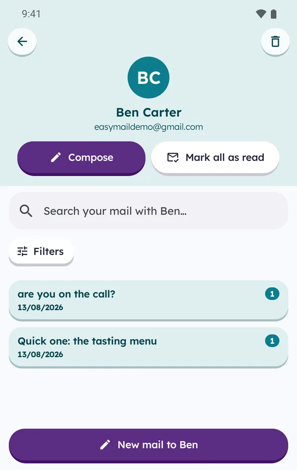
For iPhone and Android
Easymail shows the email you already have, as a chat. Each message gets its own bubble, quoted text and signatures fold away on their own, and you reply right below the last message. Sign in with Gmail, Outlook, iCloud or almost any other mailbox: no new address, no new account.
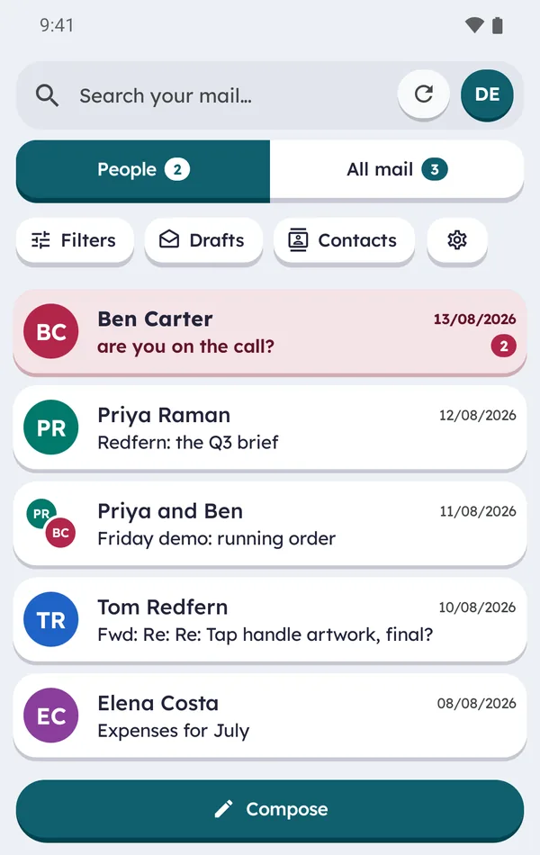
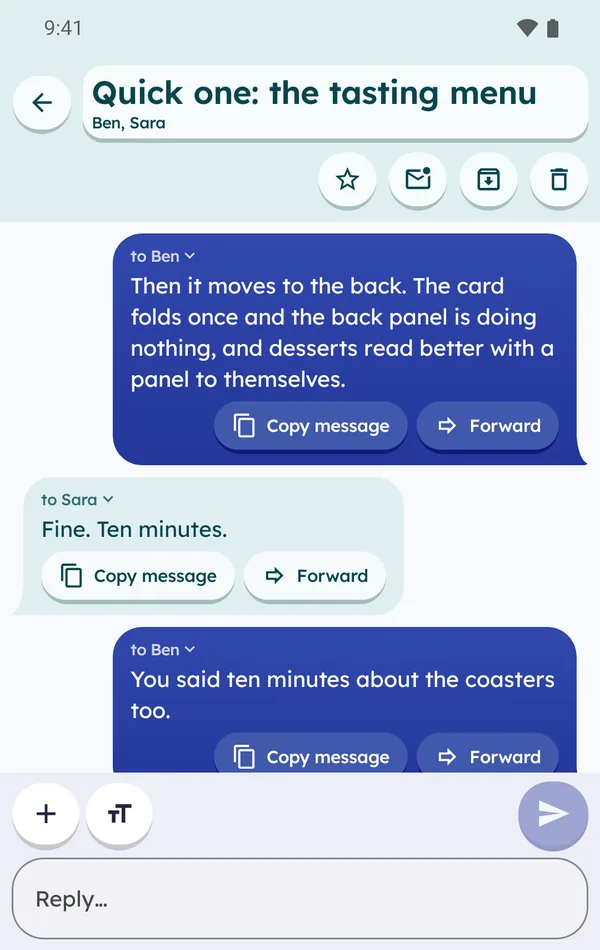
On the left are the messages in a classic mail app, and on the right, the same messages in Easymail. In real email, every reply carries the entire conversation history and a signature. Easymail folds them away.
Read the reply, not the history.
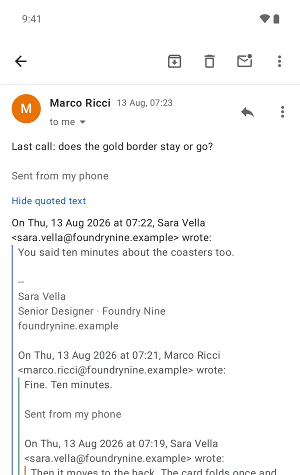
The app on the left is a generic example made for this comparison, not a real email provider's app.
Here's a short video showing the same email as it usually looks, then as a chat in Easymail.
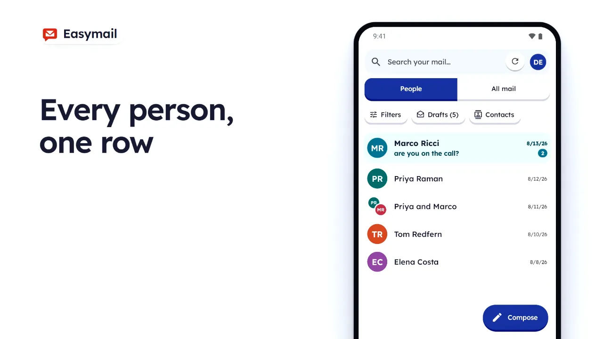
Play the videoThe new design is easier to use: every row is a card, the buttons are raised and the text is easier to read.
Tap a name to see all your emails with that person, with “Compose” and “Mark all as read” right there.

If someone writes to you often and you never read their emails, you can stop receiving them: their page opens so you can confirm.
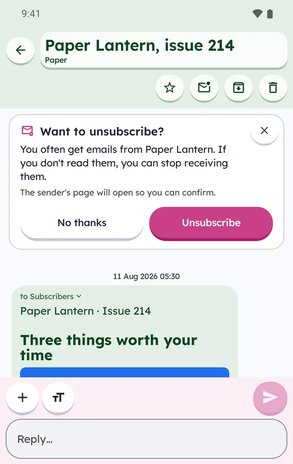
Choose the colour of your bubbles and a background for your chats.
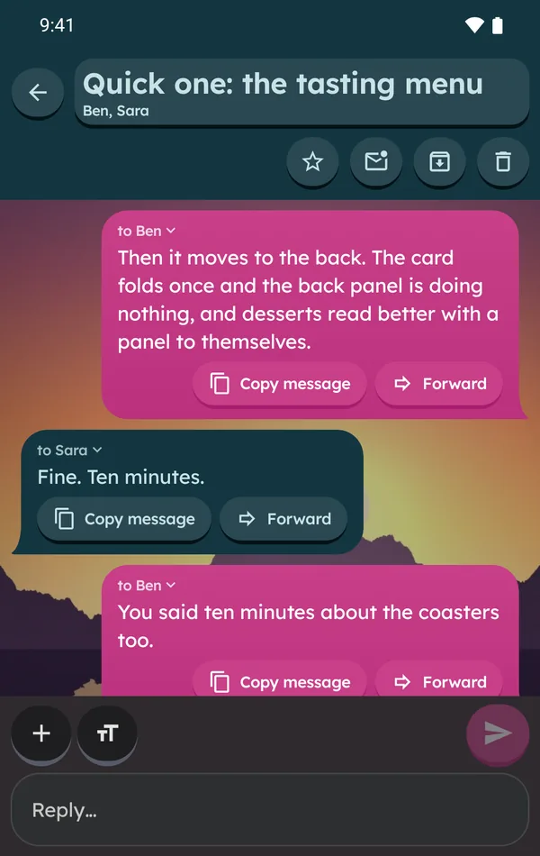
Gmail, Outlook, iCloud and almost any other mailbox in one app. See only mail from people, or all your mailboxes together.
Easymail asks for a single Google permission and no others. It does not read your contacts, your calendar or your location, and of your files only the ones you attach or share.
gmail.modifyNeeded to display threads, messages and attachments, to send the replies you write, and to mark a conversation as read when you open it. A read-only permission can do neither of the last two, and both are central to the app. The same permission also authorises reading your send-as aliases, which is how the app tells your own messages from everyone else's and places them on the correct side of the conversation.
Per iPhone e Android
Easymail ti mostra la posta che hai già, come una chat. Ogni messaggio è una bolla, il testo citato e le firme si nascondono da soli, e rispondi proprio sotto l'ultimo messaggio. Accedi con Gmail, Outlook, iCloud, Libero o quasi ogni altra casella: non serve un indirizzo nuovo né un account nuovo.
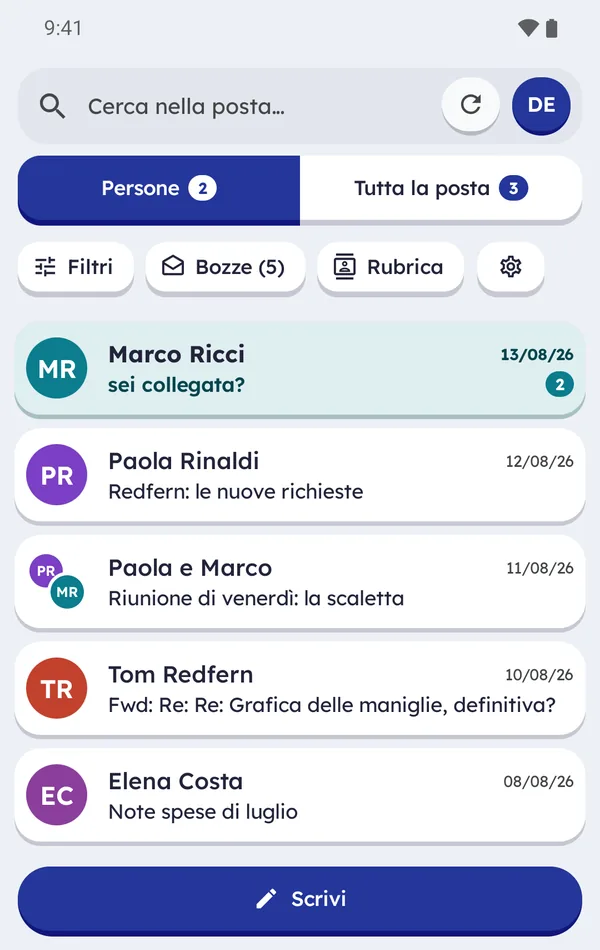
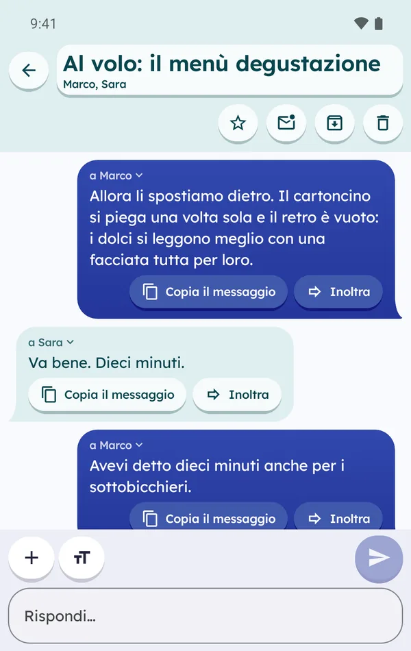
A sinistra, i messaggi in una classica app di posta; a destra, gli stessi messaggi in Easymail. Nella posta di tutti i giorni, ogni risposta si porta dietro tutta la cronologia e una firma: Easymail le mette da parte.
Leggi la risposta, non la cronologia.
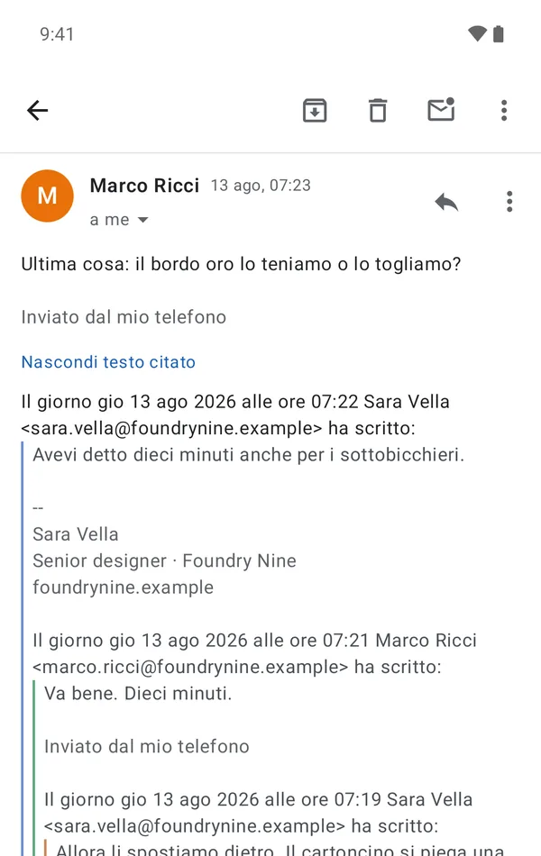
L'app a sinistra è un esempio generico, creato per questo confronto, non l'app di un vero servizio di posta.
Un breve video: la stessa posta, prima come la vedi di solito, poi come una chat in Easymail.
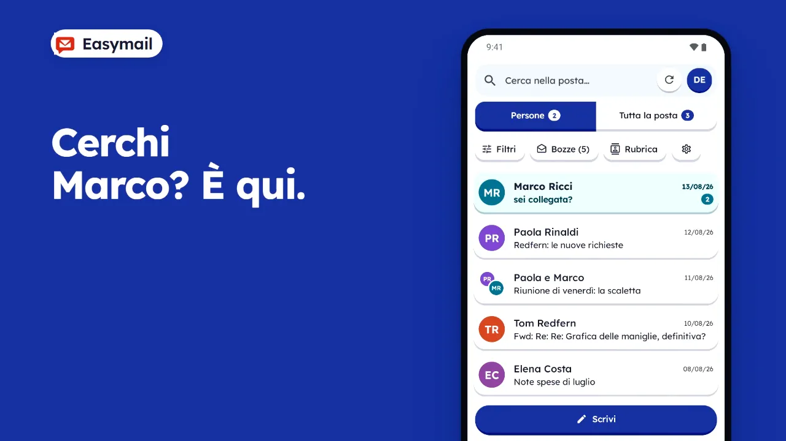
Avvia il videoUna grafica nuova, più comoda: righe a schede, tasti in rilievo e testo più leggibile.
Tocchi un nome e trovi tutte le vostre mail, con «Scrivi» e «Segna tutte come lette» a portata di mano.
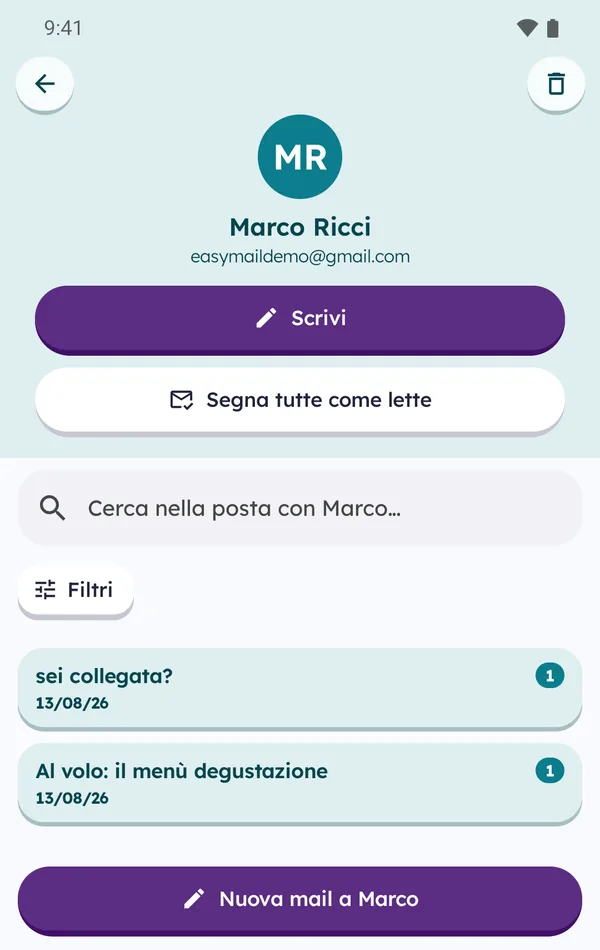
Se un mittente ti scrive spesso e non leggi le sue mail, puoi smettere di riceverle: si apre la sua pagina per confermare.
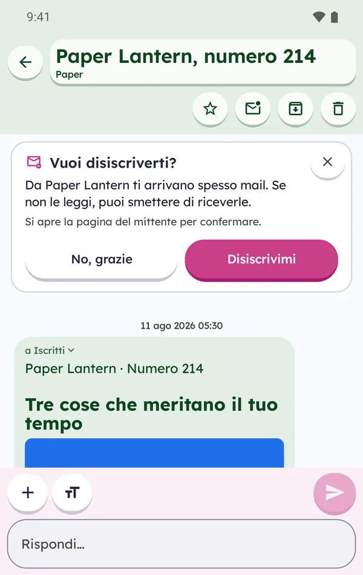
Scegli il colore delle tue bolle e lo sfondo delle chat.
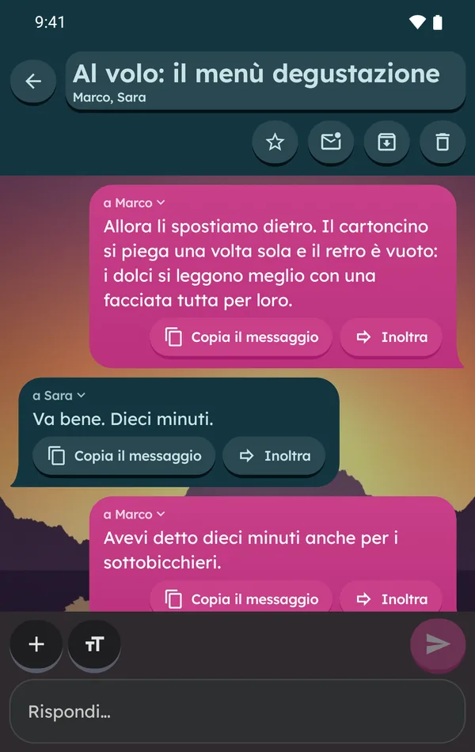
Gmail, Outlook, iCloud, Libero e quasi ogni altra casella nella stessa app. Puoi vedere solo le mail delle persone o tutte le caselle insieme.
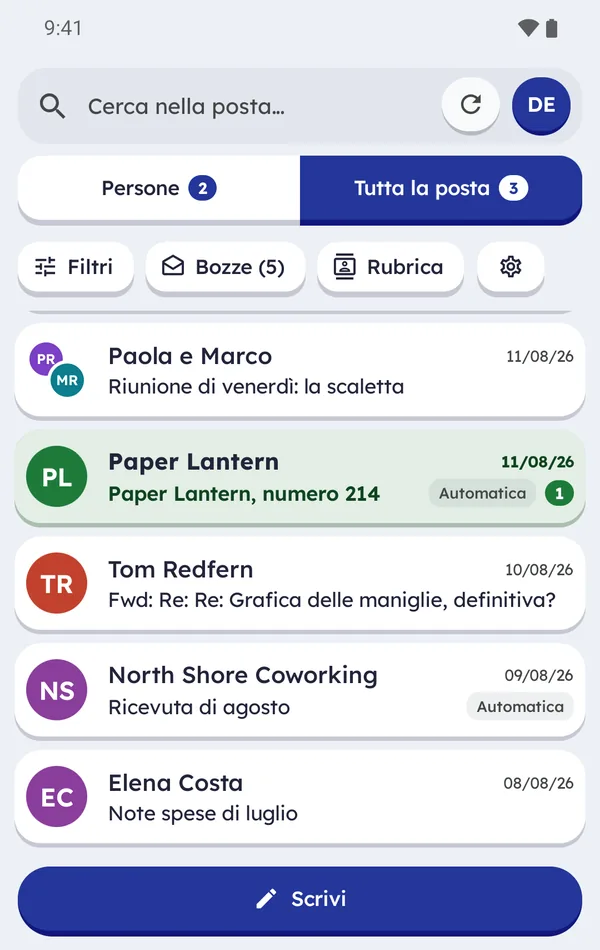
Easymail chiede un solo permesso Google e nessun altro. Non legge i tuoi contatti, il calendario o la posizione, e dei tuoi file solo quelli che alleghi o condividi.
gmail.modifyServe per mostrare conversazioni, messaggi e allegati, per inviare le risposte che scrivi e per segnare una conversazione come letta quando la apri. Un permesso di sola lettura non consente le ultime due, che sono centrali nell'app. Lo stesso permesso autorizza anche la lettura degli alias di invio: è così che l'app distingue i tuoi messaggi da quelli degli altri e li dispone dal lato giusto della conversazione.
Pour iPhone et Android
Easymail affiche la boîte mail que vous avez déjà, comme une discussion. Chaque message est une bulle, le texte cité et les signatures se replient d'eux-mêmes, et vous répondez juste sous le dernier message. Connectez-vous avec Gmail, Outlook, iCloud ou presque toute autre messagerie : pas besoin de nouvelle adresse ni de nouveau compte.
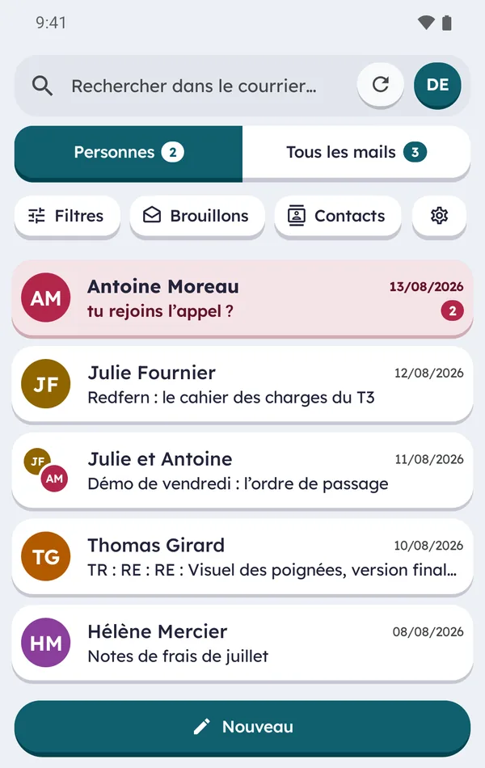
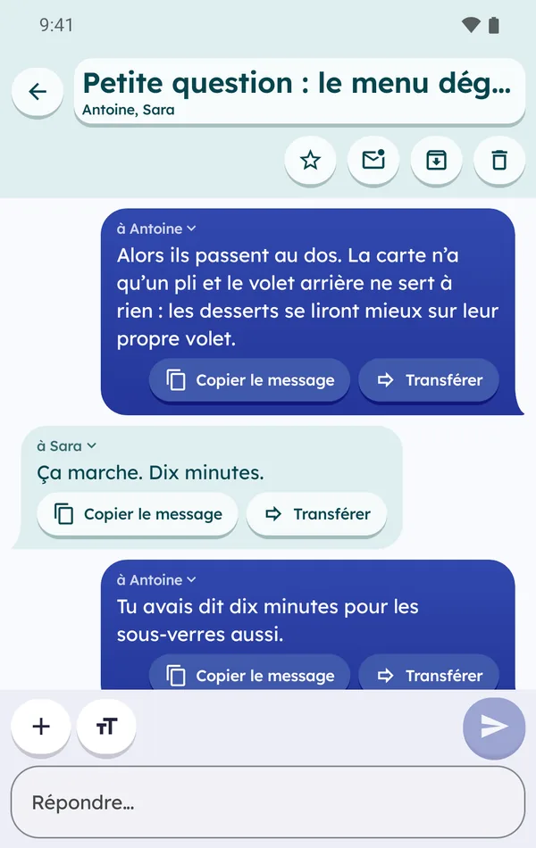
À gauche, les messages dans une messagerie classique ; à droite, les mêmes dans Easymail. Dans la vraie vie, chaque réponse traîne tout l'historique et une signature : Easymail les replie.
Lisez la réponse, pas l'historique.
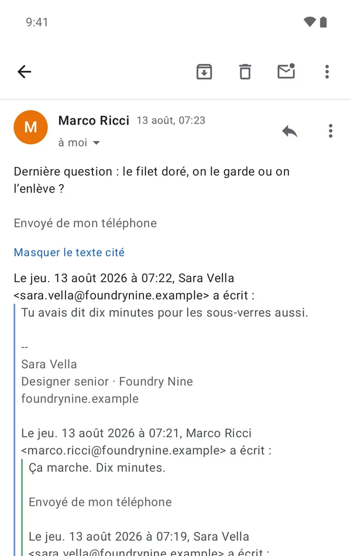
L'application de gauche est un exemple générique, créé pour cette comparaison, et non celle d'un véritable fournisseur de messagerie.
Une courte vidéo : les mêmes e-mails, d'abord tels qu'on les voit d'habitude, puis comme une discussion dans Easymail.
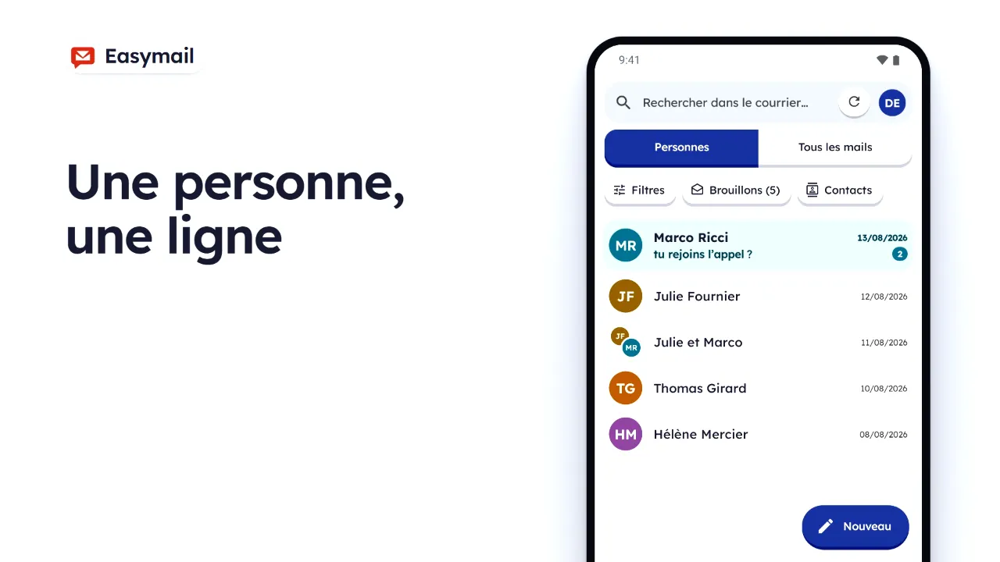
Lancer la vidéoUn nouveau design plus pratique : chaque ligne est une carte, les boutons sont en relief et le texte est plus lisible.
Touchez un nom pour voir tous vos échanges, avec « Nouveau » et « Tout marquer comme lu » à portée de main.
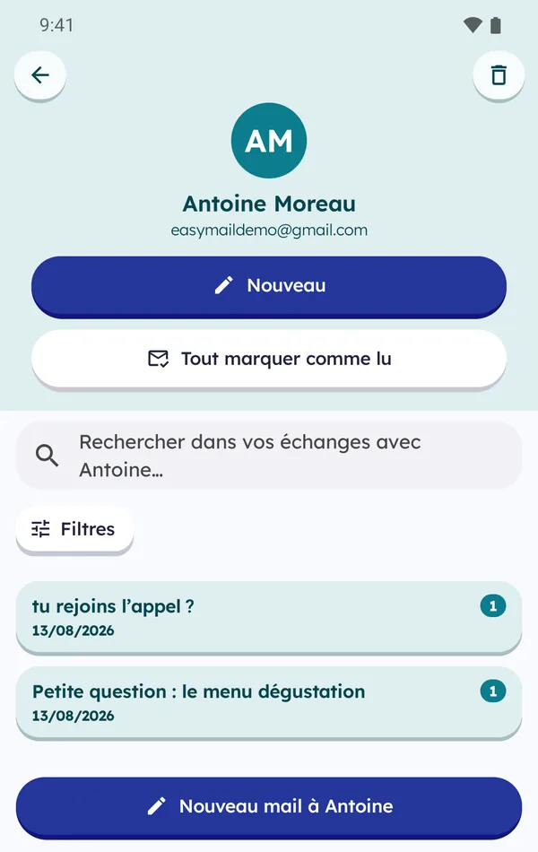
Si un expéditeur vous écrit souvent et que vous ne lisez pas ses e-mails, vous pouvez choisir de ne plus les recevoir : sa page s'ouvre pour confirmer.
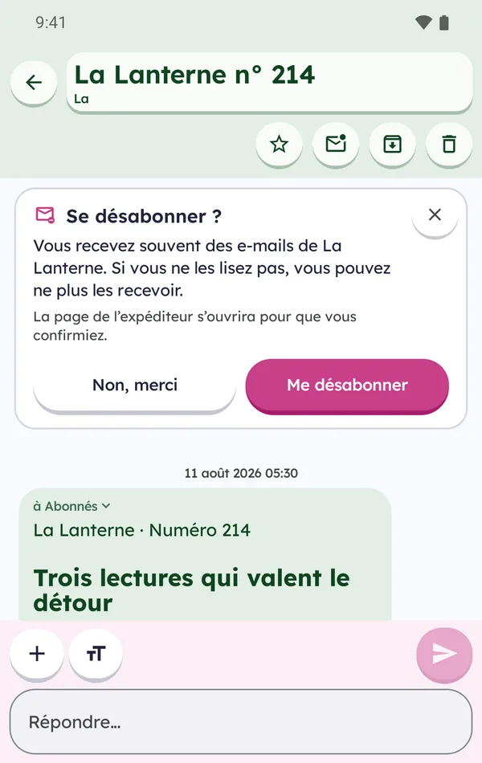
Choisissez la couleur des bulles et le fond des discussions.
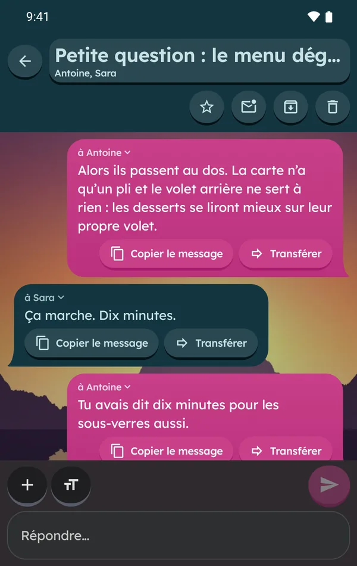
Gmail, Outlook, iCloud et presque toute autre messagerie dans la même application. Affichez uniquement les e-mails des personnes, ou toutes vos boîtes ensemble.
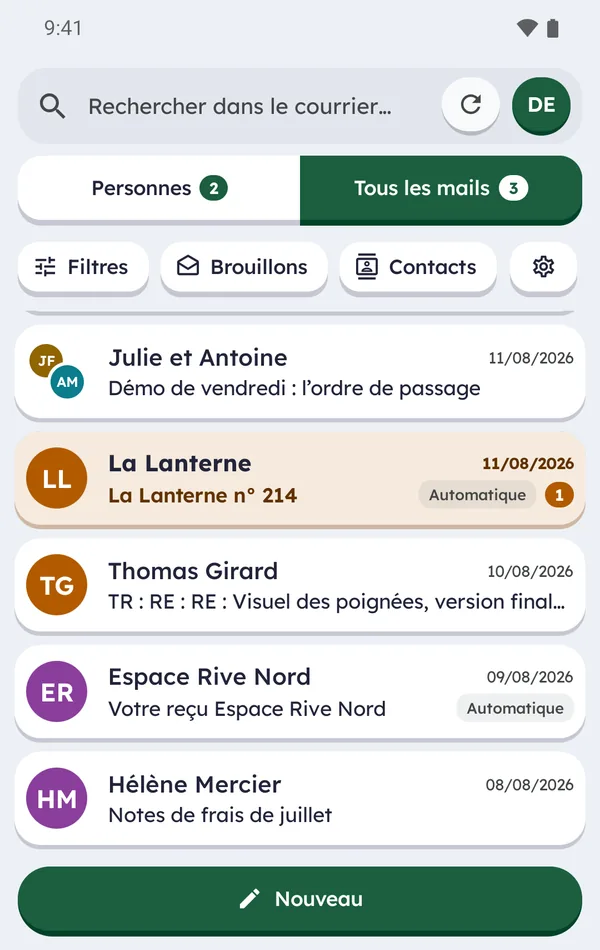
Easymail demande une seule autorisation Google, et aucune autre. Elle ne lit ni vos contacts, ni votre agenda, ni votre position, et de vos fichiers seulement ceux que vous joignez ou partagez.
gmail.modifyNécessaire pour afficher les fils, les messages et les pièces jointes, pour envoyer les réponses que vous écrivez et pour marquer une conversation comme lue à son ouverture. Une autorisation en lecture seule ne permet ni l'un ni l'autre, et les deux sont au cœur de l'application. La même autorisation permet aussi de lire vos alias d'envoi : c'est ainsi que l'application distingue vos messages de ceux des autres et les place du bon côté de la conversation.
Für iPhone und Android
Easymail zeigt dir die E-Mails, die du schon hast, als Chat. Jede Nachricht erscheint als Sprechblase, Zitate und Signaturen klappen sich von selbst ein, und du antwortest direkt unter der letzten Nachricht. Melde dich mit Gmail, Outlook, iCloud oder fast jedem anderen Postfach an: keine neue Adresse, kein neues Konto.


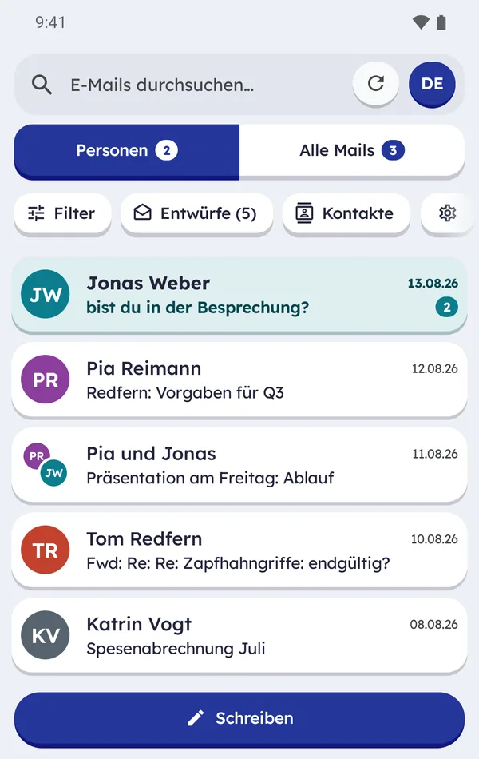
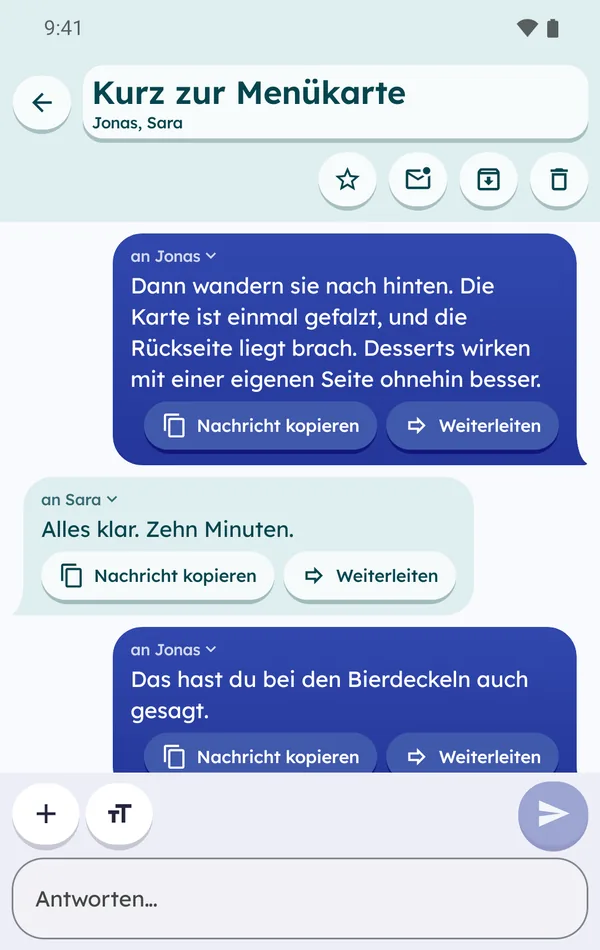
Links die Nachrichten in einer klassischen Mail-App, rechts dieselben in Easymail. Im echten Postfach schleppt jede Antwort den ganzen Verlauf und eine Signatur mit: Easymail klappt beides ein.
Lies die Antwort, nicht den Verlauf.
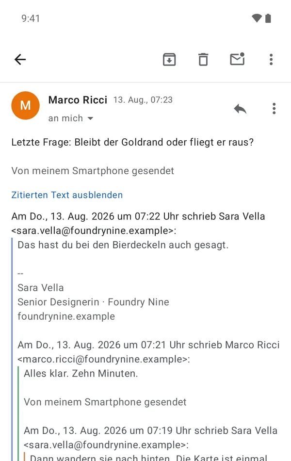
Die App links ist ein allgemeines Beispiel, das eigens für diesen Vergleich erstellt wurde, nicht die App eines echten Anbieters.
Ein kurzes Video zeigt dieselben E-Mails erst so, wie man sie kennt, dann als Chat in Easymail.
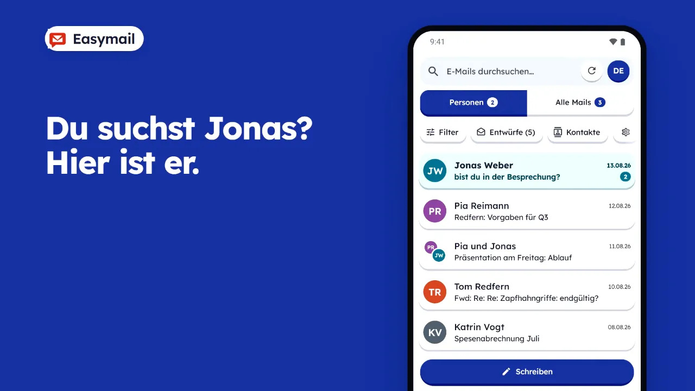
Video abspielenDas neue, bequemere Design: Jede Zeile ist eine Karte, die Tasten sind plastisch und der Text ist besser lesbar.
Tippe auf einen Namen, um alle eure Mails zu sehen, mit „Schreiben“ und „Alle als gelesen markieren“ gleich zur Hand.
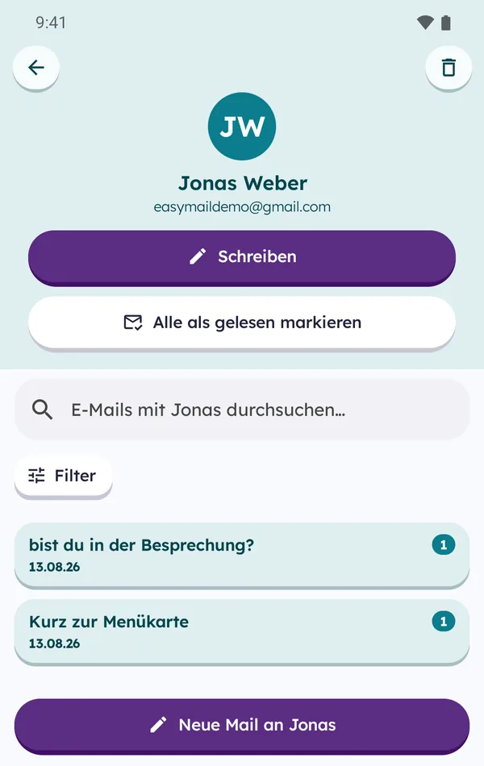
Wenn dir ein Absender oft schreibt und du seine Mails nicht liest, kannst du sie abbestellen. Zur Bestätigung öffnet sich seine Seite.
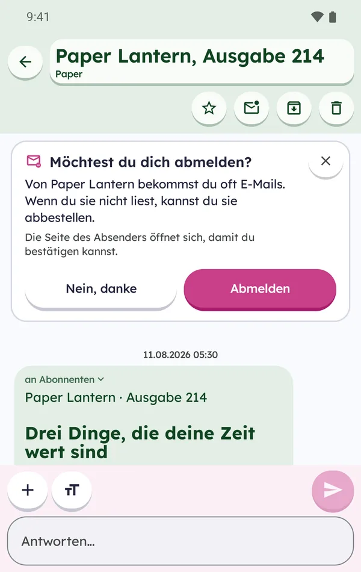
Wähle die Farbe der Blasen und den Chat-Hintergrund.
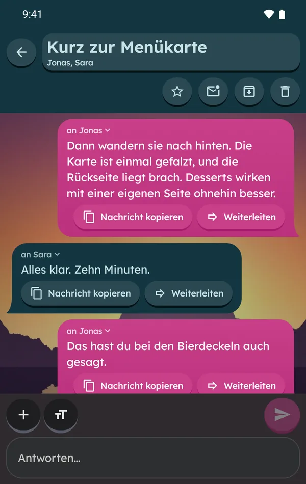
Gmail, Outlook, iCloud und fast jedes andere Postfach in einer App. Sieh nur Mails von Personen oder alle Postfächer zusammen.
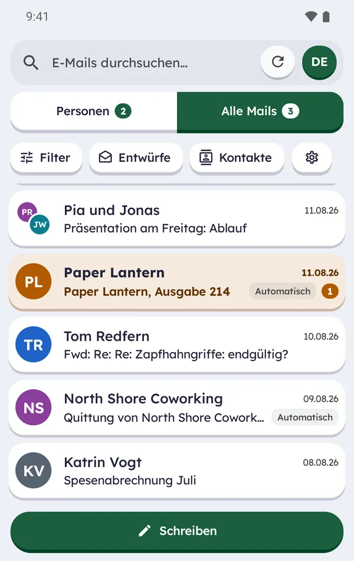
Easymail fordert eine einzige Google-Berechtigung an und keine weiteren. Sie liest weder deine Kontakte noch deinen Kalender oder deinen Standort, und von deinen Dateien nur die, die du anhängst oder teilst.
gmail.modifyNötig, um Threads, Nachrichten und Anhänge anzuzeigen, die von dir geschriebenen Antworten zu senden und eine Unterhaltung beim Öffnen als gelesen zu markieren. Eine Nur-Lese-Berechtigung erlaubt die beiden letzten Punkte nicht, und beide sind zentral für die App. Dieselbe Berechtigung erlaubt auch das Lesen deiner Absender-Aliase: so unterscheidet die App deine eigenen Nachrichten von denen der anderen und ordnet sie auf der richtigen Seite der Unterhaltung an.
Kostenlos für iPhone und Android.
Para iPhone y Android
Easymail te muestra el correo que ya tienes, como un chat. Cada mensaje es una burbuja, el texto citado y las firmas se ocultan solos, y respondes justo debajo del último mensaje. Inicia sesión con Gmail, Outlook, iCloud o casi cualquier otro correo, sin crear una dirección ni una cuenta nuevas.
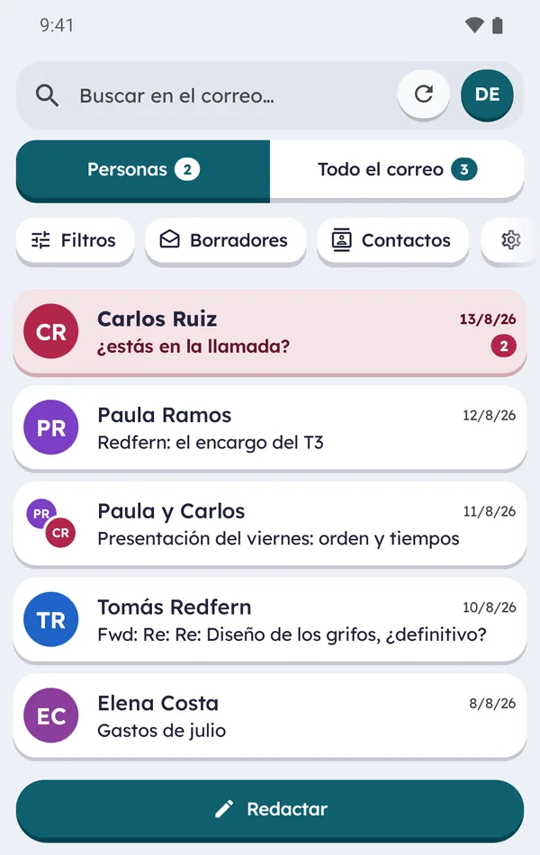
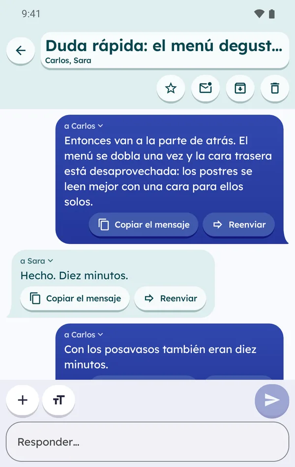
A la izquierda, los mensajes en una aplicación de correo clásica; a la derecha, los mismos en Easymail. En el correo de verdad, cada respuesta arrastra todo el historial y una firma, pero Easymail los oculta.
Lee la respuesta, no el historial.
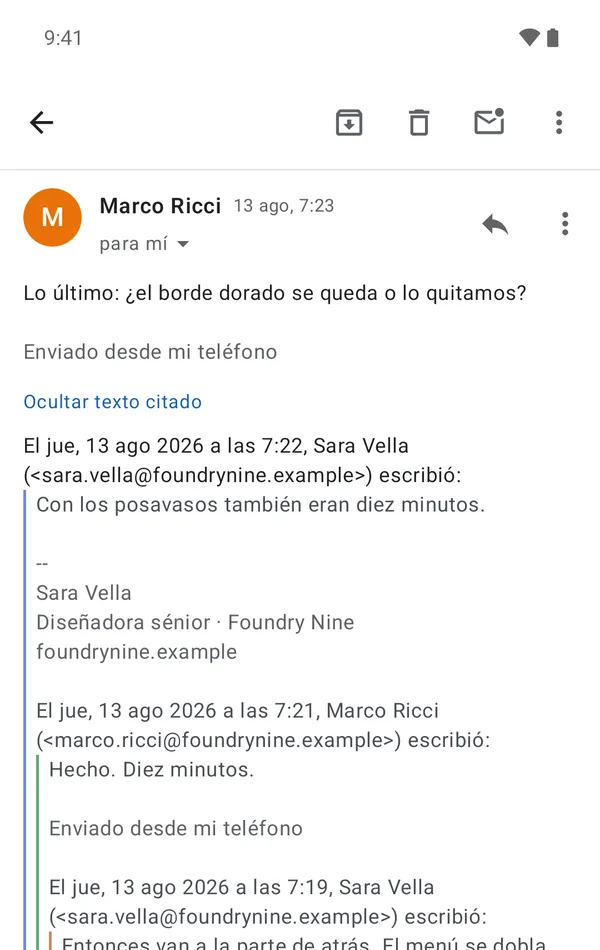
La aplicación de la izquierda es un ejemplo genérico, creado para esta comparación, no la de un proveedor de correo real.
Un vídeo breve: el mismo correo, primero como lo ves siempre y luego como un chat en Easymail.
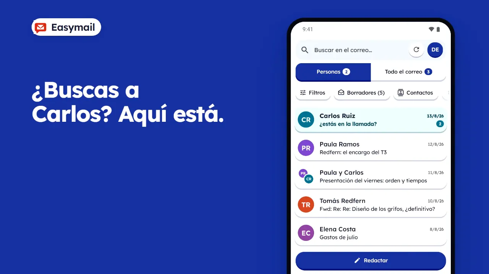
Reproducir el vídeoUn diseño nuevo y más cómodo: cada fila es una tarjeta, los botones tienen relieve y el texto se lee mejor.
Toca un nombre y verás todos los correos con esa persona, con «Redactar» y «Marcar todo como leído» a mano.
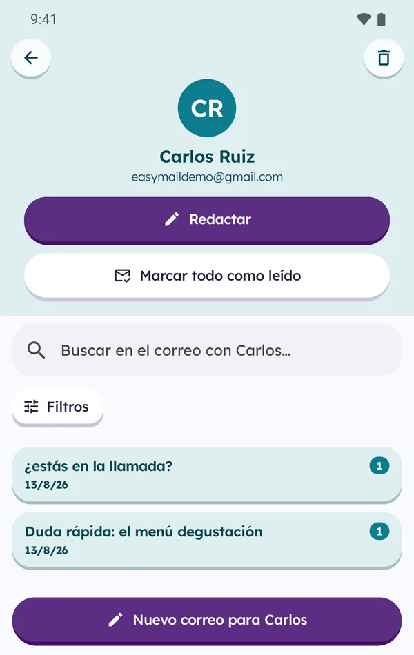
Si un remitente te escribe a menudo y no lees sus correos, puedes dejar de recibirlos: se abre su página para confirmar.
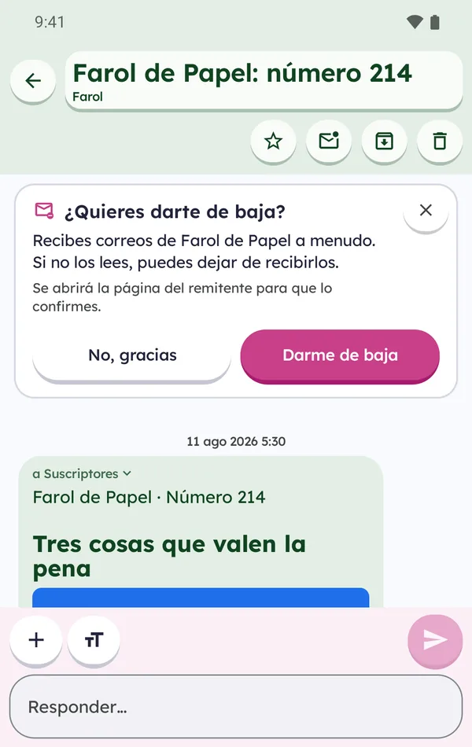
Elige el color de tus burbujas y el fondo de los chats.
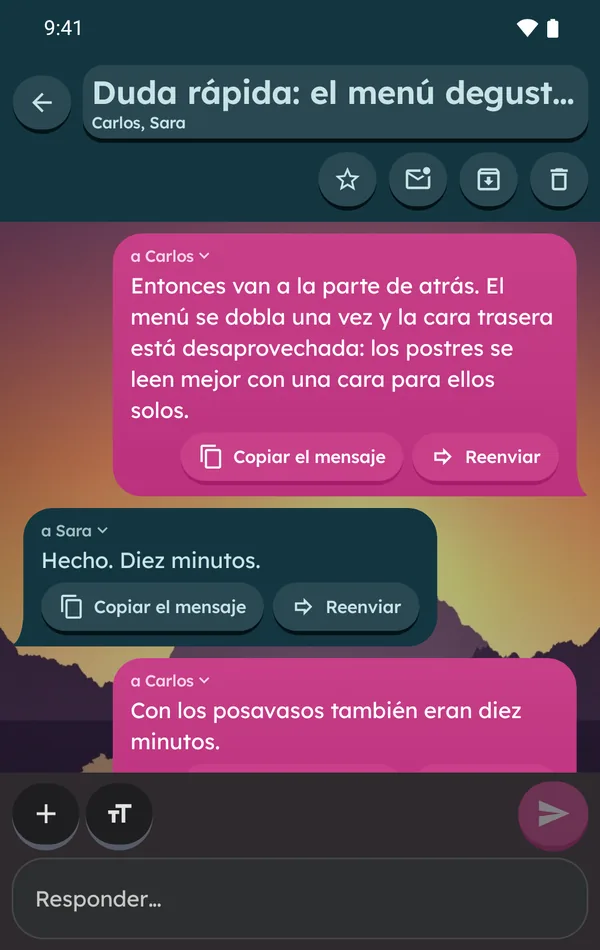
Gmail, Outlook, iCloud y casi cualquier otro correo en la misma aplicación. Puedes ver solo el correo de personas o todos tus buzones juntos.
Easymail pide un solo permiso de Google y ninguno más. No lee tus contactos, ni tu calendario, ni tu ubicación, y de tus archivos solo los que adjuntas o compartes.
gmail.modifyNecesario para mostrar hilos, mensajes y adjuntos, para enviar las respuestas que escribes y para marcar una conversación como leída al abrirla. Un permiso de solo lectura no permite las dos últimas, y ambas son centrales en la aplicación. Ese mismo permiso autoriza también la lectura de tus alias de envío: así la aplicación distingue tus mensajes de los de los demás y los coloca en el lado correcto de la conversación.
适用于 iPhone 和 Android 设备
Easymail 让你用现有的邮箱像聊天一样看邮件：一封邮件一个气泡，引用和签名自动折叠，回复直接写在最新一封邮件的下方。Gmail、Outlook、iCloud 以及几乎所有其他邮箱都能直接登录，不用换新地址，也不用注册新账号。
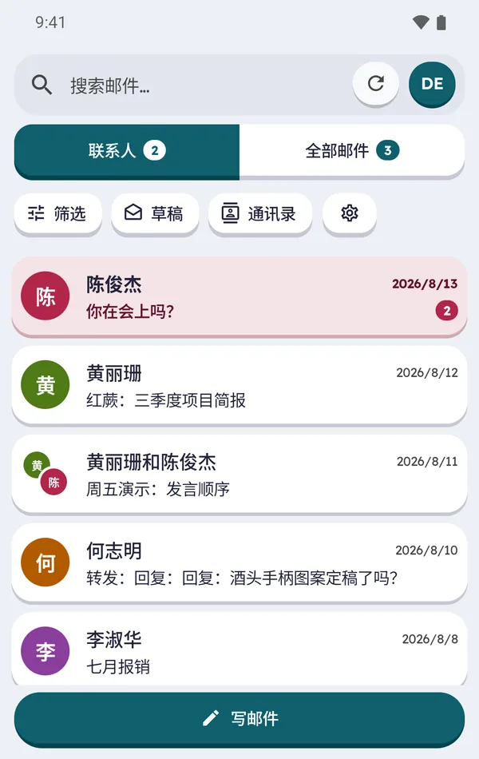
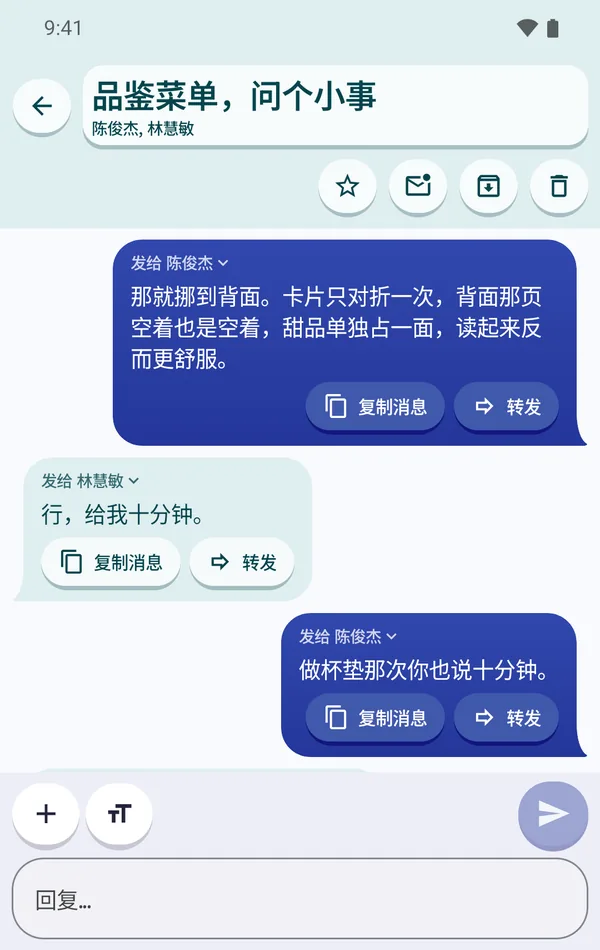
左边是传统邮件应用里的邮件，右边是同样的邮件在 Easymail 里的显示效果。真实的邮件里，每封回复都带着之前的全部往来和一段签名，而 Easymail 会把它们折叠起来。
只看回复，不看历史记录。
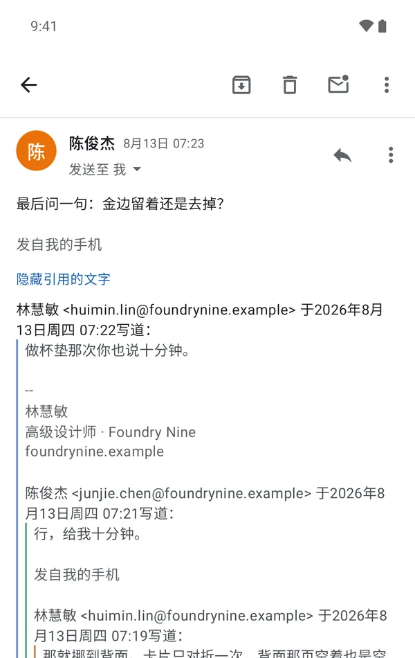
左边的应用是为这次对比制作的通用示例，并非任何真实邮件服务商的应用。
一段短视频：同样的邮件，先看平常的样子，再看在 Easymail 里像聊天一样显示的样子。
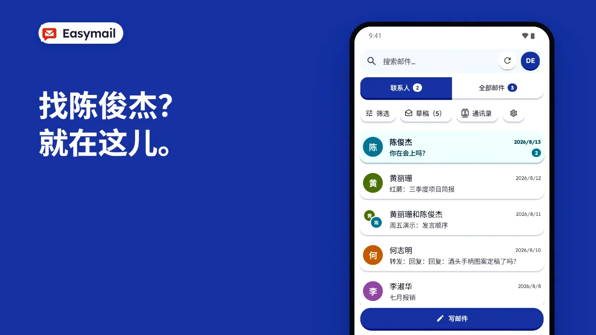
播放视频全新设计，更好用：列表的每一行都是卡片，按钮更有立体感，文字也更易读。
点击联系人姓名，即可查看与该联系人之间的所有邮件。“写邮件”和“全部标为已读”功能触手可及。
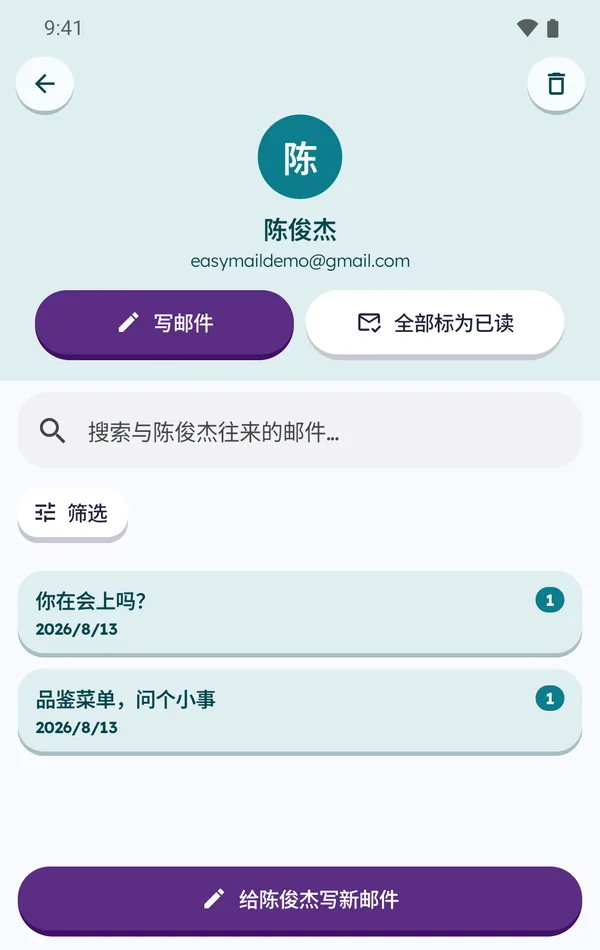
如果某个发件人经常给你发送邮件，而你并不阅读，可以选择不再接收。系统会打开对方的页面，供你确认。
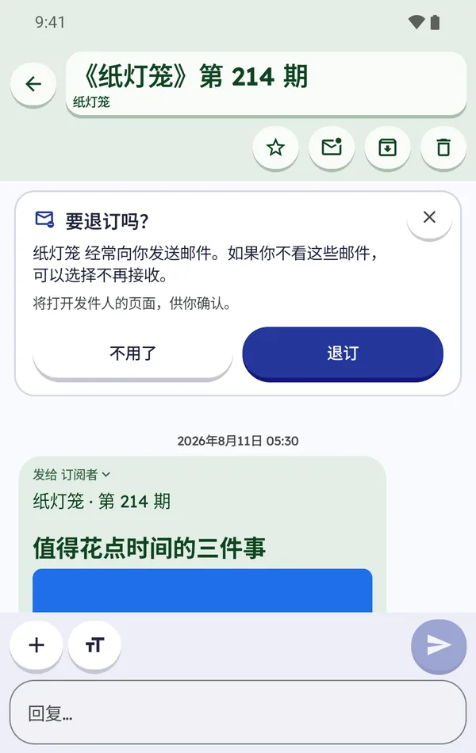
选择气泡颜色和聊天背景。
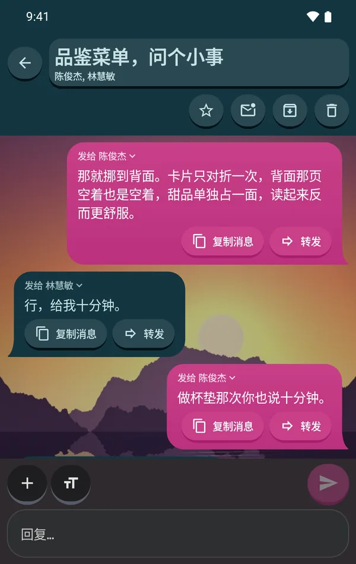
Gmail、Outlook、iCloud 和几乎所有其他邮箱都在同一个应用里。你可以只查看来自联系人的邮件，或者将所有邮箱合并查看。
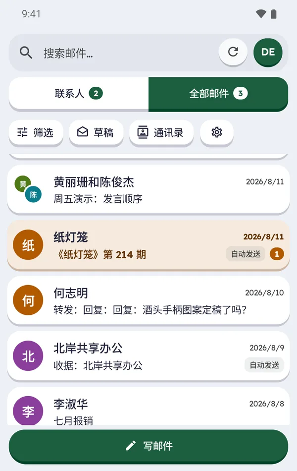
Easymail 只申请一项 Google 权限，此外没有别的。它不读取你的通讯录、日历或位置；你的文件也只读取你附加或分享的那些。
gmail.modify用于显示会话、邮件和附件，发送你写的回复，以及在你打开会话时把它标记为已读。只读权限无法完成后两项，而这两项正是本应用的核心。同一项权限也允许读取你的发件别名：应用正是据此把你自己的邮件与他人的区分开，并放在会话中正确的一侧。
iPhone と Android に対応
Easymail なら、今お使いのメールをチャットのように読めます。メッセージは吹き出しで並び、引用や署名は自動で折りたたまれ、返信は画面下の入力欄から書けます。Gmail、Outlook、iCloud、そのほかほとんどのメールにそのままログインでき、新しいアドレスやアカウントは必要ありません。
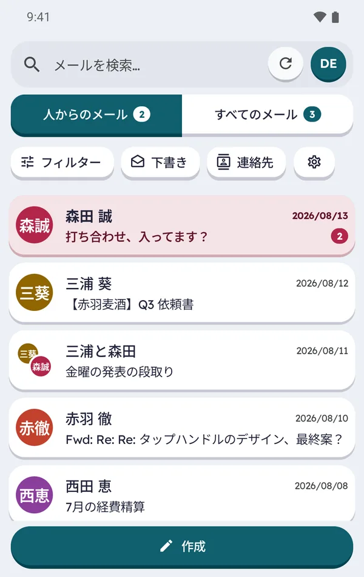
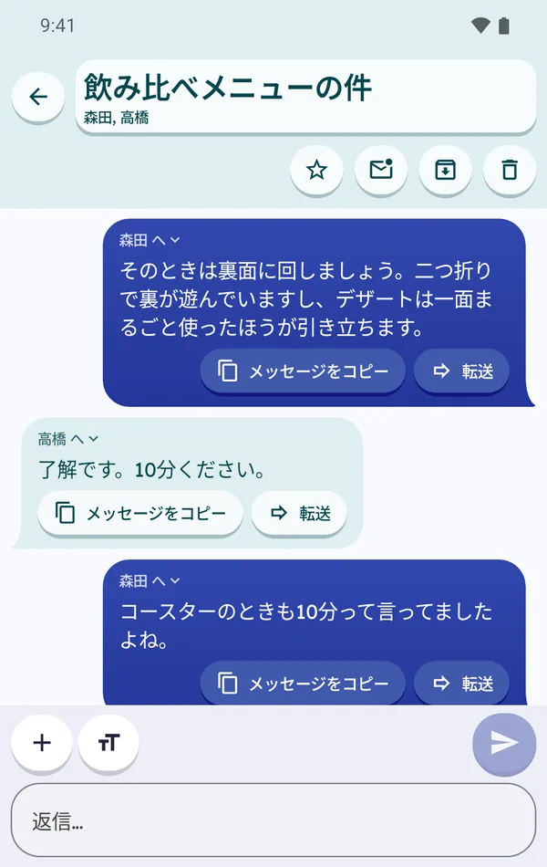
左は従来のメールアプリ、右は Easymail で表示した同じメッセージです。実際のメールでは、返信のたびに履歴と署名がすべて付いてきますが、Easymail はそれを折りたたみます。
読むのは、新しい返信だけ。
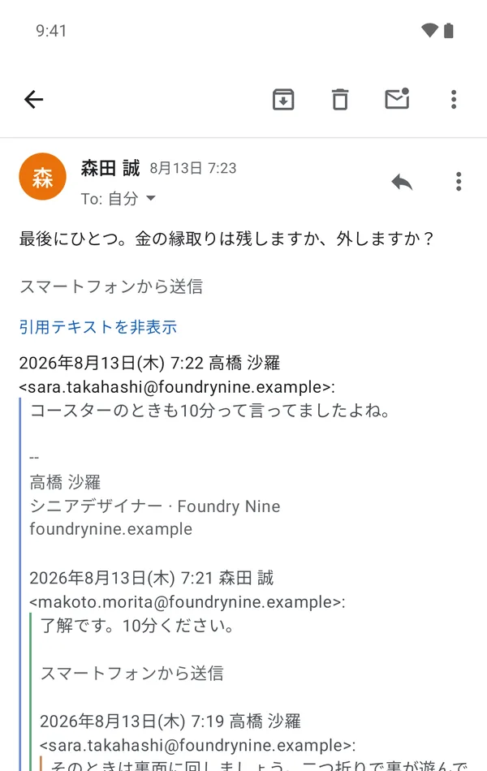
左のアプリはこの比較のために作成した汎用的な例であり、実在するメールサービスのアプリではありません。
同じメールを、いつもの表示と Easymail のチャットのような表示で見比べる短い動画です。
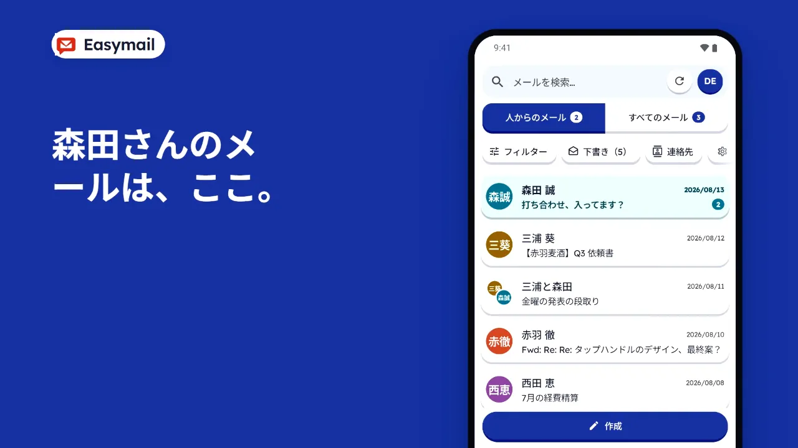
動画を再生デザインが一新され、さらに使いやすくなりました。一覧の各行がカードになり、ボタンは立体的に、文字は読みやすくなりました。
名前をタップすると、その人とのメールのやり取りをすべて見ることができます。「作成」や「すべて既読にする」ボタンもすぐそこにあります。
よくメールが届くのに読んでいない差出人のメールは、配信を停止できます。確認のため、差出人のページが開きます。
吹き出しの色やチャットの背景を選べます。
Gmail、Outlook、iCloud、その他のほとんどのメールをひとつのアプリで管理できます。人からのメールだけ、またはすべてのメールボックスをまとめて表示できます。
Easymail が要求する Google の権限は一つだけで、それ以外はありません。連絡先もカレンダーも位置情報も読み取りません。ファイルは、あなたが添付または共有したものだけを読み取ります。
gmail.modifyスレッド・メール本文・添付ファイルを表示し、あなたが書いた返信を送信し、会話を開いたときに既読にするために必要です。読み取り専用の権限では後の二つができず、いずれもこのアプリの中心的な機能です。同じ権限で送信エイリアスも読み取れます。これにより、自分のメールと他の人のメールを区別し、会話の正しい側に配置しています。
iPhone 및 Android용
Easymail은 지금 쓰는 메일을 채팅처럼 보여 줍니다. 메시지는 말풍선으로 하나씩 표시되고, 인용문과 서명은 알아서 접히며, 답장은 맨 아래 입력창에서 바로 쓸 수 있습니다. Gmail, Outlook, iCloud는 물론 그 밖의 거의 모든 메일함으로 로그인할 수 있고, 새 주소도 새 계정도 필요 없습니다.
왼쪽은 기존 메일 앱에서 본 메시지이고, 오른쪽은 Easymail에서 본 같은 메시지입니다. 실제 메일에서는 답장마다 이전 기록 전체와 서명이 따라붙지만, Easymail은 이를 접어 둡니다.
지난 기록 말고 답장만 읽으세요.
왼쪽 앱은 이 비교를 위해 만든 일반적인 예시이며, 실제 메일 서비스의 앱이 아닙니다.
늘 보던 메일 화면과 Easymail에서 채팅처럼 보이는 같은 메일을 비교한 짧은 영상입니다.
동영상 재생더 편한 새로운 디자인: 목록의 각 줄이 카드로 바뀌고, 버튼은 입체적으로 표현되었으며, 글자는 더 읽기 쉽게 개선되었습니다.
이름을 누르면 그 사람과 주고받은 모든 메일을 확인할 수 있으며, '편지쓰기'와 '모두 읽음으로 표시' 기능도 바로 이용할 수 있습니다.
자주 메일을 보내지만 읽지 않는 발신자의 경우, 해당 발신자의 메일 수신을 중단할 수 있습니다. 이를 확인하기 위해 발신자 페이지가 열립니다.
말풍선의 색상과 채팅 배경을 선택할 수 있습니다.
Gmail, Outlook, iCloud를 비롯한 거의 모든 메일함을 하나의 앱에서 관리할 수 있습니다. 사람에게서 온 메일만 보거나 모든 메일함을 함께 볼 수 있습니다.
Easymail이 요청하는 Google 권한은 한 가지뿐이며 그 외에는 없습니다. 연락처, 캘린더, 위치는 읽지 않으며, 파일은 직접 첨부하거나 공유한 것만 읽습니다.
gmail.modify스레드와 메시지, 첨부파일을 표시하고, 사용자가 쓴 답장을 보내고, 대화를 열 때 읽음으로 표시하기 위해 필요합니다. 읽기 전용 권한으로는 뒤의 두 가지가 불가능하며, 둘 다 앱의 핵심입니다. 같은 권한으로 보내는 별칭도 읽을 수 있으며, 이를 통해 본인의 메시지와 다른 사람의 메시지를 구분해 대화의 올바른 쪽에 배치합니다.
This page reproduces the notice shown inside the app, which you accept on first launch.
Easymail displays the mail in your mailbox as chat conversations, and lets you reply and start new messages. It works with Gmail, with Outlook and Microsoft 365, and with any provider that offers IMAP. It is an alternative way of reading the same mailbox, not a separate mail service.
Easymail reads your messages and their attachments, the addresses of senders and recipients, and sends messages on your behalf. For a Google account it asks Google for a single permission, reading and modifying Gmail, which also lets it read your send-as aliases so it can tell which messages are yours. For a Microsoft account it asks Microsoft for permission to read and change your mail, send messages on your behalf, read the name and address of your profile, and keep this access so it can update your mail even when the app is closed. It does not ask for access to your calendar or contacts. A Microsoft mailbox linked with an earlier version of the app keeps working as before, with access to mail over IMAP and the ability to send, until the new permissions are confirmed with Microsoft, either by you or by your organisation's administrator. For any other provider it uses the address and password you enter.
Your mail travels between your phone and your provider without passing through any Easymail server. The app talks directly to Google, to Microsoft, or to the mail server you named, over an encrypted connection. Connections without encryption are refused rather than made. Your messages, their attachments and your contacts are never sent to us or to any third party, and are never used for advertising. Advertising, which the app does not show, and the usage statistics, which never contain anything from your mail, are described in sections 4 and 5.
The app shows no advertising. On Android, in the European Economic Area, the United Kingdom and Switzerland, once you have linked your first mailbox you are asked for your consent in Google's form: there you choose whether the usage statistics described in section 5 may be sent and whether they may be used to measure the Google Ads campaigns through which Easymail becomes known. You can change your answer at any time in Settings, under Privacy options. Neither the form nor the statistics ever see your mail, and nothing is used to select or personalise ads. On the iPhone, if you have chosen the statistics, it is Apple that counts the installs coming from our ads: it tells whoever showed the ad, Google or Apple Ads, how many installs come from each campaign and how many of them went on to link a first mailbox, as overall numbers and without saying whose they are. The first time it starts, the app also asks Apple whether your install comes from one of our ads on the App Store: Apple answers with the campaign number, never with anything that says who you are, and the app adds it to the statistics. The app does not use your phone's advertising identifier and, on the iPhone, never asks for permission to track you.
The app can send Google Analytics for Firebase, a Google service, a few events about how the app is used: that you opened it and accepted this notice, which mail service you chose from the list to link a mailbox (for example Gmail, Outlook, Yahoo or “Other”: never the address you type) and which kind of mailbox it is (Google, Microsoft or another provider), whether the phone already had a mailbox, whether linking worked or, if not, why and at which step it stopped, that you linked your first mailbox and with which service, whether its list of conversations then appeared, roughly how long it took or why not, whether a mailbox later asked you to sign in again and worked again afterwards, and, when the app reminds you of something, which kind of reminder it was (for example the one about linking your mailbox) and whether you opened it, never what it said. Once your first mailbox is linked, the statistics also say which parts of the app you use in a day (for example the view by person or “All mail”, search, filters, writing, replying to or forwarding an email, opening or adding an attachment, archiving or deleting, unsubscribing from a newsletter, saving a contact or a group), but not how many times you use each one, with whom or on which messages; that you sent your first email; that you added a second mailbox, or a third or later one, and with which service; which setting you changed and, for the text size and the view, which option you chose; what you answered when the phone asked you for permission to show notifications; whether you opened or closed What's new, finished or left the tutorial, opened “Write to us” and passed the message on to your mail app; that the app suggested you leave a review, which only happens after you have used it for a while; and how you answered the question after a crash. When the app shows you an error while you use it, it also sends where the error appeared (for example the list or sending an email) and what kind of error it was (for example no connection or a sign-in that has expired), never the text of the error. When something fails without you seeing it, for example a background refresh of your mail, the app sends where it happened and what kind of error it was, at most once a day for each kind, never the text. Every event also carries how many mailboxes you have linked (one, two, three or more) and of which kind, along with the view and the text size you have chosen. If you remove your last mailbox and answer the question about why, the reason you pick from those offered is sent too; if you skip the question, nothing is sent. With them comes what Google receives from every app that uses this service: the date and time of each event, every time you open the app and how long you use it, when you update the app or the system and, on Android, if you uninstall it; a random identifier of this installation (on the iPhone, also the one Apple assigns to Easymail's apps on that phone), the phone's model and system, the app version and language, and the country, derived from the IP address. Nothing from your mail is ever sent: no addresses, names, subjects, text, attachments, mailbox domain or number of messages, and data obtained from your Google account never goes into these statistics. They show how the app is used and where people get stuck. On Android, they also measure the Google Ads campaigns through which Easymail becomes known; on the iPhone, Google Ads receives only overall numbers, as section 4 explains. They are not used to personalise ads. Google processes them on Easymail's behalf, possibly outside the European Union under the safeguards of its terms, and keeps them tied to the identifier for two months, after that only as totals. How Google uses information from apps that use its services: google.com/policies/privacy/partners.
If you choose error reports, the app automatically sends a technical report to Firebase Crashlytics, a Google service, when it closes suddenly or something fails, and on Android also when it stops responding. The report contains the app version, the phone model and operating system, the state of the phone at that moment (for example free memory and storage, battery, screen orientation), the time, the place in the code where the app was and the type of error, together with random identifiers of this installation. If you have also chosen the usage statistics, it contains the last steps you took in the app, that is, the events described in section 5. Each time the app starts, it also lets Crashlytics know, with the same details about the phone: this tells us how many sessions ran without errors. The reports are built to describe the code, not your mail: the app removes the text from its own errors, because it could contain an address, a name or a subject, and keeps only the type of error and the place in the code. Google processes the reports on Easymail's behalf, possibly outside the European Union under the safeguards of its terms, and keeps them for 90 days. You choose them by tapping Accept with statistics and reports on the first screen or by turning on the Error reports switch in Settings; if a report was pending on the phone at that moment, it is sent too. You turn them off with the same switch: from then on the app prepares no new reports, and only one already queued for sending can still go out. If you have not chosen them, after a crash the app asks whether you want to send the pending reports, and deletes them if you say no.
With “Something wrong? Write to us”, the app prepares an email in your mail app: you see all of it, and you send it yourself to our development team. As well as what you write and the topic you pick, if you pick one, the email contains a few technical details: the app version, the phone model and operating system, the app language, the type of mailbox (Google, Microsoft or IMAP, never the address), the screen you are writing from and the type of the last error shown. Nothing from your mail. We use the email only to reply to you and fix the problem.
Use of information received from Google is subject to the Google API Services User Data Policy, including its Limited Use requirements. Data is used solely to provide the functions described here, and never transferred to others except where you explicitly instruct it or where the law requires it. Data obtained from Google APIs is never included in the usage statistics of section 5.
To open quickly and work offline, the app keeps a local copy on your phone: the headers of your conversations, the text of those you have opened, the attachments you have downloaded, and the addresses you have exchanged mail with, so that it can suggest them while you write. It also keeps what you create yourself in the address book: the contacts you add and the groups of recipients you make, with their names and addresses. They stay on the phone, are shared by all your mailboxes and are never sent to us or to anyone else; the app does not read the phone's own contacts. If your provider signs you in with a password rather than through Google or Microsoft, that password is also kept, encrypted with a key that lives in the phone's own secure key store and never leaves it. This copy is capped and the oldest content is discarded automatically. Signing out of a mailbox deletes its copy, the password included; signing out of the last one, or uninstalling the app, deletes the address book too.
Pictures in a mail are loaded from the sender's server as soon as you open the message, the way every mail client does it. Marketing mail often carries an invisible one-pixel image whose only purpose is to tell the sender that the message was opened, so opening a mail can reveal that, and it cannot be hidden without hiding the mail's own pictures with it. Nothing is kept on the device: the renderer reads without a cache and the pictures go with the message when you leave it.
You can withdraw Easymail's access at any time: for a Google account at myaccount.google.com/permissions, for a Microsoft account at account.live.com/consent, and for any other provider by changing your password or revoking the app password you created. Easymail can move a conversation to your provider's bin, from where their own app or website lets you restore it; emptying the bin and every other permanent operation remain things you do there.
Email was not designed to look like a chat: Easymail reformats messages to display them, and on complex ones the result may differ from the original. For anything legally or professionally critical, check the message in Gmail. The service is provided as is, with no guarantee of uninterrupted availability.
If this notice changes substantially, you will be asked to read and accept it again. You can reopen it at any time from Settings.
Who receives them. The usage statistics described above go to Google Analytics for Firebase, a Google service. Google processes them on Easymail's behalf, as a processor under its data processing terms: the settings that would share them with Google's other products and services are switched off, and so is Google signals. The controller is Lorenzo Montoli, at the contact address at the top of this page.
What they contain. A few events about the use of the app, each with values from a fixed list: that the app was opened, that this notice was accepted, which mail service you chose from the list to link a mailbox (for example Gmail, Outlook, Yahoo or “Other”: never the address you type) and which kind of mailbox it is (Google, Microsoft or another provider), whether the phone already had a mailbox, whether linking it worked or, if not, the kind of failure (for example cancelled, or no network) and the step at which it stopped, and that you linked your first mailbox and with which service. If you remove your last mailbox and answer the question about why, they also contain the reason you pick from those offered; if you skip the question, nothing is sent. They also say whether the first list of your mail arrived and how long it took (in four bands, for example under 5 seconds), or the kind of error if it did not; when a mailbox asks you to sign in again and when it works again; the reminders the app shows you and whether you open them; and, when the app shows you an error while you use it, where it appeared (for example the list, sending an email or opening a conversation) and what kind of error it was (for example no connection, a mail service that does not answer, or a sign-in that has expired). Once your first mailbox is linked, they also say which parts of the app you use in a day (for example the view by person or “All mail”, search, filters, writing, replying to or forwarding an email, opening or adding an attachment, archiving or deleting, unsubscribing from a newsletter, saving a contact or a group), but not how many times you use each one, with whom or on which messages; that you sent your first email; that you added a second mailbox, or a third or later one, and with which service; which setting you changed and, for the text size and the view, which option you chose; what you answered when the phone asked you for permission to show notifications; whether you opened or closed What's new, finished or left the tutorial, opened “Write to us” and passed the message on to your mail app; that the app suggested you leave a review, which only happens after you have used it for a while; and how you answered the question after a crash. When something fails without you seeing it, for example a background refresh of your mail, they say where it happened and what kind of error it was, at most once a day for each kind. Every event also carries how many mailboxes you have linked (one, two, three or more) and of which kind, along with the view and the text size you have chosen. They never contain the text of the error or anything from your mail. With them comes what the Firebase software sends from every app that uses it: the date and time of each event, every time you open the app and how long you use it, when you update the app or the system and, on Android, if you uninstall it; a random identifier of this installation (on iPhone, also the one Apple assigns to Easymail's apps on that phone), the phone model and system version, the app version, the language, and an approximate location (country, region or city) derived from the IP address, which Google Analytics does not store. The phone's advertising identifier is never read, on Android or on iPhone, and the app never asks to track you.
What they are for. To understand how the app is used, where people stop when they start using it, and whether they come back. On Android they are also used to measure the Google Ads campaigns that make Easymail known: Google Ads learns that a phone which installed the app from an ad then linked a first mailbox, and nothing else. On iPhone, Google Ads receives only overall numbers: it is Apple that counts the installs coming from our ads, and it tells whoever showed the ad, Google or Apple Ads, only how many installs come from each campaign and how many of them went on to link a first mailbox, without saying whose they are. The first time it starts, the app also asks Apple whether your install comes from one of our ads on the App Store: Apple answers with the campaign number, never with anything that says who you are, and the app adds it to the statistics. All of this happens only if you have chosen the statistics. They are never used to choose or personalise the ads you see, and no advertising audience is built from them.
For how long. Google keeps the data tied to the installation's identifier for two months and then deletes it; what remains are totals (for example, how many people linked a mailbox on a given day), which no longer refer to anyone.
Where. Google may process the data outside the European Union, including in the United States, with the safeguards set out in its data processing terms.
How to say no, or change your mind. They are sent only if you choose them: by tapping Accept with statistics and reports on the app's first screen, or by turning on the usage statistics switch in Settings, on iPhone and on Android. On Android, in the European Economic Area, the United Kingdom and Switzerland, they also need your agreement in Google's consent form, which appears once you have linked your first mailbox, and you can change your answer in Settings, under Privacy options. In every country the usage statistics switch in Settings turns them off. Once they are off, nothing more is sent and the identifier on the phone is deleted. How Google uses information from sites or apps that use its services: policies.google.com/technologies/partner-sites.
Who receives them. The error reports described above go to Firebase Crashlytics, a Google service. Google processes them on Easymail's behalf, as a processor under its data processing terms. The controller is Lorenzo Montoli, at the contact address at the top of this page.
What they contain. A report is sent when the app closes suddenly or something fails, and on Android also when it stops responding. It contains the app version, the phone model and operating system, the state of the phone at that moment (for example free memory and storage, battery, screen orientation), the time, the place in the code where the app was, and the type of error, together with random identifiers of this installation. If you have also chosen the usage statistics, it contains the last steps you took in the app, that is, the events described in section 5. Each time the app starts, it also lets Crashlytics know, with the same details about the phone: this tells us how many sessions ran without errors. The reports are built to describe the code, not your mail: the app removes the text from its own errors, because it could contain an address, a name or a subject, and keeps only the type of error and the place in the code.
What they are for. To find and fix crashes, freezes and errors in the app.
For how long. Google keeps the reports for 90 days and then deletes them.
Where. As with the statistics, Google may process the reports outside the European Union, including in the United States, with the safeguards set out in its data processing terms.
How to say no, or change your mind. They are sent only if you choose them: by tapping Accept with statistics and reports on the app's first screen, or by turning on the Error reports switch in Settings, on iPhone and on Android; if a report was waiting on the phone at that moment, it is sent too. The same switch turns them off: from then on, the app prepares no new reports, and only one already queued for sending can still go out. If you have not chosen them, after a crash, the app asks whether to send the waiting reports: they are sent only if you tap Send the report, and if you say no, the app deletes them.
The statistics come only from what you do on the app's own screens, never from your mailbox. Nothing the app obtains from your Google account through the Gmail permission, and nothing it reads from a Microsoft or IMAP mailbox, is ever sent to Google Analytics or Google Ads, not even as anonymous or aggregated numbers: no addresses, names, subjects, message text, attachments, labels or folders, no mailbox domain, no count of messages, conversations or contacts. The same goes for the error reports: they are built to describe the code and the phone, not your mail; the app puts nothing from your mailbox in them and removes the text from its own errors, because it could contain an address, a name or a subject. Data received from Google APIs continues to be used only as described in the section on limited use of the data, and never in the statistics or the error reports.
If you are in the European Union or the United Kingdom, you have the right to access your personal data, to have it corrected or erased, to restrict or object to its processing, and to receive it in a portable format. Because Easymail keeps no data on any server of ours, these rights are exercised directly in your Google account: the data is Google's copy of your mail, and the local copy on your phone is removed by signing out or uninstalling. The usage statistics, if you have allowed them, are held by Google tied only to a random identifier of the installation, which Easymail cannot connect to your name or address: turning them off in Settings stops them and deletes that identifier from the phone, and Google deletes what it holds once the two-month retention period has passed. The error reports, if you have chosen them, are held by Google for 90 days, tied only to random identifiers of this installation: turning them off in Settings stops them. For anything else, write to the contact address above. You also have the right to lodge a complaint with your data protection authority.
Questa pagina riproduce l'informativa mostrata dentro l'app, che accetti al primo avvio.
Easymail mostra la posta della tua casella come conversazioni di chat, e ti permette di rispondere e di scrivere nuovi messaggi. Funziona con Gmail, con Outlook e Microsoft 365, e con qualunque provider che offra IMAP. È un modo alternativo di leggere la stessa casella, non un servizio di posta separato.
Easymail legge i tuoi messaggi e i loro allegati, gli indirizzi di mittenti e destinatari, e invia messaggi per tuo conto. Per un account Google chiede a Google un solo permesso, leggere e modificare Gmail, che gli consente anche di leggere i tuoi alias di invio per capire quali messaggi sono tuoi. Per un account Microsoft chiede a Microsoft il permesso di leggere e modificare la tua posta, di inviare messaggi per tuo conto, di leggere il nome e l'indirizzo del tuo profilo e di mantenere questo accesso per aggiornare la posta anche quando l'app è chiusa. Non chiede l'accesso al calendario né ai contatti. Una casella Microsoft collegata con una versione precedente dell'app continua a funzionare come prima, con l'accesso alla posta via IMAP e la facoltà di inviare, finché i nuovi permessi non vengono confermati su Microsoft, da te o dall'amministratore della tua organizzazione. Per ogni altro provider usa l'indirizzo e la password che inserisci tu.
La tua posta viaggia tra il telefono e la tua casella, senza passare da server di Easymail. L'app parla direttamente con Google, con Microsoft o con il server di posta che hai indicato, su una connessione cifrata. Le connessioni senza cifratura vengono rifiutate, non stabilite. I tuoi messaggi, i loro allegati e i tuoi contatti non vengono mai inviati a noi né a terzi, e non vengono mai usati a scopo pubblicitario. La pubblicità, che l'app non mostra, e le statistiche d'uso, che non contengono mai niente della tua posta, sono descritte nelle sezioni 4 e 5.
L'app non mostra pubblicità. Su Android, nello Spazio economico europeo, nel Regno Unito e in Svizzera, dopo che hai collegato la prima casella ti viene chiesto il consenso nel modulo di Google: lì scegli se le statistiche d'uso descritte nella sezione 5 possono partire e se possono servire a misurare le campagne Google Ads con cui Easymail si fa conoscere. Puoi cambiare la risposta quando vuoi dalle Impostazioni, alla voce Opzioni privacy. Né il modulo né le statistiche hanno accesso alla tua posta, e niente viene usato per scegliere o personalizzare annunci. Su iPhone, se hai scelto le statistiche, è Apple a contare le installazioni che arrivano dai nostri annunci: fa sapere a chi ha mostrato l'annuncio, Google o Apple Ads, quante installazioni e quante prime caselle collegate arrivano da ogni campagna, in numeri d'insieme e senza dire di chi sono. Al primo avvio l'app chiede anche ad Apple se la tua installazione arriva da un nostro annuncio sull'App Store: Apple risponde con il numero della campagna, mai con qualcosa che dica chi sei, e l'app lo aggiunge alle statistiche. L'app non usa l'identificatore pubblicitario del telefono e, su iPhone, non ti chiede mai il permesso di tracciarti.
L'app può mandare a Google Analytics for Firebase, un servizio di Google, alcuni eventi sull'uso dell'app: che l'hai aperta e hai accettato questa informativa, quale servizio di posta hai scelto tra le voci dell'elenco per collegare una casella (per esempio Gmail, Outlook, Libero o «Altro»: mai l'indirizzo che scrivi) e di che tipo è (Google, Microsoft o un altro provider), se sul telefono c'era già una casella, se il collegamento è riuscito o, se no, perché e a che punto si è fermato, che hai collegato la prima casella e con quale servizio, se poi è comparso l'elenco delle sue conversazioni, in quanto tempo all'incirca o perché no, se più avanti una casella ti ha chiesto di accedere di nuovo ed è tornata a funzionare e, quando l'app ti ricorda qualcosa, di che tipo di promemoria si trattava (per esempio quello per collegare la casella) e se l'hai aperto, mai che cosa diceva. Dopo la prima casella, le statistiche dicono anche quali parti dell'app usi in una giornata (per esempio la vista per persona o tutta la posta, la ricerca, i filtri, scrivere, rispondere o inoltrare una mail, aprire o aggiungere un allegato, archiviare o eliminare, disiscriverti da una newsletter, salvare un contatto o un gruppo), ma non quante volte usi ciascuna, con chi o su quali messaggi; che hai inviato la tua prima mail; che hai aggiunto una seconda casella, o una terza o successiva, e con quale servizio; quale impostazione hai cambiato e, per la dimensione del testo e la vista, quale hai scelto; che cosa hai risposto quando il telefono ti ha chiesto il permesso per le notifiche; se hai aperto o chiuso le novità, finito o lasciato il tutorial, aperto «Scrivici» e passato il messaggio alla tua app di posta; che l'app ti ha proposto di lasciare una recensione, cosa che succede solo dopo un po' di uso; che cosa hai risposto alla domanda dopo un crash. Quando l'app ti mostra un errore mentre la usi, manda anche il punto in cui è comparso (per esempio l'elenco o l'invio di una mail) e il tipo di errore (per esempio rete assente o accesso scaduto), mai il testo dell'errore. Quando qualcosa non riesce senza che tu lo veda, per esempio un aggiornamento della posta in sottofondo, l'app manda il punto e il tipo di errore, al massimo una volta al giorno per tipo, mai il testo. Con ogni evento arrivano anche quante caselle hai collegato (una, due, tre o più) e di che tipo, la vista e la dimensione del testo che hai scelto. Se togli l'ultima casella e rispondi alla domanda sul perché, viene mandato anche il motivo che scegli tra quelli proposti; se salti la domanda non viene mandato niente. Con loro arrivano i dati che Google riceve da ogni app che usa questo servizio: la data e l'ora di ogni evento, ogni volta che apri l'app e per quanto tempo la usi, quando aggiorni l'app o il sistema e, su Android, se la disinstalli; un identificativo casuale di questa installazione (su iPhone anche quello che Apple assegna alle app di Easymail su quel telefono), il modello e il sistema del telefono, la versione e la lingua dell'app e il paese, ricavato dall'indirizzo IP. Della tua posta non viene mai mandato niente: né indirizzi, né nomi, né oggetti, né testi, né allegati, né il dominio della casella, né quanti messaggi hai, e i dati ottenuti dal tuo account Google non entrano mai in queste statistiche. Servono a capire come viene usata l'app e dove ci si ferma. Su Android servono anche a misurare le campagne con cui Easymail si fa conoscere su Google Ads; su iPhone Google Ads riceve solo numeri d'insieme, come spiega la sezione 4. Non servono a personalizzare annunci. Google li tratta per conto di Easymail, anche fuori dall'Unione Europea con le garanzie dei suoi termini, e li tiene legati all'identificativo per due mesi, poi ne restano solo i totali. Come Google usa i dati delle app che usano i suoi servizi: google.com/policies/privacy/partners.
Se scegli i rapporti di errore, quando si chiude all'improvviso o qualcosa non riesce, e su Android anche quando smette di rispondere, l'app manda da sola un rapporto tecnico a Firebase Crashlytics, un servizio di Google. Il rapporto contiene la versione dell'app, il modello e il sistema operativo del telefono, il suo stato in quel momento (per esempio memoria e spazio liberi, batteria, orientamento dello schermo), l'ora, il punto del codice in cui si trovava l'app e il tipo di errore, insieme a identificativi casuali di questa installazione. Se hai scelto anche le statistiche d'uso, contiene gli ultimi passi fatti nell'app, cioè gli eventi descritti nella sezione 5. A ogni avvio l'app segnala anche a Crashlytics che è partita, con gli stessi dati del telefono: serve a sapere in quante sessioni non ci sono stati errori. I rapporti sono costruiti per descrivere il codice, non la tua posta: dai suoi errori l'app toglie il testo, che potrebbe riportare un indirizzo, un nome o un oggetto, e lascia solo il tipo di errore e il punto del codice. Google tratta i rapporti per conto di Easymail, anche fuori dall'Unione Europea con le garanzie dei suoi termini, e li conserva per 90 giorni. Li scegli toccando Accetta con statistiche e rapporti sulla prima schermata o accendendo l'interruttore Rapporti di errore nelle Impostazioni; se in quel momento sul telefono aspettava un rapporto, parte anche quello. Li spegni con lo stesso interruttore: da quel momento l'app non ne prepara più, e può ancora partire solo un rapporto già pronto per l'invio. Se non li hai scelti, dopo un crash l'app ti chiede se mandare i rapporti in attesa, e se dici di no li cancella.
Con «Qualcosa non va? Scrivici» l'app prepara una mail nella tua app di posta: la vedi per intero e la mandi tu al team degli sviluppatori. Oltre a quello che scrivi e all'argomento che scegli, se lo scegli, la mail contiene alcuni dati tecnici: la versione dell'app, il modello e il sistema operativo del telefono, la lingua dell'app, il tipo di casella (Google, Microsoft o IMAP, mai l'indirizzo), la schermata da cui scrivi e il tipo dell'ultimo errore mostrato. Niente della tua posta. Usiamo la mail solo per risponderti e risolvere il problema.
L'uso delle informazioni ricevute da Google è soggetto alla Google API Services User Data Policy, inclusi i requisiti di Limited Use. I dati servono unicamente a fornire le funzioni qui descritte e non vengono mai ceduti ad altri, salvo tua esplicita richiesta o obbligo di legge. I dati ottenuti dalle API di Google non entrano mai nelle statistiche d'uso della sezione 5.
Per aprirsi in fretta e funzionare offline, l'app tiene una copia locale sul telefono: le intestazioni delle conversazioni, il testo di quelle che hai aperto, gli allegati che hai scaricato e gli indirizzi con cui hai scambiato posta, per poterteli suggerire mentre scrivi. Tiene anche ciò che crei tu nella rubrica: i contatti che aggiungi e i gruppi di destinatari che componi, con nomi e indirizzi. Restano sul telefono, valgono per tutte le tue caselle e non vengono mai inviati a noi né ad altri; l'app non legge i contatti del telefono. Se il tuo provider ti autentica con una password invece che tramite Google o Microsoft, viene conservata anche quella, cifrata con una chiave che vive nell'archivio sicuro delle chiavi del telefono e non ne esce mai. Questa copia ha un tetto e i contenuti più vecchi vengono scartati da soli. Uscendo da una casella ne viene cancellata la copia, password compresa; uscendo dall'ultima, o disinstallando l'app, viene cancellata anche la rubrica.
Le immagini di una mail vengono caricate dal server di chi l'ha scritta appena apri il messaggio, come fa ogni client di posta. La posta promozionale porta spesso un'immagine invisibile di un pixel il cui unico scopo è dire al mittente che il messaggio è stato aperto: aprire una mail può quindi rivelarlo, e non si può nascondere senza nascondere anche le immagini vere della mail. Niente resta sul dispositivo: il motore legge senza cache e le immagini se ne vanno con il messaggio quando lo lasci.
Puoi revocare l'accesso di Easymail in qualsiasi momento: per un account Google da myaccount.google.com/permissions, per un account Microsoft da account.live.com/consent, e per ogni altro provider cambiando la password o revocando la password per le app che hai creato. Easymail può spostare una conversazione nel cestino del tuo provider, da cui la sua app o il suo sito ti permettono di recuperarla; svuotare il cestino e ogni altra operazione definitiva restano cose che fai lì.
L'email non è nata per assomigliare a una chat: Easymail riformatta i messaggi per mostrarli, e su quelli complessi il risultato può differire dall'originale. Per qualsiasi cosa rilevante sul piano legale o professionale, verifica il messaggio su Gmail. Il servizio è fornito così com'è, senza garanzia di disponibilità continuativa.
Se questa informativa cambia in modo sostanziale, ti verrà chiesto di rileggerla e accettarla di nuovo. Puoi riaprirla quando vuoi dalle Impostazioni.
Chi le riceve. Le statistiche d'uso descritte sopra vanno a Google Analytics for Firebase, un servizio di Google. Google le tratta per conto di Easymail, come responsabile del trattamento secondo i suoi termini sul trattamento dei dati: le impostazioni che le condividerebbero con gli altri prodotti e servizi di Google sono spente, e lo è anche Google Signals. Il titolare è Lorenzo Montoli, all'indirizzo di contatto in cima a questa pagina.
Cosa contengono. Alcuni eventi sull'uso dell'app, ciascuno con valori presi da un elenco fisso: che l'app è stata aperta, che questa informativa è stata accettata, quale servizio di posta hai scelto tra le voci dell'elenco per collegare una casella (per esempio Gmail, Outlook, Libero o «Altro»: mai l'indirizzo che scrivi) e di che tipo è (Google, Microsoft o un altro provider), se sul telefono c'era già una casella, se il collegamento è riuscito o, se no, il tipo di errore (per esempio annullato, o rete assente) e a che punto si è fermato, e che hai collegato la prima casella e con quale servizio. Se togli l'ultima casella e rispondi alla domanda sul perché, contengono anche il motivo che scegli tra quelli proposti; se salti la domanda non viene mandato niente. Contengono anche se la prima lista della posta è arrivata e in quanto tempo (in quattro fasce, per esempio meno di 5 secondi), o il tipo di errore se non è arrivata; quando una casella chiede di rifare l'accesso e quando torna a funzionare; i promemoria che l'app ti mostra e se li apri; e, quando l'app ti mostra un errore mentre la usi, in che punto (per esempio l'elenco, l'invio di una mail o l'apertura di una conversazione) e di che tipo (per esempio rete assente, servizio di posta che non risponde o accesso scaduto). Dopo la prima casella, dicono anche quali parti dell'app usi in una giornata (per esempio la vista per persona o tutta la posta, la ricerca, i filtri, scrivere, rispondere o inoltrare una mail, aprire o aggiungere un allegato, archiviare o eliminare, disiscriverti da una newsletter, salvare un contatto o un gruppo), ma non quante volte usi ciascuna, con chi o su quali messaggi; che hai inviato la tua prima mail; che hai aggiunto una seconda casella, o una terza o successiva, e con quale servizio; quale impostazione hai cambiato e, per la dimensione del testo e la vista, quale hai scelto; che cosa hai risposto quando il telefono ti ha chiesto il permesso per le notifiche; se hai aperto o chiuso le novità, finito o lasciato il tutorial, aperto «Scrivici» e passato il messaggio alla tua app di posta; che l'app ti ha proposto di lasciare una recensione, cosa che succede solo dopo un po' di uso; che cosa hai risposto alla domanda dopo un crash. Quando qualcosa non riesce senza che tu lo veda, per esempio un aggiornamento della posta in sottofondo, contengono il punto e il tipo di errore, al massimo una volta al giorno per tipo. Con ogni evento arrivano anche quante caselle hai collegato (una, due, tre o più) e di che tipo, la vista e la dimensione del testo che hai scelto. Non contengono mai il testo dell'errore né qualcosa della tua posta. Con loro arriva ciò che il software di Firebase manda da ogni app che lo usa: la data e l'ora di ogni evento, ogni volta che apri l'app e per quanto tempo la usi, quando aggiorni l'app o il sistema e, su Android, se la disinstalli; un identificativo casuale di questa installazione (su iPhone, anche quello che Apple assegna alle app di Easymail su quel telefono), il modello del telefono e la versione del sistema, la versione dell'app, la lingua e una posizione approssimativa (paese, regione o città) ricavata dall'indirizzo IP, che Google Analytics non conserva. L'identificatore pubblicitario del telefono non viene mai letto, né su Android né su iPhone, e l'app non chiede mai di tracciarti.
A cosa servono. A capire come viene usata l'app, dove ci si ferma quando si comincia a usarla e se si torna. Su Android servono anche a misurare le campagne Google Ads che fanno conoscere Easymail: Google Ads viene a sapere che un telefono che ha installato l'app da un annuncio ha poi collegato una prima casella, e nient'altro. Su iPhone, Google Ads riceve solo numeri d'insieme: è Apple a contare le installazioni che arrivano dai nostri annunci e a far sapere a chi ha mostrato l'annuncio, Google o Apple Ads, solo quante installazioni e quante prime caselle collegate arrivano da ogni campagna, senza dire di chi sono. Al primo avvio, l'app chiede anche ad Apple se la tua installazione arriva da un nostro annuncio sull'App Store: Apple risponde con il numero della campagna, mai con qualcosa che dica chi sei, e l'app lo aggiunge alle statistiche. Tutto questo succede solo se hai scelto le statistiche. Non servono mai a scegliere o personalizzare gli annunci che vedi e con loro non si costruisce nessun pubblico pubblicitario.
Per quanto tempo. Google conserva i dati legati all'identificativo dell'installazione per due mesi, poi li cancella; restano solo i totali (per esempio quante persone hanno collegato una casella in un certo giorno), che non si riferiscono più a nessuno.
Dove. Google può trattare i dati anche fuori dall'Unione Europea, Stati Uniti compresi, con le garanzie previste dai suoi termini sul trattamento dei dati.
Come dire di no, o cambiare idea. Partono solo se le scegli: toccando Accetta con statistiche e rapporti sulla prima schermata dell'app o accendendo l'interruttore delle statistiche d'uso nelle Impostazioni, su iPhone e su Android. Su Android, nello Spazio economico europeo, nel Regno Unito e in Svizzera è necessario anche il tuo consenso nel modulo di consenso di Google, che compare dopo che hai collegato la prima casella; la risposta si cambia nelle Impostazioni, alla voce Opzioni privacy. In ogni paese le spegne l'interruttore delle statistiche d'uso nelle Impostazioni. Quando sono spente non parte più niente e l'identificativo sul telefono viene cancellato. Come Google usa le informazioni dei siti e delle app che usano i suoi servizi: policies.google.com/technologies/partner-sites.
Chi li riceve. I rapporti di errore descritti sopra vanno a Firebase Crashlytics, un servizio di Google. Google li tratta per conto di Easymail, come responsabile del trattamento secondo i suoi termini sul trattamento dei dati. Il titolare è Lorenzo Montoli, all'indirizzo di contatto in cima a questa pagina.
Cosa contengono. Un rapporto parte quando l'app si chiude all'improvviso o qualcosa non riesce, e su Android anche quando smette di rispondere. Contiene la versione dell'app, il modello e il sistema operativo del telefono, il suo stato in quel momento (per esempio memoria e spazio liberi, batteria, orientamento dello schermo), l'ora, il punto del codice in cui si trovava l'app e il tipo di errore, insieme a identificativi casuali di questa installazione. Se hai scelto anche le statistiche d'uso, contiene gli ultimi passi fatti nell'app, cioè gli eventi descritti nella sezione 5. A ogni avvio, l'app segnala anche a Crashlytics che è partita, con gli stessi dati del telefono: serve a sapere in quante sessioni non ci sono stati errori. I rapporti sono costruiti per descrivere il codice, non la tua posta: dai suoi errori, l'app toglie il testo, che potrebbe riportare un indirizzo, un nome o un oggetto, e lascia solo il tipo di errore e il punto del codice.
A cosa servono. A trovare e correggere i crash, i blocchi e gli errori dell'app.
Per quanto tempo. Google conserva i rapporti per 90 giorni, poi li cancella.
Dove. Come per le statistiche, Google può trattare i rapporti anche fuori dall'Unione Europea, Stati Uniti compresi, con le garanzie previste dai suoi termini sul trattamento dei dati.
Come dire di no, o cambiare idea. Partono solo se li scegli: toccando Accetta con statistiche e rapporti sulla prima schermata dell'app o accendendo l'interruttore Rapporti di errore nelle Impostazioni, su iPhone e su Android; se in quel momento sul telefono aspettava un rapporto, parte anche quello. Li spegni con lo stesso interruttore: da quel momento l'app non ne prepara più, e può ancora partire solo un rapporto già pronto per l'invio. Se non li hai scelti, dopo un crash, l'app ti chiede se mandare i rapporti in attesa: partono solo se tocchi Invia il rapporto, e se dici di no, l'app li cancella.
Le statistiche nascono solo da ciò che fai nelle schermate dell'app, mai dalla tua casella. Niente di ciò che l'app ottiene dal tuo account Google con il permesso su Gmail, e niente di ciò che legge da una casella Microsoft o IMAP, viene mai mandato a Google Analytics o a Google Ads, nemmeno sotto forma di numeri anonimi o aggregati: nessun indirizzo, nome, oggetto, testo, allegato, etichetta o cartella, nessun dominio della casella, nessun conteggio di messaggi, conversazioni o contatti. Lo stesso vale per i rapporti di errore: sono costruiti per descrivere il codice e il telefono, non la tua posta; l'app non ci mette niente della tua casella, e dai suoi errori toglie il testo, che potrebbe riportare un indirizzo, un nome o un oggetto. I dati ricevuti dalle API di Google continuano a essere usati solo come descritto nella sezione sull'uso limitato dei dati, e mai nelle statistiche né nei rapporti di errore.
Se ti trovi nell'Unione Europea o nel Regno Unito, hai diritto di accedere ai tuoi dati personali, di farli correggere o cancellare, di limitarne o opporti al trattamento e di riceverli in un formato portabile. Poiché Easymail non conserva dati su alcun nostro server, questi diritti si esercitano direttamente nel tuo account Google: i dati sono la copia della tua posta presso Google, e la copia locale sul telefono si elimina uscendo dall'account o disinstallando l'app. Le statistiche d'uso, se le hai consentite, stanno presso Google legate solo a un identificativo casuale dell'installazione, che Easymail non può collegare al tuo nome o al tuo indirizzo: spegnerle nelle Impostazioni le ferma e cancella quell'identificativo dal telefono, e Google cancella ciò che conserva passati i due mesi di conservazione. I rapporti di errore, se li hai scelti, stanno presso Google per 90 giorni, legati solo a identificativi casuali di questa installazione: spegnerli nelle Impostazioni li ferma. Per tutto il resto scrivi all'indirizzo di contatto indicato sopra. Hai inoltre diritto di proporre reclamo all'autorità di controllo: in Italia, il Garante per la protezione dei dati personali.
Cette page reproduit l'avis affiché dans l'application, que vous acceptez au premier lancement.
Easymail affiche le courrier de votre boîte sous forme de conversations, et vous permet de répondre et d'écrire de nouveaux messages. Il fonctionne avec Gmail, avec Outlook et Microsoft 365, et avec tout fournisseur proposant IMAP. C'est une autre façon de lire la même boîte, pas un service de messagerie distinct.
Easymail lit vos messages et leurs pièces jointes, les adresses des expéditeurs et destinataires, et envoie des messages en votre nom. Pour un compte Google, il demande à Google une seule autorisation, lire et modifier Gmail, qui lui permet aussi de lire vos alias d'envoi afin de savoir quels messages sont les vôtres. Pour un compte Microsoft, il demande à Microsoft l'autorisation de lire et de modifier votre courrier, d'envoyer des messages en votre nom, de lire le nom et l'adresse de votre profil, et de conserver cet accès pour mettre à jour votre courrier même lorsque l'application est fermée. Il ne demande pas l'accès à votre agenda ni à vos contacts. Une boîte aux lettres Microsoft ajoutée avec une version précédente de l'application continue de fonctionner comme avant, avec l'accès au courrier par IMAP et la possibilité d'envoyer, jusqu'à ce que les nouvelles autorisations soient confirmées auprès de Microsoft, par vous ou par l'administrateur de votre organisation. Pour tout autre fournisseur, il utilise l'adresse et le mot de passe que vous saisissez.
Votre courrier circule entre votre téléphone et votre fournisseur, sans jamais passer par un serveur Easymail. L'application communique directement avec Google, Microsoft ou le serveur que vous avez indiqué, par une connexion chiffrée. Les connexions sans chiffrement sont refusées plutôt qu'établies. Vos messages, leurs pièces jointes et vos contacts ne nous sont jamais envoyés, ni à des tiers, et ne servent jamais à la publicité. La publicité, que l'application n'affiche pas, et les statistiques d'utilisation, qui ne contiennent jamais rien de votre courrier, sont décrites aux sections 4 et 5.
L'application n'affiche aucune publicité. Sur Android, dans l'Espace économique européen, au Royaume-Uni et en Suisse, une fois votre première boîte aux lettres ajoutée, un consentement vous est demandé dans le formulaire de Google : vous y choisissez si les statistiques d'utilisation décrites à la section 5 peuvent être envoyées et si elles peuvent servir à mesurer les campagnes Google Ads par lesquelles Easymail se fait connaître. Vous pouvez changer votre réponse à tout moment dans les Paramètres, avec Options de confidentialité. Ni le formulaire ni les statistiques ne voient votre courrier, et rien ne sert à choisir ou à personnaliser des annonces. Sur l'iPhone, si vous avez choisi les statistiques, c'est Apple qui compte les installations venues de nos annonces et qui indique au service qui a diffusé l'annonce, Google ou Apple Ads, combien d'installations et combien de premières boîtes aux lettres ajoutées viennent de chaque campagne, en chiffres globaux et sans dire de qui il s'agit. Au premier démarrage, l'application demande aussi à Apple si votre installation vient d'une de nos annonces sur l'App Store : Apple répond par le numéro de la campagne, jamais par une information qui dise qui vous êtes, et l'application l'ajoute aux statistiques. L'application n'utilise pas l'identifiant publicitaire du téléphone et, sur l'iPhone, ne vous demande jamais l'autorisation de vous suivre.
L'application peut envoyer à Google Analytics for Firebase, un service de Google, quelques événements sur son utilisation : que vous l'avez ouverte et avez accepté cet avis, quel service de messagerie vous avez choisi dans la liste pour ajouter une boîte aux lettres (par exemple Gmail, Outlook, Orange, SFR ou « Autre » : jamais l'adresse que vous saisissez) et de quel type de boîte il s'agit (Google, Microsoft ou un autre fournisseur), si le téléphone avait déjà une boîte aux lettres, si l'ajout a réussi ou, sinon, pourquoi et à quelle étape il s'est arrêté, que vous avez ajouté votre première boîte aux lettres et avec quel service, si la liste de ses conversations s'est ensuite affichée, en combien de temps environ ou pourquoi elle ne l'a pas fait, si une boîte aux lettres vous a plus tard demandé de vous reconnecter et a de nouveau fonctionné et, quand l'application vous rappelle quelque chose, de quel type de rappel il s'agissait (par exemple celui pour connecter votre boîte) et si vous l'avez ouvert, jamais ce qu'il disait. Une fois la première boîte aux lettres ajoutée, les statistiques indiquent aussi quelles parties de l'application vous utilisez dans une journée (par exemple l'affichage par personne ou « Tous les mails », la recherche, les filtres, écrire un e-mail, y répondre ou le transférer, ouvrir ou ajouter une pièce jointe, archiver ou supprimer, vous désabonner d'une newsletter, enregistrer un contact ou un groupe), mais pas combien de fois vous utilisez chacune, ni avec qui, ni sur quels messages ; que vous avez envoyé votre premier e-mail ; que vous avez ajouté une deuxième boîte aux lettres, ou une troisième ou plus, et avec quel service ; quel paramètre vous avez modifié et, pour la taille du texte et l'affichage, ce que vous avez choisi ; ce que vous avez répondu quand le téléphone vous a demandé d'autoriser les notifications ; si vous avez ouvert ou fermé les nouveautés, terminé ou quitté le tutoriel, ouvert « Écrivez-nous » et transmis le message à votre app de messagerie ; que l'application vous a proposé de laisser un avis, ce qui n'arrive qu'après un certain temps d'utilisation ; ce que vous avez répondu à la question posée après un plantage. Lorsque l'application vous montre une erreur pendant que vous l'utilisez, elle envoie également l'endroit où elle est apparue (par exemple la liste ou l'envoi d'un e-mail) et le type d'erreur (par exemple pas de réseau ou une connexion expirée), jamais son texte. Lorsque quelque chose échoue sans que vous le voyiez, par exemple une actualisation du courrier en arrière-plan, l'application envoie l'endroit et le type d'erreur au maximum une fois par jour et par type, jamais son texte. Chaque événement indique aussi combien de boîtes aux lettres vous avez ajoutées (une, deux, trois ou plus) et de quel type, ainsi que l'affichage et la taille du texte que vous avez choisis. Si vous retirez votre dernière boîte aux lettres et répondez à la question qui vous demande pourquoi, le motif que vous choisissez parmi ceux proposés est aussi envoyé ; si vous passez la question, rien n'est envoyé. Avec eux arrive ce que Google reçoit de toute application qui utilise ce service : la date et l'heure de chaque événement, chaque fois que vous ouvrez l'application et combien de temps vous l'utilisez, quand vous mettez à jour l'application ou le système et, sur Android, si vous la désinstallez ; un identifiant aléatoire de cette installation (sur l'iPhone, aussi celui qu'Apple attribue aux applications d'Easymail sur ce téléphone), le modèle et le système du téléphone, la version et la langue de l'application, ainsi que le pays, déduit de l'adresse IP. Rien de votre courrier n'est jamais envoyé : ni adresses, ni noms, ni objets, ni textes, ni pièces jointes, ni le domaine de la boîte aux lettres, ni le nombre de messages, et les données obtenues de votre compte Google n'entrent jamais dans ces statistiques. Elles servent à voir comment l'application est utilisée et où l'on s'arrête. Sur Android, elles servent aussi à mesurer les campagnes Google Ads par lesquelles Easymail se fait connaître ; sur l'iPhone, Google Ads ne reçoit que des chiffres globaux, comme l'explique la section 4. Elles ne servent pas à personnaliser les annonces. Google les traite pour le compte d'Easymail, y compris hors de l'Union européenne avec les garanties de ses conditions, et les garde liées à l'identifiant pendant deux mois, puis seulement sous forme de totaux. Comment Google utilise les données des applications qui utilisent ses services : google.com/policies/privacy/partners.
Si vous choisissez les rapports d'erreur, l'application envoie d'elle-même un rapport technique à Firebase Crashlytics, un service de Google, quand elle se ferme d'un coup ou que quelque chose échoue, et aussi, sur Android, quand elle ne répond plus. Le rapport contient la version de l'application, le modèle, le système d'exploitation et l'état du téléphone à ce moment-là (par exemple la mémoire et l'espace de stockage disponibles, la batterie, l'orientation de l'écran), l'heure, l'endroit du code où se trouvait l'application et le type d'erreur, ainsi que des identifiants aléatoires de cette installation. Si vous avez aussi choisi les statistiques d'utilisation, il contient les dernières actions effectuées dans l'application, c'est-à-dire les événements décrits à la section 5. L'application signale aussi chaque démarrage à Crashlytics avec les mêmes données du téléphone : cela permet de savoir combien de sessions se sont déroulées sans erreur. Les rapports sont conçus pour décrire le code, pas votre courrier : l'application retire de ses erreurs le texte, qui pourrait contenir une adresse, un nom ou un objet, et ne garde que le type d'erreur et l'endroit du code. Google traite les rapports pour le compte d'Easymail, y compris hors de l'Union européenne avec les garanties de ses conditions, et les conserve pendant 90 jours. Vous les choisissez en appuyant sur Accepter avec statistiques et rapports sur le premier écran ou en activant l'interrupteur Rapports d'erreur dans les Paramètres ; si un rapport était alors en attente sur le téléphone, il part lui aussi. Vous les désactivez avec le même interrupteur : dès lors, l'application n'en prépare plus et seul un rapport déjà prêt à être envoyé peut encore partir. Si vous ne les avez pas choisis, l'application vous demande, après un plantage, si elle peut envoyer les rapports en attente et, si vous refusez, elle les supprime.
Avec « Un souci ? Écrivez-nous », l'application prépare un e-mail dans votre app de messagerie : vous le voyez en entier et c'est vous qui l'envoyez à notre équipe de développement. En plus de ce que vous écrivez et du sujet que vous choisissez, si vous en choisissez un, l'e-mail contient quelques données techniques : la version de l'application, le modèle et le système d'exploitation du téléphone, la langue de l'application, le type de boîte aux lettres (Google, Microsoft ou IMAP, jamais l'adresse), l'écran depuis lequel vous écrivez et le type de la dernière erreur affichée. Rien de votre courrier. Nous utilisons l'e-mail uniquement pour vous répondre et résoudre le problème.
L'utilisation des informations reçues de Google est soumise à la Google API Services User Data Policy, y compris à ses exigences d'usage limité. Les données servent uniquement à fournir les fonctions décrites ici et ne sont jamais transférées à des tiers, sauf sur votre demande explicite ou obligation légale. Les données obtenues des API Google n'entrent jamais dans les statistiques d'utilisation de la section 5.
Pour s'ouvrir vite et fonctionner hors ligne, l'application garde une copie locale sur le téléphone : les en-têtes de vos conversations, le texte de celles que vous avez ouvertes, les pièces jointes téléchargées et les adresses avec lesquelles vous avez échangé, pour vous les suggérer pendant que vous écrivez. Elle garde aussi ce que vous créez vous-même dans le carnet d'adresses : les contacts que vous ajoutez et les groupes de destinataires que vous composez, avec leurs noms et adresses. Ils restent sur le téléphone, valent pour toutes vos boîtes et ne sont jamais envoyés ni à nous ni à personne d'autre ; l'application ne lit pas les contacts du téléphone. Si votre fournisseur vous identifie par mot de passe plutôt que via Google ou Microsoft, ce mot de passe est également conservé, chiffré avec une clé qui vit dans le coffre de clés sécurisé du téléphone et n'en sort jamais. Cette copie est plafonnée et le contenu le plus ancien est éliminé tout seul. Se déconnecter d'une boîte efface sa copie, mot de passe compris ; se déconnecter de la dernière, ou désinstaller l'application, efface aussi le carnet d'adresses.
Les images d'un message sont chargées depuis le serveur de l'expéditeur dès que vous ouvrez le message, comme le fait tout client de messagerie. Les courriers promotionnels contiennent souvent une image invisible d'un pixel dont le seul but est d'indiquer à l'expéditeur que le message a été ouvert : ouvrir un message peut donc le révéler, et on ne peut pas le masquer sans masquer aussi les vraies images du message. Rien n'est conservé sur l'appareil : le moteur lit sans cache et les images partent avec le message quand vous le quittez.
Vous pouvez retirer l'accès d'Easymail à tout moment : pour un compte Google sur myaccount.google.com/permissions, pour un compte Microsoft sur account.live.com/consent, et pour tout autre fournisseur en changeant votre mot de passe ou en révoquant le mot de passe d'application créé. Easymail peut mettre une conversation à la corbeille de votre fournisseur, d'où son application ou son site vous laisse la restaurer ; vider la corbeille et toute autre opération définitive restent des choses que vous faites là-bas.
L'e-mail n'a pas été conçu pour ressembler à une discussion : Easymail remet en forme les messages pour les afficher, et sur les plus complexes le résultat peut différer de l'original. Pour tout ce qui est juridiquement ou professionnellement important, vérifiez le message dans Gmail. Le service est fourni en l'état, sans garantie de disponibilité continue.
Si cet avis change de manière substantielle, il vous sera demandé de le relire et de l'accepter à nouveau. Vous pouvez le rouvrir à tout moment depuis les Paramètres.
Qui les reçoit. Les statistiques d'utilisation décrites ci-dessus sont envoyées à Google Analytics for Firebase, un service de Google. Google les traite pour le compte d'Easymail, en tant que sous-traitant selon ses conditions relatives au traitement des données : les paramètres qui les partageraient avec les autres produits et services de Google sont désactivés, tout comme Google Signals. Le responsable du traitement est Lorenzo Montoli, à l'adresse de contact indiquée en haut de cette page.
Ce qu'elles contiennent. Quelques événements sur l'utilisation de l'application, chacun avec des valeurs tirées d'une liste fixe : l'ouverture de l'application, l'acceptation du présent avis, le service de messagerie choisi dans la liste pour ajouter une boîte (par exemple Gmail, Outlook, Orange, SFR ou « Autre » : jamais l'adresse que vous saisissez) et le type de cette boîte (Google, Microsoft ou un autre fournisseur), si le téléphone avait déjà une boîte, la réussite de la connexion ou, sinon, le type d'erreur (par exemple annulation, ou absence de réseau) et l'étape à laquelle elle s'est arrêtée, ainsi que l'ajout de votre première boîte, avec le service choisi. Si vous retirez votre dernière boîte et répondez à la question qui vous demande pourquoi, elles contiennent aussi le motif que vous choisissez parmi ceux proposés ; si vous passez la question, rien n'est envoyé. Elles indiquent également si la première liste de vos e-mails est arrivée et en combien de temps (en quatre tranches, par exemple moins de 5 secondes), ou le type d'erreur si elle n'est pas arrivée ; le moment où une boîte vous demande de vous reconnecter et le moment où elle refonctionne ; les rappels que l'application vous affiche et si vous les ouvrez ; et, lorsque l'application affiche une erreur pendant que vous l'utilisez, l'endroit concerné (par exemple la liste, l'envoi d'un e-mail ou l'ouverture d'une conversation) et le type d'erreur (par exemple pas de réseau, un service de messagerie qui ne répond pas ou une connexion expirée). Une fois votre première boîte ajoutée, elles indiquent aussi quelles parties de l'application vous utilisez dans une journée (par exemple l'affichage par personne ou « Tous les mails », la recherche, les filtres, écrire un e-mail, y répondre ou le transférer, ouvrir ou ajouter une pièce jointe, archiver ou supprimer, vous désabonner d'une newsletter, enregistrer un contact ou un groupe), mais pas combien de fois vous utilisez chacune, ni avec qui, ni sur quels messages ; que vous avez envoyé votre premier e-mail ; que vous avez ajouté une deuxième boîte, ou une troisième ou plus, et avec quel service ; quel paramètre vous avez modifié et, pour la taille du texte et l'affichage, ce que vous avez choisi ; ce que vous avez répondu quand le téléphone vous a demandé d'autoriser les notifications ; si vous avez ouvert ou fermé les nouveautés, terminé ou quitté le tutoriel, ouvert « Écrivez-nous » et transmis le message à votre app de messagerie ; que l'application vous a proposé de laisser un avis, ce qui n'arrive qu'après un certain temps d'utilisation ; ce que vous avez répondu à la question posée après un plantage. Lorsque quelque chose échoue sans que vous le voyiez, par exemple une actualisation du courrier en arrière-plan, elles indiquent l'endroit et le type d'erreur, au maximum une fois par jour et par type. Chaque événement indique aussi combien de boîtes vous avez ajoutées (une, deux, trois ou plus) et de quel type, ainsi que l'affichage et la taille du texte que vous avez choisis. Elles ne contiennent jamais le texte de l'erreur ni aucun de vos e-mails. S'y ajoute ce que le logiciel Firebase envoie depuis toute application qui l'utilise : la date et l'heure de chaque événement, chaque ouverture de l'application et la durée d'utilisation, les mises à jour de l'application ou du système et, sur Android, la désinstallation ; un identifiant aléatoire de cette installation (sur iPhone, aussi celui qu'Apple attribue aux applications d'Easymail sur ce téléphone), le modèle du téléphone et la version du système, la version de l'application, la langue, et une position approximative (pays, région ou ville) déduite de l'adresse IP, que Google Analytics ne conserve pas. L'identifiant publicitaire du téléphone n'est jamais lu, ni sur Android ni sur iPhone, et l'application ne demande jamais l'autorisation de vous suivre.
À quoi elles servent. À comprendre comment l'application est utilisée, où l'on s'arrête en commençant à l'utiliser, et si l'on revient. Sur Android, elles servent aussi à mesurer les campagnes Google Ads qui font connaître Easymail : Google Ads apprend qu'un téléphone ayant installé l'application depuis une annonce a ensuite ajouté une première boîte, et rien d'autre. Sur iPhone, Google Ads ne reçoit que des chiffres globaux : c'est Apple qui compte les installations venues de nos annonces et qui indique seulement au service qui a diffusé l'annonce, Google ou Apple Ads, combien d'installations et combien de premières boîtes ajoutées viennent de chaque campagne, sans dire de qui il s'agit. Au premier démarrage, l'application demande aussi à Apple si votre installation vient d'une de nos annonces sur l'App Store : Apple répond par le numéro de la campagne, jamais par une information qui dise qui vous êtes, et l'application l'ajoute aux statistiques. Tout cela n'a lieu que si vous avez choisi les statistiques. Elles ne servent jamais à choisir ou à personnaliser les annonces que vous voyez et aucune audience publicitaire n'est construite à partir d'elles.
Combien de temps. Google conserve les données liées à l'identifiant de l'installation pendant deux mois, puis les supprime ; il ne reste que des totaux (par exemple, combien de personnes ont ajouté une boîte tel jour), qui ne se rapportent plus à personne.
Où. Google peut traiter les données hors de l'Union européenne, y compris aux États-Unis, avec les garanties prévues par ses conditions relatives au traitement des données.
Comment refuser, ou changer d'avis. Elles ne sont envoyées que si vous les choisissez : en appuyant sur Accepter avec statistiques et rapports sur le premier écran de l'application ou en activant l'interrupteur des statistiques d'utilisation dans les Paramètres, que vous utilisiez un iPhone ou un Android. Sur Android, dans l'Espace économique européen, au Royaume-Uni et en Suisse, il faut également donner votre accord dans le formulaire de consentement de Google, qui s'affiche une fois que vous avez ajouté votre première boîte. Vous pouvez modifier votre réponse dans les Paramètres, sous Options de confidentialité. Dans tous les pays, l'interrupteur des statistiques d'utilisation dans les Paramètres les désactive. Une fois désactivées, plus rien n'est envoyé et l'identifiant est effacé du téléphone. Comment Google utilise les informations des sites et applications qui utilisent ses services : policies.google.com/technologies/partner-sites.
Qui les reçoit. Les rapports d'erreur décrits ci-dessus sont envoyés à Firebase Crashlytics, un service de Google. Google les traite pour le compte d'Easymail, en tant que sous-traitant selon ses conditions relatives au traitement des données. Le responsable du traitement est Lorenzo Montoli, à l'adresse de contact indiquée en haut de cette page.
Ce qu'ils contiennent. Un rapport part quand l'application se ferme d'un coup ou que quelque chose échoue, et aussi, sur Android, quand elle ne répond plus. Il contient la version de l'application, le modèle, le système d'exploitation et l'état du téléphone à ce moment-là (par exemple la mémoire et l'espace de stockage disponibles, la batterie, l'orientation de l'écran), l'heure, l'endroit du code où se trouvait l'application et le type d'erreur, ainsi que des identifiants aléatoires de cette installation. Si vous avez aussi choisi les statistiques d'utilisation, il contient les dernières actions effectuées dans l'application, c'est-à-dire les événements décrits à la section 5. L'application signale aussi chaque démarrage à Crashlytics, avec les mêmes données du téléphone : cela permet de savoir combien de sessions se sont déroulées sans erreur. Les rapports sont conçus pour décrire le code, pas votre courrier : l'application retire de ses erreurs le texte, qui pourrait contenir une adresse, un nom ou un objet, et ne garde que le type d'erreur et l'endroit du code.
À quoi ils servent. À trouver et à corriger les plantages, les blocages et les erreurs de l'application.
Combien de temps. Google conserve les rapports pendant 90 jours, puis les supprime.
Où. Comme pour les statistiques, Google peut traiter les rapports hors de l'Union européenne, y compris aux États-Unis, avec les garanties prévues par ses conditions relatives au traitement des données.
Comment refuser, ou changer d'avis. Ils ne sont envoyés que si vous les choisissez : en appuyant sur Accepter avec statistiques et rapports sur le premier écran de l'application ou en activant l'interrupteur Rapports d'erreur dans les Paramètres, que vous utilisiez un iPhone ou un Android ; si un rapport était alors en attente sur le téléphone, il part lui aussi. Le même interrupteur les désactive : dès lors, l'application n'en prépare plus, et seul un rapport déjà prêt à être envoyé peut encore partir. Si vous ne les avez pas choisis, l'application vous demande, après un plantage, si elle peut envoyer les rapports en attente : ils ne partent que si vous appuyez sur Envoyer le rapport et, si vous refusez, elle les supprime.
Les statistiques proviennent uniquement de ce que vous faites dans les écrans de l'application, jamais de votre boîte. Rien de ce que l'application obtient de votre compte Google grâce à l'autorisation Gmail, et rien de ce qu'elle lit dans une boîte Microsoft ou IMAP, n'est jamais envoyé à Google Analytics ou à Google Ads, pas même sous forme de chiffres anonymes ou agrégés : aucune adresse, aucun nom, objet, texte, pièce jointe, libellé ou dossier, aucun domaine de boîte, aucun nombre de messages, de conversations ou de contacts. Il en va de même pour les rapports d'erreur : ils sont conçus pour décrire le code et le téléphone, pas votre courrier ; l'application n'y met rien de votre boîte et retire de ses erreurs le texte, qui pourrait contenir une adresse, un nom ou un objet. Les données reçues des API Google restent utilisées uniquement comme décrit dans la section sur l'usage limité des données, et jamais dans les statistiques ni dans les rapports d'erreur.
Si vous vous trouvez dans l'Union européenne ou au Royaume-Uni, vous avez le droit d'accéder à vos données personnelles, de les faire rectifier ou effacer, d'en limiter le traitement ou de vous y opposer, et de les recevoir dans un format portable. Comme Easymail ne conserve aucune donnée sur un serveur qui nous appartienne, ces droits s'exercent directement dans votre compte Google : les données sont la copie de votre courrier chez Google, et la copie locale sur le téléphone disparaît en vous déconnectant ou en désinstallant l'application. Les statistiques d'utilisation, si vous les avez autorisées, sont conservées par Google liées uniquement à un identifiant aléatoire de l'installation, qu'Easymail ne peut pas relier à votre nom ni à votre adresse : les désactiver dans les Paramètres les arrête et efface cet identifiant du téléphone, et Google supprime ce qu'il conserve une fois passés les deux mois de conservation. Les rapports d'erreur, si vous les avez choisis, sont conservés par Google pendant 90 jours, liés uniquement à des identifiants aléatoires de cette installation : les désactiver dans les Paramètres les arrête. Pour le reste, écrivez à l'adresse de contact indiquée ci-dessus. Vous avez également le droit d'introduire une réclamation auprès de votre autorité de protection des données.
Diese Seite gibt den Hinweis wieder, der in der App angezeigt und beim ersten Start akzeptiert wird.
Easymail zeigt die Mail deines Postfachs als Chat-Unterhaltungen und lässt dich antworten und neue Nachrichten schreiben. Es arbeitet mit Gmail, mit Outlook und Microsoft 365 und mit jedem Anbieter, der IMAP anbietet. Es ist eine andere Art, dasselbe Postfach zu lesen, kein eigener Maildienst.
Easymail liest deine Nachrichten und deren Anhänge, die Adressen von Absendern und Empfängern, und versendet Nachrichten in deinem Namen. Für ein Google-Konto bittet es Google um eine einzige Berechtigung (Gmail lesen und ändern), die auch das Lesen deiner Absenderaliase erlaubt, damit erkennbar ist, welche Nachrichten deine sind. Für ein Microsoft-Konto bittet es Microsoft um die Berechtigung, deine E-Mails zu lesen und zu ändern, Nachrichten in deinem Namen zu senden, den Namen und die Adresse deines Profils zu lesen und diesen Zugriff zu behalten, damit deine E-Mails auch bei geschlossener App aktualisiert werden. Zugriff auf Kalender oder Kontakte verlangt es nicht. Ein Microsoft-Postfach, das mit einer früheren Version der App verbunden wurde, funktioniert weiterhin wie bisher, mit Mailzugriff über IMAP und Senden, bis die neuen Berechtigungen bei Microsoft bestätigt sind, von dir oder vom Administrator deiner Organisation. Für jeden anderen Anbieter verwendet es die Adresse und das Passwort, die du eingibst.
Zwischen deinem Telefon und deinem Anbieter läuft deine Mail nie über einen Easymail-Server. Die App spricht über eine verschlüsselte Verbindung direkt mit Google, mit Microsoft oder mit dem von dir genannten Mailserver. Unverschlüsselte Verbindungen werden abgelehnt statt aufgebaut. Deine Nachrichten, deren Anhänge und deine Kontakte werden nie an uns oder an Dritte gesendet und nie für Werbung verwendet. Die Werbung, die die App nicht zeigt, und die Nutzungsstatistik, die nie etwas aus deiner Mail enthält, sind in den Abschnitten 4 und 5 beschrieben.
Die App zeigt keine Werbung. Unter Android wirst du im Europäischen Wirtschaftsraum, im Vereinigten Königreich und in der Schweiz, sobald du dein erstes Postfach verbunden hast, im Formular von Google um deine Einwilligung gebeten: Dort entscheidest du, ob die in Abschnitt 5 beschriebene Nutzungsstatistik gesendet werden darf und ob sie die Google-Ads-Kampagnen messen darf, über die Easymail bekannt wird. Deine Antwort kannst du jederzeit in den Einstellungen unter „Datenschutzoptionen“ ändern. Weder das Formular noch die Statistik sehen deine E-Mails, und nichts wird verwendet, um Werbung auszuwählen oder zu personalisieren. Hast du dich auf dem iPhone für die Statistik entschieden, zählt Apple die Installationen, die von unseren Anzeigen kommen: Wer die Anzeige gezeigt hat, also Google oder Apple Ads, erfährt von Apple, wie viele Installationen von jeder Kampagne kommen und bei wie vielen davon ein erstes Postfach verbunden wurde, als Gesamtzahlen und ohne zu sagen, von wem sie stammen. Beim ersten Start fragt die App außerdem bei Apple nach, ob deine Installation von einer unserer Anzeigen im App Store kommt: Apple antwortet mit der Nummer der Kampagne, nie mit etwas, das verrät, wer du bist, und die App fügt sie der Statistik hinzu. Die App verwendet die Werbe-ID deines Telefons nicht und bittet dich auf dem iPhone nie um die Erlaubnis, dich zu tracken.
Die App kann an Google Analytics for Firebase, einen Dienst von Google, einige Ereignisse über die Nutzung der App senden: dass du sie geöffnet und diesen Hinweis akzeptiert hast, welchen E-Mail-Dienst du aus der Liste gewählt hast, um ein Postfach zu verbinden (zum Beispiel Gmail, Outlook, GMX, WEB.DE oder „Andere“: nie die Adresse, die du eingibst), und welche Art von Postfach es ist (Google, Microsoft oder ein anderer Anbieter), ob auf dem Telefon schon ein Postfach verbunden war, ob das Verbinden geklappt hat oder, wenn nicht, warum und an welchem Schritt es stehen geblieben ist, dass du dein erstes Postfach verbunden hast und mit welchem Dienst, ob danach die Liste seiner Unterhaltungen erschienen ist, ungefähr wie lange das gedauert hat oder warum nicht, ob ein Postfach dich später erneut zur Anmeldung aufgefordert hat und danach wieder funktioniert hat und, wenn dich die App an etwas erinnert, welche Art von Erinnerung es war (zum Beispiel die Erinnerung, dein Postfach zu verbinden) und ob du sie geöffnet hast, nie, was darin stand. Sobald das erste Postfach verbunden ist, zeigt die Statistik auch, welche Bereiche der App du an einem Tag nutzt (zum Beispiel die Ansicht nach Person oder „Alle Mails“, die Suche, die Filter, das Schreiben, Beantworten oder Weiterleiten einer E-Mail, das Öffnen oder Hinzufügen eines Anhangs, das Archivieren oder Löschen, das Abmelden von einem Newsletter, das Speichern eines Kontakts oder einer Gruppe), aber nicht, wie oft du sie jeweils nutzt, mit wem oder bei welchen Nachrichten; dass du deine erste E-Mail gesendet hast; dass du ein zweites, drittes oder weiteres Postfach hinzugefügt hast und mit welchem Dienst; welche Einstellung du geändert hast und bei Textgröße und Ansicht auch, was du gewählt hast; was du geantwortet hast, als das Telefon dich um die Erlaubnis für Benachrichtigungen gebeten hat; ob du die Neuigkeiten geöffnet oder geschlossen, die Einführung abgeschlossen oder abgebrochen, „Schreib uns“ geöffnet und die Nachricht an deine Mail-App übergeben hast; dass dir die App vorgeschlagen hat, eine Bewertung zu hinterlassen, was erst passiert, wenn du die App eine Weile genutzt hast; was du nach einem Absturz auf die Frage der App geantwortet hast. Wenn dir die App während der Nutzung einen Fehler anzeigt, sendet sie außerdem, wo er aufgetreten ist (zum Beispiel in der Liste oder beim Senden einer E-Mail) und welche Art von Fehler es war (zum Beispiel keine Verbindung oder eine abgelaufene Anmeldung), nie seinen Text. Wenn etwas nicht klappt, ohne dass du es siehst, zum Beispiel beim Aktualisieren der Mails im Hintergrund, sendet die App die Stelle und die Art des Fehlers, höchstens einmal am Tag pro Fehlerart, nie den Text. Zu jedem Ereignis gehört außerdem, wie viele Postfächer du verbunden hast (eins, zwei, drei oder mehr) und welcher Art sie sind, sowie die Ansicht und die Textgröße, die du gewählt hast. Wenn du dein letztes Postfach entfernst und die Frage nach dem Grund beantwortest, wird auch der Grund gesendet, den du aus den angebotenen wählst; überspringst du die Frage, wird nichts gesendet. Mit ihnen kommt, was Google von jeder App erhält, die diesen Dienst nutzt: Datum und Uhrzeit jedes Ereignisses, wann du die App öffnest und wie lange du sie nutzt, wann du sie oder das System aktualisierst und, unter Android, ob du sie deinstallierst; eine zufällige Kennung dieser Installation (auf dem iPhone auch die Kennung, die Apple den Apps von Easymail auf diesem Telefon zuweist), Modell und System des Telefons, Version und Sprache der App und das Land, abgeleitet aus der IP-Adresse. Von deiner Mail wird nie etwas gesendet: keine Adressen, Namen, Betreffzeilen, Texte oder Anhänge, nicht die Domain des Postfachs und nicht die Zahl der Nachrichten, und Daten aus deinem Google-Konto fließen nie in diese Statistik ein. Sie zeigt, wie die App genutzt wird und wo man hängen bleibt. Unter Android misst sie außerdem die Google-Ads-Kampagnen, über die Easymail bekannt wird; auf dem iPhone erhält Google Ads nur Gesamtzahlen, wie Abschnitt 4 erklärt. Sie dient nicht dazu, Werbung zu personalisieren. Google verarbeitet die Daten im Auftrag von Easymail, auch außerhalb der Europäischen Union mit den Garantien seiner Bedingungen, und bewahrt sie zwei Monate lang mit der Kennung verknüpft auf, danach nur noch als Summen. Wie Google Daten von Apps nutzt, die seine Dienste verwenden: google.com/policies/privacy/partners.
Wenn du dich für Fehlerberichte entscheidest, sendet die App von selbst einen technischen Bericht an Firebase Crashlytics, einen Dienst von Google, sobald sie plötzlich beendet wird, etwas nicht klappt oder sie unter Android nicht mehr reagiert. Der Bericht enthält die App-Version, Modell und Betriebssystem des Telefons, seinen Zustand in diesem Moment (zum Beispiel freier Arbeitsspeicher und Speicherplatz, Akku, Bildschirmausrichtung), die Uhrzeit, die Stelle im Code, an der sich die App gerade befand, und die Art des Fehlers, dazu zufällige Kennungen dieser Installation. Hast du zusätzlich die Nutzungsstatistik gewählt, enthält er auch die letzten Schritte in der App, also die in Abschnitt 5 beschriebenen Ereignisse. Außerdem meldet die App jeden Start an Crashlytics mit denselben Angaben zum Telefon: So lässt sich erkennen, in wie vielen Sitzungen keine Fehler aufgetreten sind. Die Berichte sind so aufgebaut, dass sie den Code beschreiben, nicht deine Mail: Die App entfernt aus ihren Fehlern den Text, weil er eine Adresse, einen Namen oder einen Betreff enthalten könnte, und lässt nur die Art des Fehlers und die Stelle im Code übrig. Google verarbeitet die Berichte im Auftrag von Easymail, auch außerhalb der Europäischen Union mit den Garantien seiner Bedingungen, und bewahrt sie 90 Tage lang auf. Du entscheidest dich dafür mit „Mit Statistik und Berichten akzeptieren“ auf dem ersten Bildschirm oder mit dem Schalter „Fehlerberichte“ in den Einstellungen; wartet zu diesem Zeitpunkt noch ein Bericht auf dem Telefon, wird auch er gesendet. Mit demselben Schalter schaltest du die Fehlerberichte wieder aus: Ab dann erstellt die App keine Berichte mehr, und gesendet werden kann nur noch ein Bericht, der bereits zum Versand bereitlag. Hast du dich nicht dafür entschieden, fragt dich die App nach einem Absturz, ob sie die ausstehenden Berichte senden darf, und löscht sie, wenn du nicht zustimmst.
Mit „Stimmt etwas nicht? Schreib uns“ bereitet die App in deiner Mail-App eine E-Mail vor: Du siehst sie vollständig und schickst sie selbst an unser Entwicklerteam. Neben dem, was du schreibst, und dem Thema, das du auswählst, falls du eines auswählst, enthält die E-Mail einige technische Angaben: die App-Version, Modell und Betriebssystem des Telefons, die Sprache der App, die Art des Postfachs (Google, Microsoft oder IMAP, nie die Adresse), den Bildschirm, von dem aus du schreibst, und die Art des zuletzt angezeigten Fehlers. Nichts aus deinen E-Mails. Wir verwenden die E-Mail nur, um dir zu antworten und das Problem zu lösen.
Die Verwendung der von Google erhaltenen Informationen unterliegt der Google API Services User Data Policy einschließlich ihrer Limited-Use-Anforderungen. Die Daten dienen ausschließlich den hier beschriebenen Funktionen und werden niemals an Dritte weitergegeben, außer auf deine ausdrückliche Anweisung oder wenn das Gesetz es verlangt. Daten aus Google-APIs fließen nie in die Nutzungsstatistik aus Abschnitt 5 ein.
Um schnell zu öffnen und offline zu funktionieren, behält die App eine lokale Kopie auf dem Telefon: die Kopfzeilen deiner Unterhaltungen, den Text der geöffneten, die heruntergeladenen Anhänge und die Adressen, mit denen du Mail ausgetauscht hast, um sie beim Schreiben vorzuschlagen. Ebenso speichert sie, was du selbst im Adressbuch anlegst: die Kontakte, die du hinzufügst, und die Empfängergruppen, die du erstellst, mit ihren Namen und Adressen. Sie bleiben auf dem Telefon, gelten für alle deine Postfächer und werden weder an uns noch an Dritte gesendet; die eigenen Kontakte des Telefons liest die App nicht. Meldet dein Anbieter dich mit einem Passwort an statt über Google oder Microsoft, wird auch dieses gespeichert, verschlüsselt mit einem Schlüssel, der im sicheren Schlüsselspeicher des Telefons liegt und diesen nie verlässt. Diese Kopie ist begrenzt, ältere Inhalte werden automatisch verworfen. Beim Abmelden von einem Postfach wird dessen Kopie gelöscht, das Passwort eingeschlossen; beim Abmelden vom letzten Postfach oder beim Deinstallieren wird auch das Adressbuch gelöscht.
Bilder in einer E-Mail werden vom Server des Absenders geladen, sobald du die Nachricht öffnest, so wie es jedes E-Mail-Programm tut. Werbemails enthalten oft ein unsichtbares Ein-Pixel-Bild, dessen einziger Zweck es ist, dem Absender zu melden, dass die Nachricht geöffnet wurde. Das Öffnen einer Mail kann das also verraten, und es lässt sich nicht verbergen, ohne auch die echten Bilder der Mail zu verbergen. Auf dem Gerät bleibt nichts zurück: die Anzeige liest ohne Cache, und die Bilder gehen mit der Nachricht.
Du kannst Easymail den Zugriff jederzeit entziehen: bei einem Google-Konto über myaccount.google.com/permissions, bei einem Microsoft-Konto über account.live.com/consent, bei jedem anderen Anbieter durch Ändern des Passworts oder Widerrufen des erstellten App-Passworts. Easymail kann eine Unterhaltung in den Papierkorb deines Anbieters verschieben, aus dem dessen App oder Website sie wiederherstellen lässt; den Papierkorb zu leeren und jede andere endgültige Aktion bleiben Dinge, die du dort tust.
E-Mail wurde nicht dafür entworfen, wie ein Chat auszusehen: Easymail formatiert Nachrichten für die Anzeige um, und bei komplexen kann das Ergebnis vom Original abweichen. Prüfe rechtlich oder beruflich Wichtiges in Gmail. Der Dienst wird ohne Gewähr und ohne Zusicherung durchgehender Verfügbarkeit bereitgestellt.
Ändert sich dieser Hinweis wesentlich, wirst du gebeten, ihn erneut zu lesen und zu akzeptieren. Du kannst ihn jederzeit in den Einstellungen wieder öffnen.
Wer sie erhält. Die oben beschriebenen Nutzungsstatistiken gehen an Google Analytics for Firebase, einen Dienst von Google. Google verarbeitet sie im Auftrag von Easymail, als Auftragsverarbeiter nach seinen Bedingungen zur Datenverarbeitung: Die Einstellungen, die sie mit anderen Produkten und Diensten von Google teilen würden, sind ausgeschaltet, ebenso Google Signals. Verantwortlicher ist Lorenzo Montoli, erreichbar unter der Kontaktadresse oben auf dieser Seite.
Was sie enthalten. Einige Ereignisse zur Nutzung der App, jedes mit Werten aus einer festen Liste: dass die App geöffnet wurde, dass dieser Hinweis akzeptiert wurde, welchen E-Mail-Dienst du aus der Liste gewählt hast, um ein Postfach zu verbinden (zum Beispiel Gmail, Outlook, GMX, WEB.DE oder „Andere“: nie die Adresse, die du eingibst), und welche Art von Postfach es ist (Google, Microsoft oder ein anderer Anbieter), ob auf dem Telefon schon ein Postfach verbunden war, ob die Verbindung geklappt hat oder, wenn nicht, die Art des Fehlers (zum Beispiel abgebrochen oder kein Netz) und an welchem Schritt der Vorgang stehen geblieben ist, und dass du dein erstes Postfach verbunden hast und mit welchem Dienst. Wenn du dein letztes Postfach entfernst und die Frage nach dem Grund beantwortest, enthalten sie auch den Grund, den du aus den angebotenen wählst; überspringst du die Frage, wird nichts gesendet. Sie enthalten außerdem, ob die erste Liste deiner E-Mails angekommen ist und wie lange das gedauert hat (in vier Stufen, zum Beispiel unter 5 Sekunden), oder die Art des Fehlers, wenn nicht; wann ein Postfach dich bittet, dich erneut anzumelden, und wann es wieder funktioniert; die Erinnerungen, die dir die App zeigt, und ob du sie öffnest; und, wenn dir die App während der Nutzung einen Fehler anzeigt, wo er aufgetreten ist (zum Beispiel in der Liste, beim Senden einer E-Mail oder beim Öffnen einer Unterhaltung) und welche Art von Fehler es war (zum Beispiel keine Verbindung, ein Maildienst, der nicht antwortet, oder eine abgelaufene Anmeldung). Sobald das erste Postfach verbunden ist, zeigen sie auch, welche Bereiche der App du an einem Tag nutzt (zum Beispiel die Ansicht nach Person oder „Alle Mails“, die Suche, die Filter, das Schreiben, Beantworten oder Weiterleiten einer E-Mail, das Öffnen oder Hinzufügen eines Anhangs, das Archivieren oder Löschen, das Abmelden von einem Newsletter, das Speichern eines Kontakts oder einer Gruppe), aber nicht, wie oft du sie jeweils nutzt, mit wem oder bei welchen Nachrichten; dass du deine erste E-Mail gesendet hast; dass du ein zweites, drittes oder weiteres Postfach hinzugefügt hast und mit welchem Dienst; welche Einstellung du geändert hast und bei Textgröße und Ansicht auch, was du gewählt hast; was du geantwortet hast, als das Telefon dich um die Erlaubnis für Benachrichtigungen gebeten hat; ob du die Neuigkeiten geöffnet oder geschlossen, die Einführung abgeschlossen oder abgebrochen, „Schreib uns“ geöffnet und die Nachricht an deine Mail-App übergeben hast; dass dir die App vorgeschlagen hat, eine Bewertung zu hinterlassen, was erst passiert, wenn du die App eine Weile genutzt hast; was du nach einem Absturz auf die Frage der App geantwortet hast. Wenn etwas nicht klappt, ohne dass du es siehst, zum Beispiel beim Aktualisieren der E-Mails im Hintergrund, enthalten sie die Stelle und die Art des Fehlers, höchstens einmal am Tag pro Fehlerart. Zu jedem Ereignis gehört außerdem, wie viele Postfächer du verbunden hast (eins, zwei, drei oder mehr) und welcher Art sie sind, sowie die Ansicht und die Textgröße, die du gewählt hast. Den Text des Fehlers oder etwas aus deinen E-Mails enthalten sie nie. Dazu kommt, was die Firebase-Software aus jeder App sendet, die sie verwendet: Datum und Uhrzeit jedes Ereignisses, wann du die App öffnest und wie lange du sie nutzt, wann du sie oder das System aktualisierst und, unter Android, ob du sie deinstallierst; eine zufällige Kennung dieser Installation (auf dem iPhone auch die Kennung, die Apple den Apps von Easymail auf diesem Telefon zuweist), Modell und Systemversion des Telefons, die App-Version, die Sprache und ein ungefährer Standort (Land, Region oder Stadt), abgeleitet aus der IP-Adresse, die Google Analytics nicht speichert. Die Werbe-ID deines Telefons wird nie gelesen, weder unter Android noch auf dem iPhone, und die App bittet nie darum, dich tracken zu dürfen.
Wofür sie dienen. Um zu sehen, wie die App genutzt wird, wo man beim Einstieg hängen bleibt und ob man wiederkommt. Unter Android dienen sie außerdem dazu, die Google-Ads-Kampagnen zu messen, mit denen Easymail bekannt gemacht wird: Google Ads erfährt, dass ein Telefon, das die App über eine Anzeige installiert hat, danach ein erstes Postfach verbunden hat, und sonst nichts. Auf dem iPhone erhält Google Ads nur Gesamtzahlen: Apple zählt die Installationen, die von unseren Anzeigen kommen, und teilt dem, der die Anzeige gezeigt hat, also Google oder Apple Ads, nur mit, wie viele Installationen von jeder Kampagne kommen und bei wie vielen davon ein erstes Postfach verbunden wurde, ohne zu sagen, von wem sie stammen. Beim ersten Start fragt die App außerdem bei Apple nach, ob deine Installation von einer unserer Anzeigen im App Store kommt: Apple antwortet mit der Nummer der Kampagne, nie mit etwas, das verrät, wer du bist, und die App fügt sie den Statistiken hinzu. All das geschieht nur, wenn du dich für die Statistiken entschieden hast. Sie werden nie verwendet, um die Anzeigen auszuwählen oder zu personalisieren, die du siehst, und es werden daraus keine Werbezielgruppen gebildet.
Wie lange. Google speichert die an die Kennung der Installation gebundenen Daten zwei Monate lang und löscht sie dann; übrig bleiben nur Summen (zum Beispiel, wie viele Personen an einem bestimmten Tag ein Postfach verbunden haben), die sich auf niemanden mehr beziehen.
Wo. Google kann die Daten auch außerhalb der Europäischen Union verarbeiten, einschließlich der Vereinigten Staaten, mit den Garantien, die seine Bedingungen zur Datenverarbeitung vorsehen.
Wie du ablehnst oder es dir anders überlegst. Sie werden nur gesendet, wenn du dich dafür entscheidest: entweder mit „Mit Statistik und Berichten akzeptieren“ auf dem ersten Bildschirm der App oder mit dem Schalter „Nutzungsstatistik“ in den Einstellungen, auf dem iPhone wie unter Android. Unter Android ist im Europäischen Wirtschaftsraum, im Vereinigten Königreich und in der Schweiz zusätzlich deine Zustimmung im Einwilligungsformular von Google erforderlich, das erscheint, sobald du dein erstes Postfach verbunden hast. Deine Antwort kannst du in den Einstellungen unter „Datenschutzoptionen“ ändern. In jedem Land schaltet der Schalter „Nutzungsstatistik“ in den Einstellungen sie aus. Sobald sie aus sind, wird nichts mehr gesendet und die Kennung auf dem Telefon gelöscht. Wie Google Daten von Websites und Apps verwendet, die seine Dienste nutzen: policies.google.com/technologies/partner-sites.
Wer sie erhält. Die oben beschriebenen Fehlerberichte gehen an Firebase Crashlytics, einen Dienst von Google. Google verarbeitet sie im Auftrag von Easymail, als Auftragsverarbeiter nach seinen Bedingungen zur Datenverarbeitung. Verantwortlicher ist Lorenzo Montoli, erreichbar unter der Kontaktadresse oben auf dieser Seite.
Was sie enthalten. Ein Bericht wird gesendet, wenn die App plötzlich beendet wird, etwas nicht klappt oder sie unter Android nicht mehr reagiert. Er enthält die App-Version, Modell und Betriebssystem des Telefons, seinen Zustand in diesem Moment (zum Beispiel freier Arbeitsspeicher und Speicherplatz, Akku, Bildschirmausrichtung), die Uhrzeit, die Stelle im Code, an der sich die App gerade befand, und die Art des Fehlers, dazu zufällige Kennungen dieser Installation. Hast du zusätzlich die Nutzungsstatistiken gewählt, enthält er auch die letzten Schritte in der App, also die in Abschnitt 5 beschriebenen Ereignisse. Außerdem meldet die App jeden Start an Crashlytics mit denselben Angaben zum Telefon: So lässt sich erkennen, in wie vielen Sitzungen keine Fehler aufgetreten sind. Die Berichte sind so aufgebaut, dass sie den Code beschreiben, nicht deine E-Mails: Die App entfernt aus ihren Fehlern den Text, weil er eine Adresse, einen Namen oder einen Betreff enthalten könnte, und lässt nur die Art des Fehlers und die Stelle im Code übrig.
Wofür sie dienen. Um Abstürze, Hänger und Fehler der App zu finden und zu beheben.
Wie lange. Google bewahrt die Berichte 90 Tage lang auf und löscht sie dann.
Wo. Wie bei den Statistiken kann Google die Berichte auch außerhalb der Europäischen Union verarbeiten, einschließlich der Vereinigten Staaten, mit den Garantien, die seine Bedingungen zur Datenverarbeitung vorsehen.
Wie du ablehnst oder es dir anders überlegst. Sie werden nur gesendet, wenn du dich dafür entscheidest: entweder mit „Mit Statistik und Berichten akzeptieren“ auf dem ersten Bildschirm der App oder mit dem Schalter „Fehlerberichte“ in den Einstellungen, auf dem iPhone wie unter Android; wartet zu diesem Zeitpunkt noch ein Bericht auf dem Telefon, wird auch er gesendet. Mit demselben Schalter schaltest du sie wieder aus: Ab dann erstellt die App keine Berichte mehr, und gesendet werden kann nur noch ein Bericht, der bereits zum Versand bereitlag. Hast du dich nicht dafür entschieden, fragt dich die App nach einem Absturz, ob sie die ausstehenden Berichte senden darf: Sie werden nur gesendet, wenn du auf „Bericht senden“ tippst, und wenn du nicht zustimmst, löscht die App sie.
Die Statistiken entstehen nur aus dem, was du in den Bildschirmen der App tust, nie aus deinem Postfach. Nichts, was die App über die Gmail-Berechtigung aus deinem Google-Konto erhält, und nichts, was sie aus einem Microsoft- oder IMAP-Postfach liest, wird je an Google Analytics oder Google Ads gesendet, auch nicht als anonyme oder zusammengefasste Zahlen: keine Adressen, Namen, Betreffzeilen, Nachrichtentexte, Anhänge, Labels oder Ordner, keine Domain des Postfachs, keine Anzahl von Nachrichten, Unterhaltungen oder Kontakten. Dasselbe gilt für die Fehlerberichte: Sie sind so aufgebaut, dass sie den Code und das Telefon beschreiben, nicht deine E-Mails; die App fügt ihnen nichts aus deinem Postfach hinzu und entfernt aus ihren Fehlern den Text, weil er eine Adresse, einen Namen oder einen Betreff enthalten könnte. Daten, die von Google-APIs empfangen werden, werden weiterhin nur so verwendet, wie im Abschnitt über die eingeschränkte Nutzung der Daten beschrieben, und nie in den Statistiken oder Fehlerberichten.
Wenn du dich in der Europäischen Union oder im Vereinigten Königreich befindest, hast du das Recht auf Auskunft über deine personenbezogenen Daten, auf Berichtigung oder Löschung, auf Einschränkung der Verarbeitung oder Widerspruch dagegen sowie auf Erhalt in einem übertragbaren Format. Da Easymail keine Daten auf einem eigenen Server speichert, werden diese Rechte direkt in deinem Google-Konto ausgeübt: Die Daten sind Googles Kopie deiner E-Mails, und die lokale Kopie auf dem Telefon wird durch Abmelden oder Deinstallieren entfernt. Die Nutzungsstatistiken liegen, wenn du sie erlaubt hast, bei Google und sind nur an eine zufällige Kennung der Installation gebunden, die Easymail nicht mit deinem Namen oder deiner Adresse verknüpfen kann: Wenn du sie in den Einstellungen ausschaltest, werden sie gestoppt und diese Kennung wird vom Telefon gelöscht, und Google löscht, was es gespeichert hat, nach Ablauf der zweimonatigen Aufbewahrungsfrist. Die Fehlerberichte liegen, wenn du sie gewählt hast, 90 Tage lang bei Google und sind nur an zufällige Kennungen dieser Installation gebunden: Wenn du sie in den Einstellungen ausschaltest, werden sie gestoppt. Für alles Weitere schreibe an die oben genannte Kontaktadresse. Außerdem hast du das Recht, dich bei deiner Datenschutzaufsichtsbehörde zu beschweren.
Esta página reproduce el aviso que se muestra dentro de la aplicación y que aceptas al primer inicio.
Easymail muestra el correo de tu buzón como conversaciones de chat, y te permite responder y escribir mensajes nuevos. Funciona con Gmail, con Outlook y Microsoft 365, y con cualquier proveedor que ofrezca IMAP. Es otra forma de leer el mismo buzón, no un servicio de correo aparte.
Easymail lee tus mensajes y sus adjuntos, las direcciones de remitentes y destinatarios, y envía mensajes en tu nombre. Para una cuenta de Google pide a Google un solo permiso, leer y modificar Gmail, que también le permite leer tus alias de envío para saber qué mensajes son tuyos. Para una cuenta de Microsoft pide a Microsoft permiso para leer y modificar tu correo, enviar mensajes en tu nombre, leer el nombre y la dirección de tu perfil y mantener este acceso para actualizar tu correo aunque la aplicación esté cerrada. No pide acceso a tu calendario ni a tus contactos. Un buzón de Microsoft conectado con una versión anterior de la aplicación sigue funcionando como antes, con acceso al correo por IMAP y la capacidad de enviar, hasta que se confirmen los nuevos permisos en Microsoft, por tu parte o por la del administrador de tu organización. Para cualquier otro proveedor usa la dirección y la contraseña que introduces.
Tu correo viaja entre tu teléfono y tu proveedor sin pasar por ningún servidor de Easymail. La aplicación se comunica directamente con Google, Microsoft o el servidor de correo que hayas indicado, a través de una conexión cifrada. Las conexiones sin cifrado se rechazan en lugar de establecerse. Tus mensajes, sus adjuntos y tus contactos nunca se envían a nosotros ni a terceros, y nunca se usan para publicidad. La publicidad, que la aplicación no muestra, y las estadísticas de uso, que nunca contienen nada de tu correo, se describen en las secciones 4 y 5.
La aplicación no muestra publicidad. En Android, en el Espacio Económico Europeo, el Reino Unido y Suiza, cuando conectas tu primer buzón, se te pide el consentimiento en el formulario de Google: ahí eliges si las estadísticas de uso descritas en la sección 5 pueden enviarse y si pueden servir para medir las campañas de Google Ads con las que Easymail se da a conocer. Puedes cambiar tu respuesta cuando quieras en Ajustes, con Opciones de privacidad. Ni el formulario ni las estadísticas ven tu correo, y nada se usa para elegir o personalizar anuncios. En el iPhone, si has elegido las estadísticas, es Apple quien cuenta las instalaciones que llegan de nuestros anuncios: comunica a quien mostró el anuncio, Google o Apple Ads, cuántas instalaciones llegan de cada campaña y en cuántas se conecta el primer buzón, en cifras globales y sin decir de quién son. En el primer inicio, la aplicación también pregunta a Apple si tu instalación llega de un anuncio nuestro en el App Store: Apple responde con el número de la campaña, nunca con algo que diga quién eres, y la aplicación lo añade a las estadísticas. La aplicación no usa el identificador publicitario del teléfono, y en el iPhone nunca te pide permiso para rastrearte.
La aplicación puede enviar a Google Analytics for Firebase, un servicio de Google, algunos eventos sobre el uso de la aplicación: que la abriste y aceptaste este aviso, qué servicio de correo elegiste en la lista para conectar un buzón (por ejemplo, Gmail, Outlook, Yahoo, iCloud u «Otro»; nunca la dirección que escribes) y de qué tipo es (Google, Microsoft u otro proveedor), si el teléfono ya tenía un buzón, si la conexión funcionó o, si no, por qué y en qué paso se detuvo, que conectaste tu primer buzón y con qué servicio, si después apareció la lista de sus conversaciones, cuánto tardó aproximadamente o por qué no, si más adelante un buzón te pidió volver a iniciar sesión y volvió a funcionar y, cuando la aplicación te recuerda algo, qué tipo de recordatorio era (por ejemplo el de conectar tu buzón) y si lo abriste, nunca lo que decía. Una vez conectado el primer buzón, las estadísticas también indican qué partes de la aplicación usas en un día (por ejemplo, la vista por persona o la de todo el correo, la búsqueda, los filtros, escribir, responder o reenviar un correo, abrir o añadir un adjunto, archivar o eliminar, darte de baja de un boletín, guardar un contacto o un grupo), pero no cuántas veces usas cada una, con quién ni en qué mensajes; que enviaste tu primer correo; que añadiste un segundo buzón, o un tercero o más, y con qué servicio; qué ajuste cambiaste y, en el caso del tamaño del texto y de la vista, qué elegiste; qué respondiste cuando el teléfono te pidió permiso para las notificaciones; si abriste o cerraste las novedades, si terminaste el tutorial o lo dejaste a medias, si abriste «Escríbenos» y pasaste el mensaje a tu app de correo; que la aplicación te propuso dejar una reseña, algo que solo ocurre tras un tiempo de uso; qué respondiste a la pregunta que aparece después de un cierre inesperado. Cuando la aplicación te muestra un error mientras la usas, también envía dónde apareció (por ejemplo, en la lista o al enviar un correo) y de qué tipo era (por ejemplo, sin conexión o un inicio de sesión caducado), nunca el texto del error. Cuando algo falla sin que lo veas, por ejemplo, una actualización del correo en segundo plano, la aplicación envía dónde ocurrió y de qué tipo era el error, como mucho una vez al día por tipo, nunca el texto. Con cada evento llegan también cuántos buzones tienes conectados (uno, dos, tres o más) y de qué tipo, además de la vista y el tamaño del texto que has elegido. Si quitas tu último buzón y respondes a la pregunta sobre el motivo, también se envía el motivo que eliges entre los propuestos; si te saltas la pregunta, no se envía nada. Con ellos llega lo que Google recibe de cualquier aplicación que usa este servicio: la fecha y la hora de cada evento, cada vez que abres la aplicación y cuánto tiempo la usas, cuándo actualizas la aplicación o el sistema y, en Android, si la desinstalas; un identificador aleatorio de esta instalación (en el iPhone, también el que Apple asigna a las aplicaciones de Easymail en ese teléfono), el modelo y el sistema del teléfono, la versión y el idioma de la aplicación y el país, deducido de la dirección IP. De tu correo nunca se envía nada: ni direcciones, ni nombres, ni asuntos, ni textos, ni adjuntos, ni el dominio del buzón, ni cuántos mensajes tienes, y los datos obtenidos de tu cuenta de Google nunca entran en estas estadísticas. Sirven para ver cómo se usa la aplicación y dónde se detiene la gente. En Android, también sirven para medir las campañas de Google Ads con las que Easymail se da a conocer; en el iPhone, Google Ads solo recibe cifras globales, como explica la sección 4. No sirven para personalizar anuncios. Google las trata por cuenta de Easymail, también fuera de la Unión Europea con las garantías de sus condiciones, y las conserva ligadas al identificador durante dos meses; después solo quedan los totales. Cómo usa Google los datos de las aplicaciones que usan sus servicios: google.com/policies/privacy/partners.
Si eliges los informes de errores, la aplicación envía por sí sola un informe técnico a Firebase Crashlytics, un servicio de Google, cuando se cierra de golpe o algo falla y, en Android, también cuando deja de responder. El informe contiene la versión de la aplicación, el modelo y el sistema operativo del teléfono, su estado en ese momento (por ejemplo, memoria y espacio libres, batería, orientación de la pantalla), la hora, el punto del código en el que estaba la aplicación y el tipo de error, junto con identificadores aleatorios de esta instalación. Si también has elegido las estadísticas de uso, contiene los últimos pasos que diste en la aplicación, es decir, los eventos descritos en la sección 5. En cada inicio, la aplicación también comunica a Crashlytics que se ha abierto, con los mismos datos del teléfono: sirve para saber en cuántas sesiones no ha habido errores. Los informes están hechos para describir el código, no tu correo: la aplicación quita de sus errores el texto, que podría incluir una dirección, un nombre o un asunto, y deja solo el tipo de error y el punto del código. Google trata los informes por cuenta de Easymail, también fuera de la Unión Europea con las garantías de sus condiciones, y los conserva durante 90 días. Los eliges tocando Aceptar con estadísticas e informes en la primera pantalla o activando el interruptor Informes de errores en Ajustes; si en ese momento había un informe esperando en el teléfono, también se envía. Los desactivas con el mismo interruptor: desde ese momento, la aplicación deja de prepararlos, y solo puede enviarse aún un informe que ya estuviera listo para salir. Si no los has elegido, la aplicación te pregunta, después de un cierre inesperado, si quieres enviar los informes pendientes y, si dices que no, los borra.
Con «¿Algo no va bien? Escríbenos», la aplicación prepara un correo en tu app de correo: lo ves completo y lo envías tú a nuestro equipo de desarrollo. Además de lo que escribes y del tema que elijas, si eliges uno, el correo contiene algunos datos técnicos: la versión de la aplicación, el modelo y el sistema operativo del teléfono, el idioma de la aplicación, el tipo de buzón (Google, Microsoft o IMAP, nunca la dirección), la pantalla desde la que escribes y el tipo del último error mostrado. Nada de tu correo. Usamos el correo solo para responderte y resolver el problema.
El uso de la información recibida de Google está sujeto a la Google API Services User Data Policy, incluidos sus requisitos de uso limitado. Los datos sirven únicamente para ofrecer las funciones aquí descritas y nunca se transfieren a terceros, salvo petición expresa tuya u obligación legal. Los datos obtenidos de las API de Google nunca entran en las estadísticas de uso de la sección 5.
Para abrirse rápido y funcionar sin conexión, la app guarda una copia local en el teléfono: las cabeceras de tus conversaciones, el texto de las que has abierto, los adjuntos que has descargado y las direcciones con las que has intercambiado correo, para poder sugerirlas mientras escribes. También guarda lo que creas tú en la agenda: los contactos que añades y los grupos de destinatarios que haces, con sus nombres y direcciones. Se quedan en el teléfono, valen para todos tus buzones y nunca se envían a nosotros ni a nadie; la app no lee los contactos del propio teléfono. Si tu proveedor te identifica con una contraseña en vez de a través de Google o Microsoft, también se guarda esa, cifrada con una clave que vive en el almacén seguro de claves del teléfono, del que nunca sale. Esta copia está limitada y el contenido más antiguo se descarta solo. Cerrar la sesión de un buzón borra su copia, la contraseña incluida; cerrar la del último buzón, o desinstalar la app, borra también la agenda.
Las imágenes de un correo se cargan desde el servidor de quien lo envía en cuanto abres el mensaje, como hace cualquier cliente de correo. El correo promocional suele llevar una imagen invisible de un píxel cuyo único fin es avisar al remitente de que el mensaje se ha abierto: abrir un correo puede revelarlo, y no se puede ocultar sin ocultar también las imágenes reales del mensaje. No queda nada en el dispositivo: el motor lee sin caché y las imágenes se van con el mensaje cuando sales de él.
Puedes retirar el acceso de Easymail cuando quieras: en una cuenta de Google desde myaccount.google.com/permissions, en una de Microsoft desde account.live.com/consent, y en cualquier otro proveedor cambiando la contraseña o revocando la contraseña de aplicación que creaste. Easymail puede mover una conversación a la papelera de tu proveedor, desde donde su app o su web te dejan restaurarla; vaciar la papelera y cualquier otra operación definitiva siguen siendo cosas que haces allí.
El correo no nació para parecerse a un chat: Easymail reformatea los mensajes para mostrarlos, y en los complejos el resultado puede diferir del original. Para cualquier cosa relevante en lo legal o lo profesional, comprueba el mensaje en Gmail. El servicio se ofrece tal cual, sin garantía de disponibilidad continua.
Si este aviso cambia de forma sustancial, se te pedirá que lo leas y lo aceptes de nuevo. Puedes volver a abrirlo cuando quieras desde Ajustes.
Quién las recibe. Las estadísticas de uso descritas arriba van a Google Analytics for Firebase, un servicio de Google. Google las trata por cuenta de Easymail, como encargado del tratamiento según sus condiciones de tratamiento de datos: los ajustes que las compartirían con otros productos y servicios de Google están desactivados, igual que Google Signals. El responsable es Lorenzo Montoli, en la dirección de contacto que figura al principio de esta página.
Qué contienen. Algunos eventos sobre el uso de la aplicación, cada uno con valores de una lista fija: que se aceptó este aviso, qué servicio de correo elegiste en la lista para conectar un buzón (por ejemplo, Gmail, Outlook, Yahoo, iCloud u «Otro»; nunca la dirección que escribes) y de qué tipo es (Google, Microsoft u otro proveedor), si el teléfono ya tenía un buzón, si la conexión funcionó o, si no, el tipo de error (por ejemplo, cancelada o sin red) y en qué paso se detuvo, y que conectaste tu primer buzón y con qué servicio. Si quitas tu último buzón y respondes a la pregunta sobre el motivo, también contienen el motivo que eliges entre los propuestos; si te saltas la pregunta, no se envía nada. También indican si llegó la primera lista de tu correo y cuánto tardó (en cuatro franjas, por ejemplo, menos de cinco segundos), o el tipo de error si no llegó; cuándo un buzón te pide que vuelvas a iniciar sesión y cuándo vuelve a funcionar; los recordatorios que te muestra la aplicación y si los abres; y, cuando la aplicación te muestra un error mientras la usas, dónde apareció (por ejemplo, en la lista, al enviar un correo o al abrir una conversación) y de qué tipo era (por ejemplo, sin conexión, un servicio de correo que no responde o un inicio de sesión caducado). Una vez conectado el primer buzón, indican también qué partes de la aplicación usas en un día (por ejemplo, la vista por persona o la de todo el correo, la búsqueda, los filtros, escribir, responder o reenviar un correo, abrir o añadir un adjunto, archivar o eliminar, darte de baja de un boletín, guardar un contacto o un grupo), pero no cuántas veces usas cada una, con quién ni en qué mensajes; que enviaste tu primer correo; que añadiste un segundo buzón o un tercero o más, y con qué servicio; qué ajuste cambiaste y, en el caso del tamaño del texto y de la vista, qué elegiste; qué respondiste cuando el teléfono te pidió permiso para las notificaciones; si abriste o cerraste las novedades, si terminaste el tutorial o lo dejaste a medias, si abriste «Escríbenos» y pasaste el mensaje a tu app de correo; que la aplicación te propuso dejar una reseña, algo que solo ocurre tras un tiempo de uso; y qué respondiste a la pregunta que aparece después de un cierre inesperado. Cuando algo falla sin que lo veas, por ejemplo, una actualización del correo en segundo plano, indican dónde ocurrió y de qué tipo era el error, como mucho una vez al día por tipo. Con cada evento llegan también cuántos buzones tienes conectados (uno, dos, tres o más) y de qué tipo, además de la vista y el tamaño del texto que has elegido. Nunca contienen el texto del error ni nada de tu correo. Con ellos llega lo que el software de Firebase envía por sí solo desde cualquier aplicación que lo usa: la fecha y la hora de cada evento, cada vez que abres la aplicación y cuánto tiempo la usas, cuándo actualizas la aplicación o el sistema y, en Android, si la desinstalas; un identificador aleatorio de esta instalación (en el iPhone, también el que Apple asigna a las aplicaciones de Easymail en ese teléfono), el modelo del teléfono y la versión del sistema, la versión de la aplicación, el idioma y una ubicación aproximada (país, región o ciudad) deducida de la dirección IP, que Google Analytics no guarda. El identificador de publicidad del teléfono nunca se lee, ni en Android ni en iPhone, y la aplicación nunca pide permiso para rastrearte.
Para qué sirven. Para ver cómo se usa la aplicación, dónde se detiene la gente al empezar a usarla y si vuelve. En Android sirven también para medir las campañas de Google Ads que dan a conocer Easymail: Google Ads sabe que un teléfono que instaló la aplicación desde un anuncio conectó después un primer buzón, y nada más. En el iPhone, Google Ads solo recibe cifras globales y solo si has elegido las estadísticas: es Apple quien cuenta las instalaciones que llegan de nuestros anuncios y comunica a quien mostró el anuncio, Google o Apple Ads, cuántas instalaciones llegan de cada campaña y en cuántas se conecta el primer buzón, en totales y sin decir de quién son. En el primer inicio, la aplicación pregunta a Apple si tu instalación llega de un anuncio nuestro en el App Store, y Apple responde con el número de la campaña, nunca con algo que diga quién eres; la aplicación lo añade a las estadísticas. Nunca se usan para elegir o personalizar los anuncios que ves y no se crea con ellas ningún público publicitario.
Durante cuánto tiempo. Google conserva los datos vinculados al identificador de la instalación durante dos meses y después los elimina; solo quedan totales (por ejemplo, cuántas personas conectaron un buzón un día concreto), que ya no se refieren a nadie.
Dónde. Google puede tratar los datos fuera de la Unión Europea, incluido Estados Unidos, con las garantías previstas en sus condiciones de tratamiento de datos.
Cómo negarte o cambiar de opinión. Solo se envían si las eliges: tocando Aceptar con estadísticas e informes en la primera pantalla de la app o activando el interruptor de estadísticas de uso en Ajustes, tanto en iPhone como en Android. En Android, en el Espacio Económico Europeo, el Reino Unido y Suiza también es necesario que des tu consentimiento en el formulario de Google, que aparece cuando conectas tu primer buzón, y tu respuesta se cambia en Ajustes, en Opciones de privacidad. En todos los países, el interruptor de estadísticas de uso de Ajustes las desactiva. Una vez desactivadas, ya no se envía nada y el identificador del teléfono se borra. Cómo usa Google la información de los sitios o aplicaciones que utilizan sus servicios: policies.google.com/technologies/partner-sites.
Quién los recibe. Los informes de errores van a Firebase Crashlytics, un servicio de Google. Google los trata por cuenta de Easymail, como encargado del tratamiento según sus condiciones de tratamiento de datos. El responsable es Lorenzo Montoli, en la dirección de contacto que figura al principio de esta página.
Qué contienen. Cuando la aplicación se cierra de golpe o algo falla y, en Android, también cuando deja de responder, el informe contiene la versión de la aplicación, el modelo y el sistema operativo del teléfono, su estado en ese momento (por ejemplo, memoria y espacio libres, batería, orientación de la pantalla), la hora, el punto del código en el que estaba la aplicación y el tipo de error, junto con identificadores aleatorios de esta instalación. Si también has elegido las estadísticas de uso, contiene los últimos pasos que diste en la aplicación, es decir, los eventos descritos más arriba. En cada inicio, la aplicación también comunica a Crashlytics que se ha abierto, con los mismos datos del teléfono, para saber en cuántas sesiones no ha habido errores. Los informes están hechos para describir el código, no tu correo: la aplicación quita de sus errores el texto, que podría incluir una dirección, un nombre o un asunto, y deja solo el tipo de error y el punto del código.
Para qué sirven. Para encontrar y corregir los cierres inesperados, los bloqueos y los errores de la aplicación.
Durante cuánto tiempo. Google conserva los informes durante 90 días y después los elimina.
Dónde. Como las estadísticas, los informes puede tratarlos Google fuera de la Unión Europea, incluido Estados Unidos, con las garantías previstas en sus condiciones de tratamiento de datos.
Cómo negarte o cambiar de opinión. Solo se envían si los eliges: tocando Aceptar con estadísticas e informes en la primera pantalla de la app o activando el interruptor Informes de errores en Ajustes; si en ese momento había un informe esperando en el teléfono, también se envía. Los desactivas con el mismo interruptor: desde ese momento, la aplicación deja de prepararlos y solo puede enviarse aún un informe que ya estuviera listo para salir. Si no los has elegido, después de un cierre inesperado, la aplicación te pregunta si quieres enviar los informes pendientes y, si dices que no, los borra.
Las estadísticas salen solo de lo que haces en las pantallas de la aplicación, nunca de tu buzón. Nada de lo que la aplicación obtiene de tu cuenta de Google con el permiso de Gmail, ni nada de lo que lee de un buzón de Microsoft o IMAP, se envía nunca a Google Analytics ni a Google Ads, ni siquiera como cifras anónimas o agregadas: ninguna dirección, nombre, asunto, texto, adjunto, etiqueta o carpeta, ningún dominio del buzón, ningún recuento de mensajes, conversaciones o contactos. Tampoco los informes de errores contienen nada de tu correo: describen el código, y la aplicación quita de sus errores el texto, que podría incluir una dirección, un nombre o un asunto. Los datos recibidos de las API de Google se siguen usando solo como se describe en la sección sobre el uso limitado de los datos, y nunca en las estadísticas ni en los informes de errores.
Si te encuentras en la Unión Europea o el Reino Unido, tienes derecho a acceder a tus datos personales, a que se rectifiquen o se supriman, a limitar u oponerte a su tratamiento y a recibirlos en un formato portable. Como Easymail no guarda datos en ningún servidor nuestro, estos derechos se ejercen directamente en tu cuenta de Google: los datos son la copia de tu correo en Google, y la copia local del teléfono se elimina cerrando sesión o desinstalando la aplicación. Las estadísticas de uso, si las has permitido, las guarda Google vinculadas solo a un identificador aleatorio de la instalación, que Easymail no puede relacionar con tu nombre ni con tu dirección: desactivarlas en Ajustes las detiene y borra ese identificador del teléfono, y Google elimina lo que conserva una vez pasados los dos meses de conservación. Los informes de errores, si los has elegido, los guarda Google vinculados solo a identificadores aleatorios de esta instalación durante 90 días; desactivarlos en Ajustes los detiene. Para lo demás, escribe a la dirección de contacto indicada arriba. También tienes derecho a presentar una reclamación ante tu autoridad de protección de datos.
本页面复现应用内首次启动时需要接受的说明。
Easymail 将你邮箱里的邮件以聊天会话的形式展示，并让你回复和撰写新邮件。它适用于 Gmail、Outlook 和 Microsoft 365，以及任何提供 IMAP 的服务商。这是阅读同一个邮箱的另一种方式，而非另一项邮件服务。
Easymail 会读取你的邮件及其附件、发件人和收件人的地址，并代你发送邮件。对于 Google 帐号，它只向 Google 申请一项权限：读取和修改 Gmail。对于 Microsoft 帐号，它向 Microsoft 申请以下权限：读取和修改你的邮件、代你发送邮件、读取你个人资料中的姓名和地址，以及保持这一访问权限，以便在应用关闭时也能更新你的邮件。它不会申请访问你的日历或联系人。用旧版应用连接的 Microsoft 邮箱会继续照常工作，仍通过 IMAP 访问邮件并发送，直到你或你所在组织的管理员在 Microsoft 上确认新的权限。对于其他服务商，它使用你输入的地址和密码。
你的邮件在手机和你自己的服务商之间往来，从不经过任何 Easymail 服务器。应用通过加密连接直接与 Google、Microsoft 或你指定的邮件服务器通信。未加密的连接会被拒绝而不会建立。你的邮件、附件和联系人从不会发送给我们或第三方，也从不用于广告。广告（本应用不显示广告）和使用统计（其中从不包含你邮件中的任何内容）分别在第 4 节和第 5 节中说明。
本应用不显示广告。在欧洲经济区、英国和瑞士的 Android 上，你连接第一个邮箱后，会在 Google 的同意表单中征求你的同意：你可以在那里选择是否允许发送第 5 节所述的使用统计，以及是否允许将其用于衡量 Easymail 借以让更多人知道的 Google Ads 广告活动。你可以随时在设置的“隐私选项”中更改答复。表单和统计都看不到你的邮件，也不会有任何内容被用于挑选或个性化广告。在 iPhone 上，如果你选择了统计，来自我们广告的安装次数由 Apple 计算。它会告诉展示广告的一方（Google 或 Apple Ads），每个广告活动带来了多少次安装，以及其中有多少连接了第一个邮箱。它给出的是汇总数字，不会透露是谁安装的。在首次启动时，应用还会询问 Apple，你的这次安装是否来自我们在 App Store 上的广告。Apple 回复的是广告活动的编号，绝不会是任何能表明你是谁的信息。应用会把这个编号加入统计。本应用不使用手机的广告标识符，在 iPhone 上也从不请求跟踪你的权限。
应用可以向 Google 的服务 Google Analytics for Firebase 发送少量关于应用使用情况的事件：你打开了应用并接受了本说明、你为连接邮箱在列表中选择了哪个邮件服务（例如 QQ邮箱、网易邮箱、Gmail 或“其他”，绝不包括你输入的地址）以及它属于哪种邮箱（Google、Microsoft 或其他提供商）、手机上是否已有邮箱、连接是否成功以及失败时的原因和停在了哪一步、你连接了第一个邮箱以及用的是哪个服务、之后该邮箱的对话列表是否出现以及大约用了多久或未出现的原因，之后某个邮箱是否需要你重新登录、之后是否恢复正常，以及应用提醒你某件事时，那是哪一类提醒（例如提醒你连接邮箱）、你是否打开了它，但绝不包括提醒的内容。连接第一个邮箱之后，统计还会包含你在一天中使用了应用的哪些功能（例如按联系人查看、查看全部邮件、搜索、筛选、写邮件、回复或转发邮件、打开或添加附件、归档或删除、退订新闻简报、保存联系人或群组），但不包括每项功能的使用次数、往来对象或涉及的邮件。此外，统计还包括：你发送了第一封邮件；你添加了第二个邮箱或第三个及以后的邮箱，以及用的是哪个服务；你更改了哪项设置（如果是文字大小或邮件显示方式，还包括你选择了哪一项）；手机向你请求通知权限时你的回答；你是否打开或关闭了新功能介绍，是否看完了使用教程或中途退出，是否打开了“写信给我们”并把邮件转到你的邮件应用；应用是否曾邀请你写评价（只有在使用一段时间后才会出现）；以及崩溃后你对应用询问的回答。你使用应用时如果出现错误，还会发送错误出现的位置（例如列表或发送邮件时）和错误类型（例如没有网络或登录已过期），但绝不包括错误的文字。如果某项操作在你看不到的地方失败（例如在后台更新邮件时），应用会发送错误出现的位置和错误类型，每种错误每天最多发送一次，但绝不包括错误的文字。每个事件还会附带你连接了几个邮箱（一个、两个、三个或更多）及其类型，以及你选择的邮件显示方式和文字大小。如果你移除最后一个邮箱并回答询问原因的问题，还会发送你从给出的选项中选择的原因；如果跳过这个问题，则什么都不会发送。随之发送的是 Google 从任何使用此服务的应用都会收到的数据：每个事件的日期和时间、你每次打开应用的情况以及使用时长、你何时更新应用或系统，以及在 Android 上你是否卸载了应用；本次安装的随机标识符（在 iPhone 上还包括 Apple 在这部手机上为 Easymail 的应用分配的标识符）、手机型号和系统、应用版本和语言，以及根据 IP 地址推断的国家。你邮件中的任何内容都不会被发送：没有地址、姓名、主题、正文、附件、邮箱域名或邮件数量，从你的 Google 帐号获得的数据也从不进入这些统计。它们用于了解应用是怎样被使用的，以及大家在哪一步停下。在 Android 上，它们还用于衡量 Easymail 借以让更多人知道的 Google Ads 广告活动；在 iPhone 上，Google Ads 只会收到汇总数字，详见第 4 节。它们不用于个性化广告。Google 代表 Easymail 处理这些数据，也可能在欧盟以外依其条款的保障措施处理，并将其与标识符关联保存两个月，之后只保留总数。Google 如何使用来自使用其服务的应用的数据：google.com/policies/privacy/partners。
如果你选择了错误报告，当应用突然关闭或某项操作失败（在 Android 上还包括应用停止响应）时，它会自动向 Google 的服务 Firebase Crashlytics 发送一份技术报告。报告包含应用版本、手机型号和操作系统、手机当时的状态（例如可用内存和存储空间、电量、屏幕方向）、时间、应用当时所在的代码位置和错误类型，并附带本次安装的随机标识符。如果你同时选择了使用统计，报告还会包含你最近在应用中执行的几步操作，也就是第 5 节所述的事件。应用每次启动时，还会告知 Crashlytics 应用已启动，并附带同样的手机信息，以便了解有多少次使用没有出错。报告的设计目的是描述代码，而不是你的邮件：错误的文字里可能带有地址、姓名或主题，所以应用会把这些文字去掉，只留下错误类型和代码位置。Google 代表 Easymail 处理这些报告，也可能在欧盟以外依其条款的保障措施处理，并保存 90 天。要选择错误报告，可以在首个页面点按“同意并开启统计和报告”，或在设置中打开“错误报告”开关；如果此时手机上有一份待发送的报告，它也会一并发送。你可以用同一个开关将其关闭：从那时起，应用不再生成报告，但已经准备好发送的报告仍可能发出。如果你没有选择错误报告，应用会在崩溃之后询问你是否发送等待中的报告；如果你不同意，应用会将其删除。
通过“遇到问题？写信给我们”，应用会在你的邮件应用中准备好一封邮件：你可以看到全部内容，并由你自己发送给我们的开发团队。除了你写的内容和你选择的主题（如果你选了的话），邮件还包含一些技术信息：应用版本、手机型号和操作系统、应用语言、邮箱类型（Google、Microsoft 或 IMAP，绝不包含地址）、你写信时所在的界面，以及最近一次显示的错误类型。不包含你邮件中的任何内容。我们只用这封邮件来回复你并解决问题。
对从 Google 获得的信息的使用受 Google API Services User Data Policy 约束，包括其 Limited Use 要求。数据仅用于提供本文所述功能，除非你明确指示或法律要求，绝不会转交他人。从 Google API 获得的数据从不进入第 5 节所述的使用统计。
为了快速打开和离线使用，应用会在手机上保留一份本地副本：会话的标题信息、你打开过的正文、你下载过的附件，以及你往来过的地址，以便在你书写时提示。应用还会保存你自己在通讯录中创建的内容：你添加的联系人和你建立的收件人群组，包括名称和地址。它们只留在手机上，所有邮箱共用，绝不会发送给我们或任何其他人；应用不会读取手机自带的联系人。如果你的服务商使用密码而非 Google 或 Microsoft 来验证你，那个密码也会被保存，并用一把存放于手机安全密钥库、从不外流的密钥加密。这份副本有上限，最旧的内容会自动丢弃。退出某个邮箱会删除它的副本，包括密码；退出最后一个邮箱或卸载应用，还会删除通讯录。
邮件里的图片会在你打开邮件时从发件人的服务器加载，和其他邮件客户端一样。推广邮件常常带有一张看不见的一像素图片，它唯一的作用就是告诉发件人邮件已被打开。因此打开邮件可能会泄露这一点，而且除非把邮件本身的图片一起隐藏，否则无法避免。设备上不会留下任何东西：渲染时不使用缓存，离开邮件时图片也随之消失。
你可以随时撤销 Easymail 的访问权：Google 帐号在 myaccount.google.com/permissions，Microsoft 帐号在 account.live.com/consent，其他服务商则通过修改密码或撤销你创建的应用专用密码。Easymail 可以将会话移到你服务商的回收站，在那里可以通过其应用或网站恢复；清空回收站以及其他永久性操作仍需在那里完成。
电子邮件本就不是为聊天外观设计的：Easymail 会重新排版以便显示，复杂邮件的显示结果可能与原件不同。凡涉及法律或工作上的重要内容，请在 Gmail 中核对。本服务按现状提供，不保证持续可用。
如本说明发生实质性变更，将请你重新阅读并接受。你随时可以在「设置」中重新打开它。
谁会收到。上述使用统计会发送给 Google 的服务 Google Analytics for Firebase。Google 代表 Easymail 处理这些数据，依据其数据处理条款担任处理者：会将这些数据共享给 Google 其他产品和服务的设置已关闭，Google 信号也已关闭。数据控制者为 Lorenzo Montoli，联系地址见本页顶部。
包含哪些内容。关于应用使用情况的少量事件，每个事件的取值都来自固定列表：本说明已被接受、你为连接邮箱在列表中选择的邮件服务（例如 QQ邮箱、网易邮箱、Gmail 或“其他”，绝不包括你输入的地址）以及它属于哪种邮箱（Google、Microsoft 或其他服务商）、手机上是否已有邮箱、连接是否成功以及未成功时的错误类型（例如已取消或无网络）和停在了哪一步，以及你已连接第一个邮箱和用的是哪个服务。如果你移除最后一个邮箱并回答询问原因的问题，其中还包括你从给出的选项中选择的原因；如果跳过这个问题，则什么都不会发送。其中还包括：你的第一份邮件列表是否已出现以及用了多久（分为四档，例如不到 5 秒），未出现时的错误类型；某个邮箱何时要求你重新登录、何时恢复正常；应用向你显示的提醒以及你是否打开；以及你使用应用时出现错误的位置（例如列表、发送邮件或打开对话时）和错误类型（例如没有网络、邮件服务没有响应或登录已过期）。连接第一个邮箱后，其中还包括你在一天中使用了应用的哪些功能（例如按联系人查看、查看全部邮件、搜索、筛选、写邮件、回复或转发邮件、打开或添加附件、归档或删除、退订新闻简报、保存联系人或群组），但不包括每项功能的使用次数、往来对象或涉及的邮件。同时还包括：你发送了第一封邮件；你添加了第二个邮箱或第三个及以后的邮箱，以及用的是哪个服务；你更改了哪项设置（如果是文字大小或邮件显示方式，还包括你选择了哪一项）；手机向你请求通知权限时你的回答；你是否打开或关闭了新功能介绍，是否看完了使用教程或中途退出，是否打开了“写信给我们”并把邮件转到你的邮件应用；应用是否曾邀请你写评价（只有在使用一段时间后才会出现）；以及崩溃后你对应用询问的回答。如果某项操作在你看不到的地方失败（例如在后台更新邮件时），其中还包括错误出现的位置和错误类型，每种错误每天最多一次。每个事件还会附带你连接了几个邮箱（一个、两个、三个或更多）及其类型，以及你选择的邮件显示方式和文字大小。其中绝不包括错误的文字，也不包括你邮件中的任何内容。此外还有 Firebase 软件从任何使用它的应用自动发送的信息：每个事件的日期和时间、你每次打开应用的情况以及使用时长、你何时更新应用或系统，以及在 Android 上你是否卸载了应用；此次安装的随机标识符（在 iPhone 上还包括 Apple 在这部手机上为 Easymail 的应用分配的标识符）、手机型号和系统版本、应用版本、语言，以及根据 IP 地址推断的大致位置（国家、地区或城市），Google Analytics 不会存储 IP 地址。无论在 Android 还是 iPhone 上，手机的广告标识符都从不被读取，应用也从不请求跟踪你。
用途。了解应用是怎样被使用的，人们在开始使用应用时会在哪一步停下，以及是否会再次回来。在 Android 上，这些数据还用于衡量推广 Easymail 的 Google Ads 广告系列：Google Ads 只会得知某部通过广告安装了应用的手机随后连接了第一个邮箱，除此之外一无所知。在 iPhone 上，Google Ads 只会收到汇总数字，前提是你选择了统计。来自我们广告的安装次数由 Apple 计算，它会告诉展示广告的一方（Google 或 Apple Ads）每个广告系列带来了多少次安装，以及其中有多少连接了第一个邮箱。它给出的只是总数，不会透露是谁安装的。应用在首次启动时会询问 Apple，你的这次安装是否来自我们在 App Store 上的广告。Apple 回复的是广告系列的编号，绝不会是任何能表明你是谁的信息。应用会把这个编号加入统计。这些数据从不用于选择或个性化你看到的广告，也不会据此建立任何广告受众。
保存多久。Google 将与安装标识符关联的数据保存两个月，之后删除；留下的只有总数（例如某一天有多少人连接了邮箱），这些总数不再指向任何人。
在哪里处理。Google 可能在欧盟以外（包括美国）处理这些数据，并采用其数据处理条款中规定的保障措施。
如何拒绝或改变主意。只有在你选择时才会发送：在应用的首个页面点按“同意并开启统计和报告”，或在“设置”中打开使用统计开关，iPhone 和 Android 都是如此。在 Android 上，如果你位于欧洲经济区、英国或瑞士，还需在 Google 的同意表单（在你连接第一个邮箱后出现）中表示同意。你可以在“设置”的“隐私选项”中更改答复。在任何地区，都可以通过“设置”中的使用统计开关关闭。关闭后不再发送任何数据，手机上的标识符也会被删除。Google 如何使用来自使用其服务的网站或应用的信息：policies.google.com/technologies/partner-sites。
谁会收到。错误报告会发送给 Google 的服务 Firebase Crashlytics。Google 代表 Easymail 处理这些报告，依据其数据处理条款担任处理者。数据控制者为 Lorenzo Montoli，联系地址见本页顶部。
包含哪些内容。当应用突然关闭或某项操作失败（在 Android 上还包括应用停止响应）时，会发送一份报告，其中包含应用版本、手机型号和操作系统、手机当时的状态（例如可用内存和存储空间、电量、屏幕方向）、时间、应用当时所在的代码位置和错误类型，并附带此次安装的随机标识符。如果你同时选择了使用统计，报告还会包含你最近在应用中执行的几步操作，即上文所述的事件。应用每次启动时，还会告知 Crashlytics 应用已启动，并附带同样的手机信息，以便了解有多少次使用没有出错。报告的设计目的是描述代码，而不是你的邮件：错误的文字里可能带有地址、姓名或主题，所以应用会把这些文字去掉，只留下错误类型和代码位置。
用途。找出并修复应用的崩溃、卡死和错误。
保存多久。Google 将报告保存 90 天，之后删除。
在哪里处理。与使用统计一样，Google 可能在欧盟以外（包括美国）处理这些报告，并采用其数据处理条款中规定的保障措施。
如何拒绝或改变主意。只有在你选择时才会发送：在应用的首个页面点按“同意并开启统计和报告”，或在“设置”中打开“错误报告”开关。如果此时手机上有一份待发送的报告，它也会一并发送。你可以用同一个开关将其关闭：从那时起，应用不再生成报告，但已经准备好发送的报告仍可能发出。如果你没有选择错误报告，应用会在崩溃之后询问你是否发送等待中的报告；如果你不同意，应用会将其删除。
统计只来自你在应用界面中的操作，从不来自你的邮箱。应用通过 Gmail 权限从你的 Google 账号获取的任何内容，以及从 Microsoft 或 IMAP 邮箱读取的任何内容，都不会发送给 Google Analytics 或 Google Ads，即使是匿名或汇总的数字也不会：没有地址、姓名、主题、正文、附件、标签或文件夹，没有邮箱域名，也没有邮件、对话或联系人的数量。错误报告同样不包含你邮件中的任何内容。报告描述的是应用的代码，而且错误的文字里可能带有地址、姓名或主题，所以应用会把这些文字去掉。从 Google API 获取的数据仍然只按“数据的有限使用”一节所述的方式使用，从不用于统计或错误报告。
如果你身处欧盟或英国，你有权访问自己的个人数据，要求更正或删除，限制或反对处理，并以可移植的格式获取这些数据。由于 Easymail 不在我们的任何服务器上保存数据，这些权利需直接在你的 Google 账号中行使：数据是 Google 保存的邮件副本，而手机上的本地副本可通过退出登录或卸载应用来清除。如果你允许了使用统计，这些数据由 Google 保存，仅与此次安装的随机标识符关联，Easymail 无法将其与你的姓名或地址联系起来：在“设置”中关闭统计即可停止发送并从手机上删除该标识符，Google 会在两个月的保存期过后删除其保存的数据。如果你选择了错误报告，这些报告由 Google 保存 90 天，仅与此次安装的随机标识符关联。在“设置”中关闭错误报告即可停止发送。其他事项请写信至上方的联系地址。你还有权向所在地的数据保护监管机构投诉。
このページは、アプリ内で初回起動時に同意していただく説明を再掲したものです。
Easymail はメールボックスのメールをチャットの会話として表示し、返信や新規作成ができます。Gmail、Outlook と Microsoft 365、そして IMAP を提供するあらゆるプロバイダで動作します。同じメールボックスを別の方法で読むものであり、別のメールサービスではありません。
Easymail はメッセージとその添付ファイル、送信者と受信者のアドレスを読み、あなたの代わりにメッセージを送信します。Google アカウントでは、Gmail の読み取りと変更という単一の権限のみを求めます。Microsoft アカウントでは、メールの読み取りと変更、あなたに代わってのメッセージの送信、プロフィールの名前とアドレスの読み取り、そしてアプリを閉じているときもメールを更新できるように、このアクセスを維持するための権限を Microsoft に求めます。カレンダーや連絡先へのアクセスは求めません。以前のバージョンのアプリで接続した Microsoft のメールボックスは、あなたまたは組織の管理者が Microsoft で新しい権限に同意するまで、これまでどおり IMAP でのメールアクセスと送信で動作し続けます。その他のプロバイダでは、あなたが入力したアドレスとパスワードを使います。
あなたのメールは、端末とご自身のプロバイダの間でやりとりされ、Easymail のサーバーを経由することはありません。アプリは暗号化された接続で Google、Microsoft、またはあなたが指定したメールサーバーと直接通信します。暗号化のない接続は行わず拒否します。メッセージ、添付ファイル、連絡先が当方や第三者に送られることはなく、広告に使われることもありません。広告（本アプリでは表示されません）と利用状況の統計（あなたのメールの内容は一切含みません）については第 4 節と第 5 節で説明しています。
本アプリは広告を表示しません。欧州経済領域、英国、スイスの Android では、最初のメールボックスを接続した後に Google の同意フォームで同意をお尋ねします。そこで、第 5 節で説明する利用状況の統計を送ってよいか、また Easymail を知ってもらうための Google Ads キャンペーンの測定に使ってよいかを選べます。回答は、設定の「プライバシー設定」からいつでも変更できます。フォームも統計もあなたのメールを見ることはなく、広告の選択やパーソナライズに使われるものは何もありません。iPhone で統計を選択している場合、Easymail の広告からのインストールを数えるのは Apple です。Apple は、広告を表示した Google または Apple Ads に、キャンペーンごとのインストール数と、最初のメールボックスが接続された数を、集計した数字として知らせます。それが誰のものかは伝えません。また、アプリは初回起動時に、このインストールが App Store での Easymail の広告によるものかどうかを Apple に問い合わせます。Apple が返すのはキャンペーンの番号で、あなたが誰かを示す情報は決して返しません。アプリはその番号を統計に加えます。本アプリは端末の広告 ID を使わず、iPhone ではトラッキングの許可を求めることもありません。
本アプリは、Google のサービスである Google Analytics for Firebase に、アプリの利用に関するいくつかのイベントを送ることがあります。アプリを開いてこの説明に同意したこと、メールボックスを接続するために一覧から選んだメールサービス（たとえば Gmail、Outlook、Yahoo! JAPAN、@nifty、「その他」。入力したアドレスは送りません）とメールボックスの種類（Google、Microsoft、その他のプロバイダ）、端末にすでにメールボックスがあったかどうか、接続が成功したかどうか、失敗した場合はその理由とどの段階で止まったか、最初のメールボックスを接続したこととそのときのメールサービス、その後そのメールボックスの会話一覧が表示されたかどうかと、おおよその所要時間または表示されなかった理由、後でメールボックスに再度のログインが必要になったかどうかと、その後また使えるようになったかどうか、そしてアプリが何かをお知らせしたときに、それがどの種類のリマインダーだったか（たとえばメールボックスの接続のリマインダー）と、それを開いたかどうかです（お知らせの内容は送りません）。最初のメールボックスを接続した後は、1 日の間にアプリのどの機能を使ったか（たとえば人ごとの表示や「すべてのメール」、検索、フィルター、メールの作成・返信・転送、添付ファイルを開くことや追加すること、アーカイブや削除、ニュースレターの配信停止、連絡先やグループの保存）も送ります（それぞれを使った回数、誰とのやり取りか、どのメッセージについてかは送りません）。あわせて、最初のメールを送信したこと、2 つ目または 3 つ目以降のメールボックスを追加したこととそのときのメールサービス、どの設定を変更したか（文字サイズと表示方法については、どれを選んだかも）、端末に通知の許可を求められたときにどう答えたか、新機能の画面を開いたか閉じたか、チュートリアルを最後まで見たか途中でやめたか、「何か問題がありますか？ご連絡ください」を開いたかどうか、メッセージをメールアプリに渡したかどうか、アプリがレビューをお願いしたこと（お願いするのは、しばらく使っていただいた後だけです）、クラッシュの後の質問にどう答えたかも送ります。アプリの使用中にエラーが表示されたときは、それが表示された場所（たとえばリストやメールの送信）とエラーの種類（たとえばネットワークに接続できない、ログインの期限切れなど）も送ります（エラーの文章は送りません）。画面に表示されないところで何かがうまくいかなかったとき（たとえばバックグラウンドでのメールの更新）は、それが起きた場所とエラーの種類を、種類ごとに 1 日 1 回まで送ります（エラーの文章は送りません）。どのイベントにも、接続しているメールボックスの数（1 つ、2 つ、3 つ以上）とその種類、選択している表示方法と文字サイズが一緒に送られます。最後のメールボックスを削除し、その理由を尋ねる質問に答えた場合は、示された選択肢から選んだ理由も送られます。質問をスキップした場合は何も送られません。これらと一緒に、このサービスを使うどのアプリからも Google が受け取る情報が届きます。各イベントの日時、アプリを開くたびにその旨と使用時間、アプリやシステムを更新したこと、Android ではアプリをアンインストールしたこと、このインストールのランダムな識別子（iPhone では、Apple がその端末の Easymail のアプリに割り当てる識別子も）、端末の機種とシステム、アプリのバージョンと言語、IP アドレスから推定した国です。あなたのメールからは何も送られません。アドレス、名前、件名、本文、添付ファイル、メールボックスのドメイン、メッセージの数のいずれもです。また、Google アカウントから得たデータがこの統計に含まれることはありません。この統計は、アプリがどのように使われ、利用がどこで止まるかを知るために使います。Android では、Easymail を知ってもらうための Google Ads キャンペーンの測定にも使います。iPhone では、第 4 節で説明するとおり、Google Ads が受け取るのは集計した数字だけです。広告のパーソナライズには使いません。Google は Easymail に代わってこれを処理し、欧州連合の外でも同社の規約の保護措置のもとで処理することがあり、識別子と結び付けて 2 か月間保管し、その後は合計値のみが残ります。Google がそのサービスを使うアプリのデータをどのように使うか：google.com/policies/privacy/partners
エラーレポートを選択した場合、アプリが突然終了したときや何かがうまくいかなかったとき、また Android ではアプリが応答しなくなったときにも、アプリは Google のサービスである Firebase Crashlytics に技術レポートを自動で送信します。レポートには、アプリのバージョン、端末の機種と OS、そのときの端末の状態（たとえば空きメモリと空き容量、バッテリー、画面の向き）、時刻、アプリが実行していたコードの箇所、エラーの種類が、このインストールのランダムな識別子とともに含まれます。利用状況の統計も選択している場合は、アプリで直前に行った操作、つまり第 5 節で説明するイベントも含まれます。また、アプリは起動するたびに、同じ端末の情報とともに、起動したことを Crashlytics に知らせます。これは、エラーが起きなかったセッションの数を知るためです。レポートは、あなたのメールではなくコードについて伝えるように作られています。アプリのエラーの文章にはアドレス、名前、件名が含まれている可能性があるため、アプリはその文章を取り除き、エラーの種類とコードの箇所だけを残します。Google は Easymail に代わってレポートを処理し、欧州連合の外でも同社の規約の保護措置のもとで処理することがあり、90 日間保管します。エラーレポートは、最初の画面で「統計とレポートを許可して同意する」をタップするか、設定の「エラーレポート」スイッチをオンにすると選択できます。そのとき端末に送信待ちのレポートがあれば、それも送信されます。同じスイッチでオフにでき、その時点からアプリはレポートを作成しなくなります。ただし、すでに送信の準備ができていたレポートは送信されることがあります。エラーレポートを選択していない場合は、クラッシュの後に、送信待ちのレポートを送るかどうかをアプリがお尋ねし、送らない場合はそれらを削除します。
「何か問題がありますか？ご連絡ください」を使うと、アプリがお使いのメールアプリにメールを用意します。内容はすべて確認でき、開発チームへの送信はご自身で行います。メールには、あなたが書いた内容と、選んだ場合はそのトピックに加えて、いくつかの技術情報が含まれます。アプリのバージョン、端末の機種と OS、アプリの言語、メールボックスの種類（Google、Microsoft、IMAP のいずれかで、アドレスは含みません）、問い合わせ元の画面、最後に表示されたエラーの種類です。あなたのメールの内容は一切含まれません。メールは、ご返信と問題の解決のためにのみ使います。
Google から受け取った情報の利用は、Limited Use 要件を含む Google API Services User Data Policy に従います。データはここに記載した機能の提供にのみ使用し、あなたの明示的な指示または法令による場合を除き、第三者に渡すことはありません。Google API から得たデータが第 5 節の利用状況の統計に含まれることはありません。
すばやく開き、オフラインでも使えるよう、アプリは端末にローカルコピーを保持します：会話のヘッダー、開いた会話の本文、ダウンロードした添付ファイル、そして入力中に提案するためのやりとりしたアドレス。アドレス帳にご自身で作成したもの、つまり追加した連絡先と作成した宛先グループ（名前とアドレス）も保持します。これらは端末内にとどまり、すべてのメールボックスで共有され、当社や第三者に送信されることはありません。端末自体の連絡先は読み取りません。プロバイダが Google や Microsoft ではなくパスワードで認証する場合は、そのパスワードも保存されます。スマートフォンの安全なキーストア内に保持され、そこから出ない鍵で暗号化されます。このコピーには上限があり、古いものから自動的に破棄されます。メールボックスからサインアウトすると、パスワードを含めてそのコピーが削除されます。最後のメールボックスからサインアウトするか、アプリをアンインストールすると、アドレス帳も削除されます。
メールの画像は、ほかのメールアプリと同じように、メッセージを開いた時点で送信者のサーバーから読み込まれます。宣伝メールには、メッセージが開かれたことを送信者に知らせるためだけの見えない1ピクセルの画像が入っていることがよくあります。そのためメールを開くとそれが伝わる可能性があり、本文の画像ごと隠さないかぎり防げません。端末には何も残りません。表示はキャッシュを使わずに読み込み、画像はメッセージを離れると一緒に消えます。
Easymail のアクセスはいつでも取り消せます：Google アカウントは myaccount.google.com/permissions、Microsoft アカウントは account.live.com/consent、その他のプロバイダはパスワードの変更または作成したアプリパスワードの無効化です。Easymail は会話をプロバイダのごみ箱に移動でき、そのアプリやサイトから復元できます。ごみ箱を空にするなどの永続的な操作はそちらで行います。
メールはチャットのような見た目のために作られたものではありません。Easymail は表示のために整形し直すため、複雑なメールでは原本と異なる場合があります。法的・業務的に重要なものは Gmail で確認してください。本サービスは現状のまま提供され、継続的な利用可能性は保証されません。
この説明が実質的に変更された場合、再度お読みいただき同意をお願いします。設定からいつでも開き直せます。
受け取るのは誰か。上記の利用状況の統計は、Google のサービスである Google Analytics for Firebase に送られます。Google は Easymail に代わって、データ処理規約に基づく処理者としてこれを処理します。Google の他のサービスとデータを共有する設定はオフになっており、Google シグナルもオフです。管理者は Lorenzo Montoli で、連絡先はこのページの上部に記載しています。
含まれる内容。アプリの利用に関するいくつかのイベントで、それぞれの値は決められた一覧から選ばれます。この説明への同意、メールボックスを接続するために一覧から選んだメールサービス（たとえば Gmail、Outlook、Yahoo! JAPAN、@nifty、「その他」。入力したアドレスは送りません）とメールボックスの種類（Google、Microsoft、その他のプロバイダ）、端末にすでにメールボックスがあったかどうか、接続に成功したかどうかと、失敗した場合はその種類（例：キャンセル、ネットワークなし）とどの段階で止まったか、そして最初のメールボックスを接続したこととそのときのメールサービスです。最後のメールボックスを削除し、その理由を尋ねる質問に答えた場合は、示された選択肢から選んだ理由も含まれます。質問をスキップした場合は何も送られません。また、最初のメール一覧が表示されたかどうかとかかった時間（例えば5秒未満のように4段階で）、表示されなかった場合はエラーの種類、メールボックスで再ログインが必要になったときと再び使えるようになったとき、アプリが表示したリマインダーとそれを開いたかどうか、そしてアプリの使用中にエラーが表示されたときの場所（例えばリスト、メールの送信、会話を開くとき）とエラーの種類（例えばネットワークに接続できない、メールサービスが応答しない、ログインの期限切れなど）も含まれます。最初のメールボックスを接続した後は、1 日の間にアプリのどの機能を使ったか（たとえば、人ごとの表示や「すべてのメール」、検索、フィルター、メールの作成・返信・転送、添付ファイルを開くことや追加すること、アーカイブや削除、ニュースレターの配信停止、連絡先やグループの保存）も含まれます。ただし、それぞれを使った回数、誰とのやり取りか、どのメッセージについてかは含まれません。あわせて、最初のメールを送信したこと、2 つ目または 3 つ目以降のメールボックスを追加したこととそのときのメールサービス、どの設定を変更したか（文字サイズと表示方法については、どれを選んだかも）、端末に通知の許可を求められたときにどう答えたか、新機能の画面を開いたか閉じたか、チュートリアルを最後まで見たか途中でやめたか、「何か問題がありますか？ご連絡ください」を開いたかどうか、メッセージをメールアプリに渡したかどうか、アプリがレビューをお願いしたこと（お願いするのは、しばらく使っていただいた後だけです）、クラッシュの後の質問にどう答えたかも含まれます。画面に表示されないところで何かがうまくいかなかったとき（たとえば、バックグラウンドでのメールの更新）は、それが起きた場所とエラーの種類が、種類ごとに 1 日 1 回まで含まれます。どのイベントにも、接続しているメールボックスの数（1 つ、2 つ、3 つ以上）とその種類、選択している表示方法と文字サイズが一緒に送られます。エラーの文章やメールの内容は一切含まれません。これに加えて、Firebase のソフトウェアが利用するすべてのアプリから自動で送る情報が含まれます。各イベントの日時、アプリを開くたびにその旨と使用時間、アプリやシステムを更新したこと、Android ではアプリをアンインストールしたこと、このインストールのランダムな識別子（iPhone では、Apple がその端末の Easymail のアプリに割り当てる識別子も）、端末の機種とシステムのバージョン、アプリのバージョン、言語、そして IP アドレスから推定されるおおよその位置（国、地域または都市）です。IP アドレス自体は Google Analytics に保存されません。Android でも iPhone でも端末の広告 ID を読み取ることはなく、アプリがトラッキングの許可を求めることもありません。
何に使うか。アプリがどのように使われているか、アプリを使い始める際にどこで止まってしまうのか、また再び戻ってくるのかを把握するためです。Android では、Easymail を紹介する Google Ads キャンペーンの効果測定にも使います。Google Ads に伝わるのは、広告からアプリをインストールした端末がその後最初のメールボックスを接続したということだけです。iPhone では、Google Ads が受け取るのは集計した数字だけで、それも統計を選択している場合に限ります。Easymail の広告からのインストールを数えるのは Apple で、Apple は広告を表示した Google または Apple Ads に、キャンペーンごとのインストール数と、最初のメールボックスが接続された数を、合計として知らせます。それが誰のものかは伝えません。また、アプリは初回起動時に、このインストールが App Store での Easymail の広告によるものかどうかを Apple に問い合わせます。Apple が返すのはキャンペーンの番号で、あなたが誰かを示す情報は決して返しません。アプリはその番号を統計に加えます。表示される広告の選択やパーソナライズに使うことはなく、広告のオーディエンスを作ることもありません。
保存期間。Google はインストールの識別子に紐づいたデータを 2 か月間保存し、その後削除します。残るのは合計値（例：ある日にメールボックスを接続した人数）だけで、特定の誰かを指すものではありません。
処理される場所。Google は、データ処理規約に定める保護措置のもとで、米国を含む欧州連合外でデータを処理することがあります。
拒否する方法、考えを変える方法。送信されるのは、アプリの最初の画面で「統計とレポートを許可して同意する」をタップするか、「設定」の「利用状況の統計」のスイッチをオンにして、ご自身で選択した場合のみです。これは iPhone でも Android でも同じです。Android では、欧州経済領域、英国、スイスにおいて、最初のメールボックスを接続した後に表示される Google の同意フォームでの同意も必要で、回答は「設定」の「プライバシー設定」から変更できます。どの地域でも、「設定」の「利用状況の統計」のスイッチでオフにできます。オフにすると以後は何も送信されず、端末上の識別子も削除されます。Google のサービスを使用するサイトやアプリから収集した情報の Google による使用方法：policies.google.com/technologies/partner-sites
受け取るのは誰か。エラーレポートは、Google のサービスである Firebase Crashlytics に送られます。Google は Easymail に代わって、データ処理規約に基づく処理者としてこれを処理します。管理者は Lorenzo Montoli で、連絡先はこのページの上部に記載しています。
含まれる内容。アプリが突然終了したときや何かがうまくいかなかったとき、また Android ではアプリが応答しなくなったときにも送られるレポートで、アプリのバージョン、端末の機種と OS、そのときの端末の状態（たとえば空きメモリと空き容量、バッテリー、画面の向き）、時刻、アプリが実行していたコードの箇所、エラーの種類が、このインストールのランダムな識別子とともに含まれます。利用状況の統計も選択している場合は、アプリで直前に行った操作、つまり上記の統計のイベントも含まれます。また、アプリは起動するたびに、同じ端末の情報とともに、起動したことを Crashlytics に知らせます。これは、エラーが起きなかったセッションの数を知るためです。レポートは、あなたのメールではなく、コードについて伝えるように作られています。アプリのエラーの文章には、アドレス、名前、件名が含まれている可能性があるため、アプリはその文章を取り除き、エラーの種類とコードの箇所だけを残します。
何に使うか。アプリのクラッシュ、フリーズ、エラーを見つけて修正するためです。
保存期間。Google はレポートを 90 日間保存し、その後削除します。
処理される場所。利用状況の統計と同じく、Google は、データ処理規約に定める保護措置のもとで、米国を含む欧州連合外でレポートを処理することがあります。
拒否する方法、考えを変える方法。送信されるのは、アプリの最初の画面で「統計とレポートを許可して同意する」をタップするか、「設定」の「エラーレポート」のスイッチをオンにして、ご自身で選択した場合のみです。そのとき、端末に送信待ちのレポートがあればそれも送信されます。同じスイッチでオフにでき、その時点からアプリはレポートを作成しなくなります。ただし、すでに送信の準備ができていたレポートは送信されることがあります。エラーレポートを選択していない場合は、クラッシュの後に、送信待ちのレポートを送るかどうかをアプリがお尋ねし、送らない場合はそれらを削除します。
統計は、アプリの画面上での操作だけから作られ、メールボックスから作られることはありません。Gmail の権限によって Google アカウントから取得したもの、また Microsoft や IMAP のメールボックスから読み取ったものは、匿名化・集計された数値の形であっても、Google Analytics や Google Ads に送られることはありません。アドレス、名前、件名、本文、添付ファイル、ラベルやフォルダ、メールボックスのドメイン、メッセージ・会話・連絡先の件数も送られません。エラーレポートにも、あなたのメールの内容は一切含まれません。レポートが伝えるのはアプリのコードについてで、アプリのエラーの文章にはアドレス、名前、件名が含まれている可能性があるため、アプリはその文章を取り除きます。Google API から受け取ったデータは、引き続き「データの限定利用」の項に記載したとおりにのみ使用され、統計にもエラーレポートにも使われることはありません。
欧州連合または英国にお住まいの場合、個人データへのアクセス、訂正または削除、処理の制限または異議申し立て、および可搬な形式での受け取りを求める権利があります。Easymail は当方のサーバーにデータを保存しないため、これらの権利は Google アカウントで直接行使していただきます。データは Google が保持するメールの複製であり、端末内のローカルコピーはログアウトまたはアンインストールで消去されます。利用状況の統計を許可した場合、そのデータはインストールごとのランダムな識別子にのみ紐づいて Google に保存され、Easymail がお名前やアドレスと結びつけることはできません。「設定」でオフにすると送信が止まり、端末からその識別子が削除されます。Google は 2 か月の保存期間が過ぎると、保存しているデータを削除します。エラーレポートを選択した場合、レポートはこのインストールのランダムな識別子にのみ紐づいて Google に 90 日間保存されます。「設定」でオフにすると送信が止まります。その他のご用件は上記の連絡先までお書きください。所在地のデータ保護監督機関に苦情を申し立てる権利もあります。
이 페이지는 앱 최초 실행 시 동의하는 고지를 그대로 옮긴 것입니다.
Easymail은 메일함의 메일을 채팅 대화처럼 보여주고, 답장과 새 메시지 작성을 가능하게 합니다. Gmail, Outlook과 Microsoft 365, 그리고 IMAP을 제공하는 모든 제공업체에서 작동합니다. 같은 메일함을 다른 방식으로 읽는 것일 뿐, 별도의 메일 서비스가 아닙니다.
Easymail은 메시지와 첨부 파일, 보낸 사람과 받는 사람의 주소를 읽고, 사용자를 대신해 메시지를 보냅니다. Google 계정은 Gmail 읽기와 수정이라는 단 하나의 권한만 요청합니다. Microsoft 계정은 메일 읽기 및 수정, 사용자를 대신한 메시지 발송, 프로필의 이름과 주소 읽기, 그리고 앱이 닫혀 있을 때에도 메일을 업데이트할 수 있도록 이 접근을 유지하는 데 필요한 권한을 Microsoft에 요청합니다. 캘린더나 연락처에 대한 접근은 요청하지 않습니다. 이전 버전의 앱으로 연결한 Microsoft 메일함은 사용자 본인이나 조직의 관리자가 Microsoft에서 새 권한에 동의할 때까지 지금처럼 IMAP을 통한 메일 접근과 발송 권한으로 계속 작동합니다. 그 밖의 제공업체는 입력한 주소와 비밀번호를 사용합니다.
메일은 휴대전화와 사용자 본인의 제공업체 사이를 오가며 Easymail 서버를 거치지 않습니다. 앱은 암호화된 연결로 Google, Microsoft 또는 지정한 메일 서버와 직접 통신합니다. 암호화되지 않은 연결은 맺지 않고 거부합니다. 메시지와 첨부 파일, 연락처는 저희나 제3자에게 전송되지 않으며 광고에도 사용되지 않습니다. 광고(앱은 광고를 표시하지 않음)와 사용 통계(메일 내용은 전혀 포함하지 않음)는 4절과 5절에서 설명합니다.
이 앱은 광고를 표시하지 않습니다. 유럽 경제 지역, 영국, 스위스의 Android에서는 첫 메일함을 연결한 후 Google의 동의 양식에서 동의를 요청합니다. 여기에서 5절에서 설명하는 사용 통계를 보내도 되는지, 그리고 Easymail을 알리는 Google Ads 캠페인을 측정하는 데 써도 되는지를 선택합니다. 답변은 설정의 ‘개인정보 옵션’에서 언제든 바꿀 수 있습니다. 양식도 통계도 메일을 보지 않으며, 광고를 고르거나 맞춤화하는 데 쓰이는 것은 없습니다. iPhone에서 통계를 선택한 경우, Easymail 광고를 통한 설치는 Apple이 집계합니다. Apple은 광고를 게재한 Google 또는 Apple Ads에 캠페인별 설치 수와 첫 메일함 연결 수를 합산된 수치로 알려 주며, 누구의 것인지는 알리지 않습니다. 앱은 처음 실행될 때 이 설치가 App Store에 게재된 Easymail 광고를 통한 것인지도 Apple에 문의합니다. Apple은 캠페인 번호로 답하며, 사용자가 누구인지 알려 주는 정보는 절대 제공하지 않습니다. 앱은 이 번호를 통계에 추가합니다. 앱은 휴대전화의 광고 식별자를 사용하지 않으며, iPhone에서는 추적 허가를 요청하지도 않습니다.
앱은 Google의 서비스인 Google Analytics for Firebase에 앱 사용에 관한 몇 가지 이벤트를 보낼 수 있습니다. 앱을 열고 이 고지에 동의했다는 것, 메일함을 연결하려고 목록에서 어떤 메일 서비스를 선택했는지(예: Gmail, Naver, Daum 또는 ‘기타’. 입력한 주소는 절대 보내지 않습니다)와 어떤 종류의 메일함인지(Google, Microsoft 또는 다른 제공업체), 휴대전화에 이미 메일함이 있었는지, 연결에 성공했는지 또는 실패했다면 그 이유와 어느 단계에서 멈췄는지, 첫 메일함을 연결했다는 것과 어떤 서비스로 연결했는지, 그 후 그 메일함의 대화 목록이 표시되었는지와 대략 걸린 시간 또는 표시되지 않은 이유, 나중에 메일함에서 다시 로그인해야 했는지와 그 후 다시 작동했는지, 그리고 앱이 무언가를 알려 줄 때 그것이 어떤 종류의 리마인더였는지(예: 메일함 연결 리마인더)와 그것을 열었는지입니다. 리마인더의 내용은 보내지 않습니다. 첫 메일함을 연결한 뒤에는 하루 동안 앱의 어떤 기능을 사용하는지(예: 사람별 보기·전체 메일, 검색, 필터, 메일 쓰기·답장·전달, 첨부 파일 열기·추가, 보관·삭제, 뉴스레터 구독 취소, 연락처·그룹 저장)도 보냅니다. 각 기능을 몇 번 사용하는지, 상대방이 누구인지, 어떤 메시지였는지는 보내지 않습니다. 이와 함께 첫 메일을 보냈다는 것, 두 번째 또는 세 번째 이후의 메일함을 추가했다는 것과 어떤 서비스로 추가했는지, 어떤 설정을 바꿨는지(글자 크기와 메일 보기 방식은 무엇을 골랐는지도 포함), 휴대전화의 알림 권한 요청에 어떻게 답했는지도 보냅니다. 또한 ‘새로운 기능’을 열거나 닫았는지, 튜토리얼을 끝까지 봤는지 중간에 그만뒀는지, ‘저희에게 알려 주세요’를 열었는지와 메시지를 메일 앱으로 넘겼는지, 앱이 리뷰를 요청했다는 것(어느 정도 사용한 뒤에만 요청합니다), 충돌 후 앱의 질문에 어떻게 답했는지도 보냅니다. 앱을 사용하는 중에 오류가 표시되면, 오류가 표시된 위치(예: 목록 또는 메일 보내기)와 오류의 종류(예: 네트워크 없음 또는 로그인 만료)도 보냅니다. 오류의 문구는 보내지 않습니다. 화면에 보이지 않는 곳에서 무언가 실패한 경우(예: 백그라운드에서 메일을 업데이트할 때)에는 오류가 발생한 위치와 오류의 종류를 종류별로 하루에 최대 한 번 보내며, 이 경우에도 오류의 문구는 보내지 않습니다. 모든 이벤트에는 연결한 메일함의 수(1개, 2개, 3개 이상)와 종류, 선택한 메일 보기 방식과 글자 크기도 함께 전달됩니다. 마지막 메일함을 삭제하고 그 이유를 묻는 질문에 답하면 제시된 항목 중에서 고른 이유도 전송됩니다. 질문을 건너뛰면 아무것도 전송되지 않습니다. 이와 함께 이 서비스를 사용하는 모든 앱에서 Google이 받는 정보가 전달됩니다. 각 이벤트의 날짜와 시각, 앱을 열 때마다 그 사실과 사용 시간, 앱이나 시스템을 업데이트한 시점과 Android의 경우 앱을 삭제했는지 여부, 이 설치의 무작위 식별자(iPhone에서는 Apple이 그 휴대전화의 Easymail 앱에 부여하는 식별자도 포함), 휴대전화의 모델과 시스템, 앱 버전과 언어, IP 주소로 추정한 국가입니다. 메일의 내용은 절대 전송되지 않습니다. 주소, 이름, 제목, 본문, 첨부 파일, 메일함 도메인, 메시지 수 모두 마찬가지입니다. 또한 Google 계정에서 얻은 데이터는 이 통계에 절대 포함되지 않습니다. 이 통계는 앱이 어떻게 쓰이는지, 앱 사용이 어디에서 멈추는지 파악하는 데 쓰입니다. Android에서는 Easymail을 알리는 Google Ads 캠페인을 측정하는 데에도 쓰입니다. iPhone에서는 4절에서 설명하는 것처럼 Google Ads가 합산된 수치만 받습니다. 광고 맞춤화에는 쓰이지 않습니다. Google은 Easymail을 대신해 이를 처리하며, 유럽 연합 밖에서도 약관의 보호 조치에 따라 처리할 수 있고, 식별자와 연결된 상태로 2개월간 보관한 뒤에는 합계만 남깁니다. Google이 자사 서비스를 사용하는 앱의 데이터를 사용하는 방법: google.com/policies/privacy/partners.
오류 보고서를 선택하면 앱은 갑자기 종료되거나 무언가 실패했을 때, 그리고 Android에서는 응답하지 않을 때에도 Google의 서비스인 Firebase Crashlytics에 기술 보고서를 자동으로 보냅니다. 보고서에는 앱 버전, 휴대전화 모델과 운영체제, 그 순간의 휴대전화 상태(예: 남은 메모리와 저장 공간, 배터리, 화면 방향), 시각, 앱이 실행 중이던 코드의 위치, 오류의 종류가 이 설치의 무작위 식별자와 함께 담깁니다. 사용 통계도 선택한 경우에는 앱에서 최근에 한 동작, 즉 5절에서 설명하는 이벤트도 담깁니다. 또한 앱은 시작할 때마다 같은 휴대전화 정보와 함께 실행되었다는 사실을 Crashlytics에 알립니다. 이는 오류 없이 사용된 세션이 얼마나 되는지 파악하기 위해서입니다. 보고서는 메일 내용이 아니라 코드를 설명하도록 만들어져 있습니다. 오류의 문구에는 주소나 이름, 제목이 들어 있을 수 있으므로 앱은 그 문구를 지우고 오류의 종류와 코드의 위치만 남깁니다. Google은 Easymail을 대신해 보고서를 처리하며, 유럽 연합 밖에서도 약관의 보호 조치에 따라 처리할 수 있고, 90일간 보관합니다. 오류 보고서는 첫 화면에서 ‘통계 및 보고서와 함께 동의’를 누르거나 설정에서 ‘오류 보고서’ 스위치를 켜서 선택할 수 있으며, 이때 휴대전화에 전송을 기다리던 보고서가 있으면 그 보고서도 함께 전송됩니다. 끌 때도 같은 스위치를 사용합니다. 그때부터 앱은 보고서를 더 이상 만들지 않으며, 이미 전송 준비가 끝난 보고서만 전송될 수 있습니다. 선택하지 않은 경우에는 충돌이 일어난 뒤 앱이 대기 중인 보고서를 보낼지 물어보고, 보내지 않겠다고 하면 삭제합니다.
‘문제가 있나요? 저희에게 알려 주세요’를 이용하면 앱이 사용하는 메일 앱에 메일을 준비합니다. 내용 전체를 확인할 수 있으며, 개발팀에 보내는 것은 직접 하게 됩니다. 이 메일에는 작성한 내용과, 주제를 고른 경우 그 주제 외에 몇 가지 기술 정보가 담깁니다. 앱 버전, 휴대전화 모델과 운영체제, 앱 언어, 메일함 종류(Google, Microsoft 또는 IMAP, 주소는 절대 포함하지 않음), 문의한 화면, 마지막으로 표시된 오류의 종류입니다. 메일 내용은 전혀 포함되지 않습니다. 메일은 답장을 드리고 문제를 해결하는 데에만 사용합니다.
Google로부터 받은 정보의 사용은 Limited Use 요건을 포함한 Google API Services User Data Policy를 따릅니다. 데이터는 여기 설명된 기능 제공에만 사용되며, 사용자의 명시적 지시나 법령이 요구하는 경우를 제외하고 타인에게 이전되지 않습니다. Google API에서 얻은 데이터는 5절의 사용 통계에 절대 포함되지 않습니다.
빠른 실행과 오프라인 사용을 위해 앱은 휴대폰에 로컬 복사본을 보관합니다: 대화의 헤더, 열어본 대화의 본문, 다운로드한 첨부 파일, 그리고 작성 중 제안하기 위한 주고받은 주소입니다. 또한 주소록에서 직접 만든 연락처와 수신자 그룹(이름과 주소)도 보관합니다. 이 내용은 휴대폰에만 있고 모든 메일함에서 공유되며, 저희나 다른 누구에게도 전송되지 않습니다. 앱은 휴대폰 자체의 연락처를 읽지 않습니다. 제공업체가 Google이나 Microsoft가 아니라 비밀번호로 인증하는 경우 그 비밀번호도 보관되며, 휴대전화의 보안 키 저장소 안에 있고 밖으로 나오지 않는 키로 암호화됩니다. 이 복사본은 상한이 있으며 오래된 내용부터 자동 삭제됩니다. 메일함에서 로그아웃하면 비밀번호를 포함해 그 복사본이 지워지고, 마지막 메일함에서 로그아웃하거나 앱을 삭제하면 주소록도 함께 지워집니다.
메일의 이미지는 다른 메일 앱과 마찬가지로 메시지를 여는 즉시 보낸 사람의 서버에서 불러옵니다. 홍보 메일에는 메시지를 열었다는 사실을 보낸 사람에게 알리는 것만이 목적인 보이지 않는 1픽셀 이미지가 들어 있는 경우가 많습니다. 따라서 메일을 열면 그 사실이 전해질 수 있으며, 메일의 실제 이미지까지 함께 가리지 않고는 막을 수 없습니다. 기기에는 아무것도 남지 않습니다. 렌더러는 캐시 없이 읽고, 이미지는 메시지를 떠나면 함께 사라집니다.
Easymail의 접근 권한은 언제든 철회할 수 있습니다. Google 계정은 myaccount.google.com/permissions, Microsoft 계정은 account.live.com/consent, 그 밖의 제공업체는 비밀번호를 바꾸거나 만든 앱 비밀번호를 해지하면 됩니다. Easymail은 대화를 제공업체의 휴지통으로 옮길 수 있으며, 그곳의 앱이나 웹사이트에서 복원할 수 있습니다. 휴지통 비우기를 비롯한 영구적인 작업은 그곳에서 하는 일입니다.
이메일은 채팅처럼 보이도록 설계된 형식이 아닙니다. Easymail은 표시를 위해 메시지를 다시 구성하므로, 복잡한 메일에서는 결과가 원본과 다를 수 있습니다. 법적·업무적으로 중요한 내용은 Gmail에서 확인하세요. 본 서비스는 있는 그대로 제공되며 지속적인 가용성을 보장하지 않습니다.
이 고지가 실질적으로 변경되면 다시 읽고 동의하도록 요청드립니다. 설정에서 언제든지 다시 열 수 있습니다.
누가 받나요. 위에서 설명한 사용 통계는 Google의 서비스인 Google Analytics for Firebase로 전송됩니다. Google은 데이터 처리 약관에 따른 처리자로서 Easymail을 대신해 이를 처리합니다. Google의 다른 제품 및 서비스와 데이터를 공유하는 설정은 꺼져 있으며, Google 신호도 꺼져 있습니다. 데이터 관리자(컨트롤러)는 Lorenzo Montoli이며, 연락처는 이 페이지 상단에 있습니다.
무엇이 담기나요. 앱 사용에 관한 몇 가지 이벤트이며, 각 이벤트의 값은 정해진 목록에서만 선택됩니다. 이 고지에 동의했다는 것, 메일함을 연결하려고 목록에서 선택한 메일 서비스(예: Gmail, Naver, Daum 또는 ‘기타’. 입력한 주소는 절대 보내지 않습니다)와 메일함 종류(Google, Microsoft 또는 기타 제공업체), 휴대전화에 이미 메일함이 있었는지, 연결 성공 여부와 실패한 경우 그 유형(예: 취소됨, 네트워크 없음) 및 연결이 멈춘 단계, 그리고 첫 메일함을 연결했다는 것과 그때 선택한 서비스입니다. 마지막 메일함을 삭제하고 그 이유를 묻는 질문에 답하면 제시된 항목 중에서 고른 이유도 담깁니다. 질문을 건너뛰면 아무것도 전송되지 않습니다. 또한 첫 메일 목록이 표시되었는지와 걸린 시간(예: 5초 미만처럼 네 단계로), 표시되지 않았다면 오류의 종류, 메일함에서 다시 로그인하라고 요청한 때와 다시 작동한 때, 앱이 보여 준 리마인더와 그것을 열었는지, 그리고 앱을 사용하는 중에 오류가 표시되었을 때 그 위치(예: 목록, 메일 보내기 또는 대화 열기)와 오류의 종류(예: 네트워크 없음, 메일 서비스가 응답하지 않음 또는 로그인 만료)도 담깁니다. 첫 메일함을 연결한 뒤에는 하루 동안 앱의 어떤 기능을 사용하는지(예: 사람별 보기·전체 메일, 검색, 필터, 메일 쓰기·답장·전달, 첨부 파일 열기·추가, 보관·삭제, 뉴스레터 구독 취소, 연락처·그룹 저장)도 담깁니다. 각 기능을 몇 번 사용하는지, 상대방이 누구인지, 어떤 메시지였는지는 담기지 않습니다. 이와 함께 첫 메일을 보냈다는 것, 두 번째 또는 세 번째 이후의 메일함을 추가했다는 것과 어떤 서비스로 추가했는지, 어떤 설정을 바꿨는지(글자 크기와 메일 보기 방식은 무엇을 골랐는지도 포함), 휴대전화의 알림 권한 요청에 어떻게 답했는지, ‘새로운 기능’을 열거나 닫았는지, 튜토리얼을 끝까지 봤는지 중간에 그만뒀는지, ‘저희에게 알려 주세요’를 열었는지와 메시지를 메일 앱으로 넘겼는지, 앱이 리뷰를 요청했다는 것(어느 정도 사용한 뒤에만 요청합니다), 충돌 후 앱의 질문에 어떻게 답했는지도 담깁니다. 화면에 보이지 않는 곳에서 무언가 실패한 경우(예: 백그라운드에서 메일을 업데이트할 때)에는 오류가 발생한 위치와 오류의 종류가 종류별로 하루에 최대 한 번 담깁니다. 모든 이벤트에는 연결한 메일함의 수(1개, 2개, 3개 이상)와 종류, 선택한 메일 보기 방식과 글자 크기도 함께 전달됩니다. 오류의 문구나 메일 내용은 절대 담기지 않습니다. 여기에 Firebase 소프트웨어가 이를 사용하는 모든 앱에서 자동으로 보내는 정보가 더해집니다. 각 이벤트의 날짜와 시각, 앱을 열 때마다 그 사실과 사용 시간, 앱이나 시스템을 업데이트한 시점과 Android의 경우 앱을 삭제했는지 여부, 이 설치의 무작위 식별자(iPhone에서는 Apple이 그 휴대전화의 Easymail 앱에 부여하는 식별자도 포함), 휴대전화 모델과 시스템 버전, 앱 버전, 언어, 그리고 IP 주소로 추정한 대략적인 위치(국가, 지역 또는 도시)이며, Google Analytics는 IP 주소를 저장하지 않습니다. Android와 iPhone 모두 휴대전화의 광고 식별자를 절대 읽지 않으며, 앱이 추적 허용을 요청하지도 않습니다.
어디에 쓰이나요. 앱이 어떻게 쓰이는지, 사람들이 앱을 처음 사용할 때 어디에서 멈추는지, 그리고 다시 돌아오는지 파악하기 위해서입니다. Android에서는 Easymail을 알리는 Google Ads 캠페인의 성과를 측정하는 데에도 쓰입니다. Google Ads가 알게 되는 것은 광고를 통해 앱을 설치한 휴대전화가 이후 첫 메일함을 연결했다는 사실뿐입니다. iPhone에서는 Google Ads가 합산된 수치만 받으며, 그것도 통계를 선택한 경우에만 해당됩니다. Easymail 광고를 통한 설치는 Apple이 집계합니다. Apple은 광고를 게재한 Google 또는 Apple Ads에 캠페인별 설치 수와 첫 메일함 연결 수를 합계로만 알려 주며, 누구의 것인지는 알리지 않습니다. 앱은 처음 실행될 때 이 설치가 App Store에 게재된 Easymail 광고를 통한 것인지 Apple에 문의합니다. Apple은 캠페인 번호로 답할 뿐, 사용자가 누구인지 알려 주는 정보는 절대 제공하지 않습니다. 앱은 이 번호를 통계에 추가합니다. 보이는 광고를 고르거나 맞춤화하는 데에는 절대 쓰이지 않고, 이를 바탕으로 광고 잠재고객을 만들지도 않습니다.
얼마나 보관하나요. Google은 설치 식별자에 연결된 데이터를 2개월 동안 보관한 뒤 삭제합니다. 남는 것은 합계(예: 특정 날짜에 메일함을 연결한 사람 수)뿐이며, 이는 더 이상 누구도 가리키지 않습니다.
어디에서 처리되나요. Google은 데이터 처리 약관에 규정된 보호 조치에 따라 미국을 포함한 유럽연합 밖에서 데이터를 처리할 수 있습니다.
거부하거나 마음을 바꾸는 방법. 앱의 첫 화면에서 ‘통계 및 보고서와 함께 동의’를 누르거나 설정에서 사용 통계 스위치를 켜서 직접 선택한 경우에만 전송됩니다. 이 방법은 iPhone과 Android에서 같습니다. Android의 경우 유럽 경제 지역, 영국, 스위스에서는 첫 메일함을 연결한 후 표시되는 Google의 동의 양식에서도 동의해야 하며, 응답은 설정의 개인정보 옵션에서 바꿀 수 있습니다. 어느 지역에서든 설정의 사용 통계 스위치로 끌 수 있습니다. 끄면 이후로는 아무것도 전송되지 않고 휴대전화의 식별자도 삭제됩니다. Google이 자사 서비스를 사용하는 사이트나 앱의 정보를 사용하는 방법: policies.google.com/technologies/partner-sites.
누가 받나요. 오류 보고서는 Google의 서비스인 Firebase Crashlytics로 전송됩니다. Google은 데이터 처리 약관에 따른 처리자로서 Easymail을 대신해 이를 처리합니다. 데이터 관리자(컨트롤러)는 Lorenzo Montoli이며, 연락처는 이 페이지 상단에 있습니다.
무엇이 담기나요. 보고서는 앱이 갑자기 종료되거나 무언가 실패했을 때, 그리고 Android에서는 응답하지 않을 때에도 전송됩니다. 보고서에는 앱 버전, 휴대전화 모델과 운영체제, 그 순간의 휴대전화 상태(예: 남은 메모리와 저장 공간, 배터리, 화면 방향), 시각, 앱이 실행 중이던 코드의 위치, 오류의 종류가 이 설치의 무작위 식별자와 함께 담깁니다. 사용 통계도 선택한 경우에는 앱에서 최근에 한 동작, 즉 위에서 설명한 통계 이벤트도 담깁니다. 또한 앱은 시작할 때마다 같은 휴대전화 정보와 함께 실행되었다는 사실을 Crashlytics에 알립니다. 이는 오류 없이 사용된 세션이 얼마나 되는지 파악하기 위해서입니다. 보고서는 메일 내용이 아니라 코드를 설명하도록 만들어져 있습니다. 오류의 문구에는 주소나 이름, 제목이 들어 있을 수 있으므로 앱은 그 문구를 지우고 오류의 종류와 코드의 위치만 남깁니다.
어디에 쓰이나요. 앱의 충돌, 멈춤, 오류를 찾아 고치기 위해서입니다.
얼마나 보관하나요. Google은 보고서를 90일 동안 보관한 뒤 삭제합니다.
어디에서 처리되나요. 사용 통계와 마찬가지로 Google은 데이터 처리 약관에 규정된 보호 조치에 따라 미국을 포함한 유럽연합 밖에서 보고서를 처리할 수 있습니다.
거부하거나 마음을 바꾸는 방법. 앱의 첫 화면에서 ‘통계 및 보고서와 함께 동의’를 누르거나, 설정에서 ‘오류 보고서’ 스위치를 켜서 직접 선택한 경우에만 전송됩니다. 이때 휴대전화에 전송을 기다리던 보고서가 있으면 그 보고서도 함께 전송됩니다. 끌 때도 같은 스위치를 사용합니다. 그때부터 앱은 보고서를 더 이상 만들지 않으며, 이미 전송 준비가 끝난 보고서만 전송될 수 있습니다. 오류 보고서를 선택하지 않은 경우에는 충돌이 일어난 뒤 앱이 대기 중인 보고서를 보낼지 물어보고, 보내지 않겠다고 하면 삭제합니다.
통계는 앱 화면에서 사용자가 한 행동만으로 만들어지며, 메일함에서는 절대 만들어지지 않습니다. 앱이 Gmail 권한으로 Google 계정에서 가져온 것이나 Microsoft 또는 IMAP 메일함에서 읽은 것은 익명 또는 집계된 숫자 형태로도 Google Analytics나 Google Ads로 전송되지 않습니다. 주소, 이름, 제목, 본문, 첨부파일, 라벨이나 폴더, 메일함 도메인, 메시지·대화·연락처 수도 전송되지 않습니다. 오류 보고서에도 메일 내용은 전혀 담기지 않습니다. 보고서는 앱의 코드를 설명하며, 오류의 문구에는 주소나 이름, 제목이 들어 있을 수 있으므로 앱은 그 문구를 지웁니다. Google API에서 받은 데이터는 계속해서 '데이터의 제한적 사용' 항목에 설명된 대로만 사용되며, 통계에도 오류 보고서에도 절대 사용되지 않습니다.
유럽연합 또는 영국에 거주하는 경우, 개인정보에 접근하고, 정정 또는 삭제를 요구하고, 처리를 제한하거나 반대하며, 이동 가능한 형식으로 제공받을 권리가 있습니다. Easymail은 당사 서버에 데이터를 보관하지 않으므로 이러한 권리는 Google 계정에서 직접 행사합니다. 데이터는 Google이 보관하는 메일의 사본이며, 휴대전화의 로컬 사본은 로그아웃하거나 앱을 삭제하면 지워집니다. 사용 통계를 허용한 경우 그 데이터는 설치별 무작위 식별자에만 연결되어 Google에 보관되며, Easymail은 이를 사용자의 이름이나 주소와 연결할 수 없습니다. 설정에서 끄면 전송이 멈추고 휴대전화에서 해당 식별자가 삭제되며, Google은 2개월의 보관 기간이 지나면 보관 중인 데이터를 삭제합니다. 오류 보고서를 선택한 경우, 보고서는 이 설치의 무작위 식별자에만 연결되어 Google에 90일 동안 보관됩니다. 설정에서 끄면 전송이 멈춥니다. 그 밖의 사항은 위의 연락처로 문의해 주세요. 또한 거주 지역의 개인정보 감독기구에 민원을 제기할 권리가 있습니다.